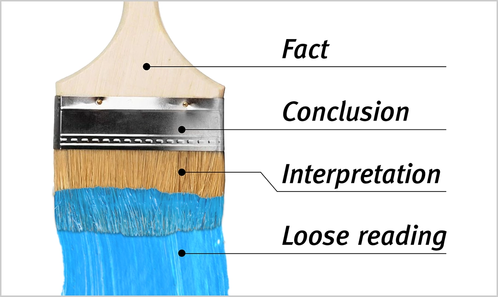
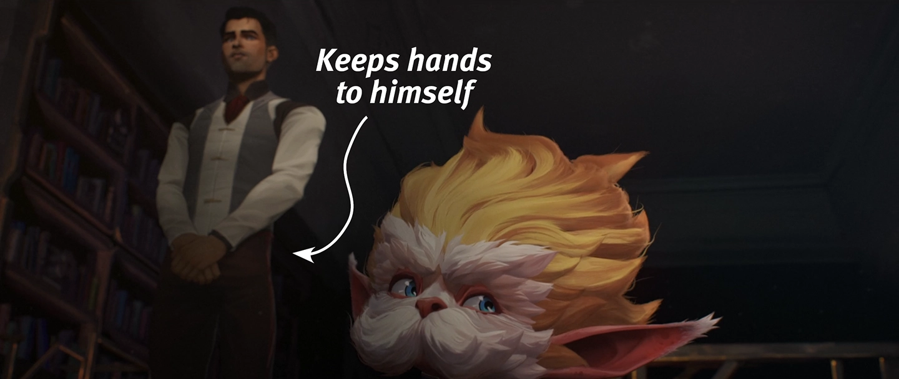
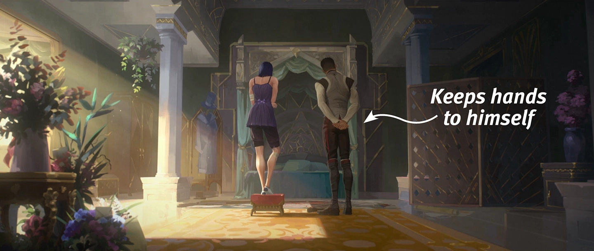
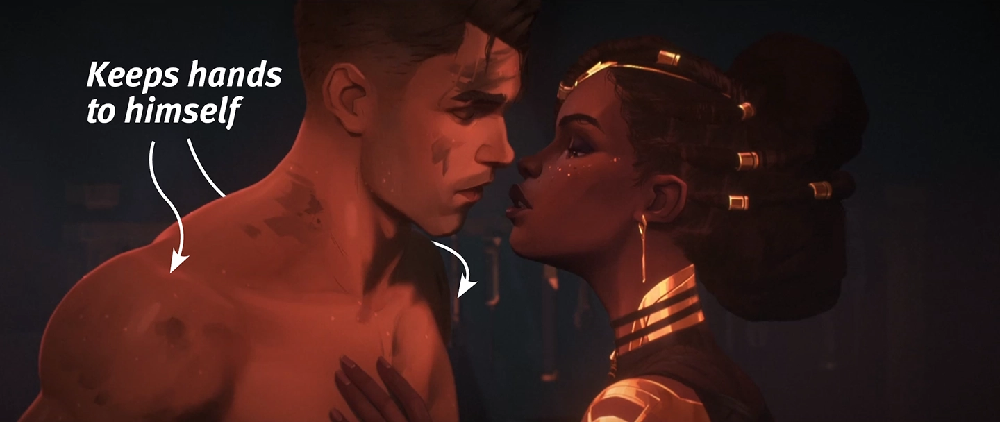
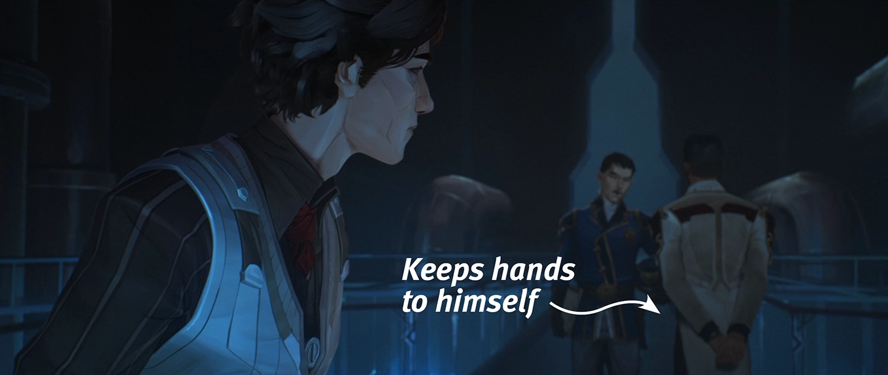
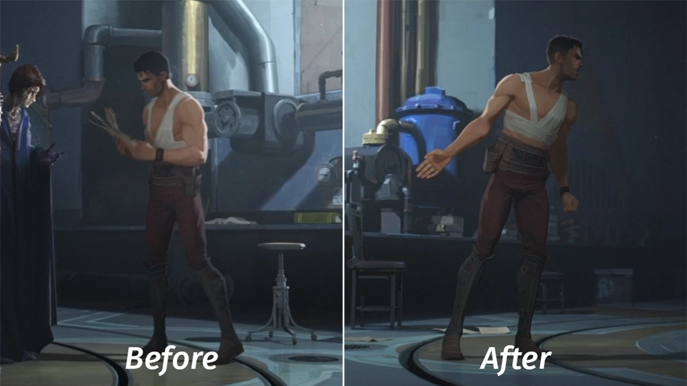

TL;DR
In Arcane: League of Legends, Jayce and Viktor love each other. Romantically. Their romantic love is woven into every layer of the work, right down to the plot structure—and there’s solid evidence for that.
In 2024, we got both an unequivocally romantic ending to this plotline—and a flat-out, if hopelessly muddled, denial of the romance from one of the showrunners. And off it went. You can’t express admiration for a fairy-tale story of love on social media without getting a helping of something nasty dumped in your lap. So: no, I’m not interested in “ships”; no, I’d never read a single fanfic in my life before watching the show. I wasn’t out digging for romance in it. The second season made this love obvious without any effort on my part as a viewer. All that remained was to pick up the tools of several disciplines and analyze the arc carefully.
The result: Jayce and Viktor love each other—romantically. Neither of them knows Jayce is in love.
I’m laying this out with evidence, and there’s going to be a lot of it. On several fronts:
→ On film language from a film studies perspective
→ On the specifics of animation in general and Fortiche in particular
→ On how science defines romantic love (so much science, science my beloved)
→ On romance as the load-bearing wall of the story’s very structure, and why the characters don’t understand what’s happening to them
→ 💥 Arcane Ending Explained 💥—I’ll take it apart down to the last cog
→ And, God help me, I’ll have to get into what the show’s creators have said, and how that one showrunner hasn’t kept his story straight—which is only part of the tangle around Jayce and Viktor’s relationship.
I’d rather not spend any time on that last one, because the work speaks for itself perfectly. But some people care an awful lot about what the author said. Okay. I’ll sort it out. Stay tuned.
For every argument here to be checkable, we first need to pull the main tools off the shelf and pin down the key concepts. Let us do just that.
Cinema, do you speak it?!
Arcane isn’t shy about using—sometimes brazenly, sometimes in the finest gossamer lacework—the techniques worked out over a century of cinema, and multiplies all that by animation of an insane caliber. It’s not even just that the show cranks the sacred principle of cinema, “Show, don’t tell,” all the way up—and cranked it is. For example, from this scene we learn that it was Ambessa who made the attack on the memorial ceremony for the fallen Council members possible:
How do we know this? Shoola asks the question, Mel supplies the “How,” and the editing and the camera angle answer the question “Who.”
Editing and camera angle—two of the building blocks of film language.
Film language is a perfectly precise concept; it doesn’t fall into the category of words that pin down nothing in particular, like “vibe.” It’s (wait for it) a language—with its own “letters,” “words,” and settled conventions of use. Shot, shot scale, camera angle, editing, sound—these are “parts of speech,” of sorts.
Like any language, film language gets more complex or simpler to fit the content. You can say “The cat sat on the mat,” or you can lay out “The Glass Bead Game.” Language can turn words into poetry—film language, dealing in abstractions across several channels of perception, can be far more poetic. But grammar will still be grammar.
Take shot scale, for example. To put it very simply: a long shot gives you context; a medium shot, action; a close-up, emotion; an extreme close-up, emphasis. In the Ambessa scene, the camera cuts to her and gives us a medium shot, which means the viewer isn’t being asked to focus on what she’s feeling. If the work’s aim here were to explore emotion, the shot would be closer, but in the way this sentence is “phrased,” the only thing that matters is the action taken. The way Ambessa stands in shadow, pointedly kept in the background—Salo’s hand is in the foreground—adds to the statement.

The sentence itself is built by the editing: question asked → guess → Ambessa. Mind you, this is editing at its simplest in Arcane. Otherwise the editing in the show is as brazen as everything else on screen: from Eisensteinian juxtapositions to jumps into an extreme close-up and back—and a double exposure for a chaser.
Arcane is just filled to the brim with every technique there is; this is living, deep, uncompromising cinema. That it’s also revolutionary, painstaking animation makes it immeasurably more alive. But the point isn’t how one pretty picture follows another. The point is that the narrative works as a whole: the gut-wrenching conflict, the complex, contradictory characters and the small details in their behavior that hook you, the hardest moral choices, the depth of motivation—all of this is ∼both∼ written and drawn, and you won’t see where one turns into the other; it was born as an alloy. Film language is what tells the story the screenwriters wrote.
Case in point.
Arcane adores repetition, which is no surprise: it’s a powerful technique in any art form. Even in real life, when something is clearly said twice, a new meaning builds on top of it— and in cinema, repetition is nothing less than one of the founding principles. But an exact repeat is rare; more often something shifts—the emphasis, who’s doing the action, and so on. What changed matters almost more than the repetition itself—and the meaning lives in that difference.
Look:

The bottom shot is a scene from the finale. It’s the same place as in episode 7 (top shot), allowing for the difference in universes, and it’s shown identically in composition, shot scale, and mise-en-scène. In episode 7, Ekko was here with Powder and kissed her for the first time; in episode 9, he’s sitting alone, off-center—emptiness to his left. Not a word is spoken, but we know—we know beyond any doubt—that in the bottom shot he’s thinking about Powder. That’s narrative, seamlessly woven with the visuals.
And no, Ekko thinking about Powder here is not an “interpretation.”
Now, an important announcement for the people who claim that absolutely everything in art is interpretation:
📢 Not everything in art is interpretation, people
How this works
→ Fact
Every discipline has some version of a “fact”: an indisputable given—a ∼point∼ of meaning. The humanities included. The ones that study art included. A proposition in logic, a basic belief in epistemology, a denotation in linguistics, a denotatum in semiotics. Even hermeneutics, of all things, has its “literal meaning.”
→ Interpretation
Interpretation, on the other hand, belongs to the humanities alone. It’s a rich, complex process of perception: what the reader or viewer constructs for themselves. A ∼field∼, not a point of meaning.
→ This is different: conclusion
But here’s what happens when we look not at a single bare fact in a vacuum but at several facts that are “in a relationship” with each other: a third category shows up. Not something “in between” fact and interpretation, but different in kind. Its basis is a logical relation.
Logic.
From facts—logically—we draw a conclusion. It is known as inference in logic and epistemology, and as logical consequence in semantics.
This is precise, verifiable information. There are premises, there are logical operations, everything is checkable. An error can be caught. The conclusion is singular. That’s why facts and conclusions exist in the hard sciences too, while interpretation exists only in the humanities and only where there’s a living perceiver. It’s almost impossible to “get it wrong” in interpretation because it has no right answer: it isn’t verifiable. A conclusion is another matter.
Which is exactly where the romantic love between Jayce and Viktor lives: at the level of facts and conclusions. It lives in interpretation too, of course—but only because it’s already solidly, verifiably in the work. Just this once, put plainly, with all the caveats in mind:
↓
Jayce and Viktor’s romantic love is not an interpretation.
↑
To prove it, we’ll need a methodological framework from film studies. Does film studies have anything like facts and conclusions, then?
Cognitive film studies: yes.
Cognitive film theory and David Bordwell
Film criticism in the last century looked like this. There were Grand Theories—“schools of thought”: psychoanalytic, Marxist, feminist, and so on. Each critic came in with their template at the ready and knew in advance what they would pull out of the work. No matter what the film is about—the critic sees what their theory tells them to see. They’re interpreting. The Tin Man in “The Wizard of Oz” is a worker dehumanized by industrialization.
In the 1980s, several film theorists and philosophers of art rose up against this wholesale practice of reading-in and started shaking up the academic world. With books, articles, and fiery speeches they laid a different question before film studies: not “What does this film mean?” (for the oppressed working class), but “How is this film put together, and what does it do to the viewer?” It was this line of thinking that grew into cognitive film theory.
In 1996 the cognitivists put their collective statement between two covers in “Post-Theory: Reconstructing Film Studies”—twenty-seven authors setting out their vision. The introduction to the anthology doubles as the movement’s manifesto.
Its main principles boil down to this:
☝️ A claim about a film is answerable to inference and evidence—by the most stringent standards of reasoning and argument.
✌️ The way a film makes the viewer understand, feel, and fill in what they’ve seen is explained by mental processes studied by science.
🤟 Instead of a theory that shapes the analysis in advance—concrete questions, with answers drawn from concrete clues.
One of the loudest of the cognitivist rebels was David Bordwell—who, as it happens, co-edited “Post-Theory.” Bordwell burned for the idea so hard that he fired off must-read books like a machine gun: more than twenty over his lifetime. Besides his big theoretical book, “Making Meaning: Inference and Rhetoric in the Interpretation of Cinema,” which we’ll need in a minute, there’s the most important one, “Film Art: An Introduction.” It’s a textbook, co-written in 1979 with Kristin Thompson—a fervent thinker with a cause and one of the leading figures of neoformalism in film studies. Utterly unsurprisingly, the co-authors’ relationship blossomed into a happy marriage right around the same time. “Film Art” has been through thirteen editions. Forty-five years—and it’s still the book people teach film studies from, all over the world.
In its 2024 farewell to Bordwell, the British Film Institute called him “the Aristotle of cinema study,” and that’s a spot-on description of David Bordwell’s contribution to film scholarship. Plus, among other things, he wrote his own “Poetics”—“Poetics of Cinema.”
Methodology
Back to separating facts and conclusions from interpretations.
In “Making Meaning,” Bordwell first lays out in full the types of meaning the viewer constructs while watching a film. The scheme has four levels: referential → explicit → implicit → symptomatic. It packs a wealth of detailed theory, metaphor, and subtlety, but right now we need the simplest possible measuring tool. Hence the short version:
→ referential roughly corresponds to facts (the givens of a world, imaginary or real, requiring minimal cognitive processing)
→ explicit roughly corresponds to conclusions (a meaning checked against the film’s cues)
Together, these two levels make up what Bordwell calls “literal” meanings: those constructed by ∼comprehension∼.
From there, though, Bordwell takes the umbrella concept of ∼interpretation∼ and sorts it by degree of abstraction:
→ implicit
→ symptomatic
Implicit meaning is interpretation in its basic form, a field of meaning in service of the filmmakers’ vision (for instance, a guess at what a character thinks or feels). Symptomatic, meanwhile, breaks away from literal meanings entirely and blasts off into outer space—or rather, straight to the Grand Theories and the workers dehumanized by industrialization.
If we squint, we’ll see a spectrum of solidity—from “irrefutably in the work” to “almost unrelated to the work.” So the scheme adapted to our purpose looks like this: fact → conclusion → interpretation → loose reading.
Let’s bring back sad Ekko and see how it works.
°Fact°
A unit of information that is clearly and irrefutably present on the screen.
→ A group of facts: the shot from episode 9 repeats the shot from episode 7, with one distinct difference—the absence of Powder.
°Conclusion°
Narrative logic: the information is neither shown nor stated, but it follows directly from the facts of the work.
→ Ekko thinks about Powder.
°Interpretation°
A flow of images and thoughts closely tied to what’s happening, born in the viewer’s mind.
→ Ekko regrets not staying in Powder’s universe. He knows he did everything right, didn’t abandon his people, didn’t steal his double’s life, but a quiet regret gnaws away at his heart.
°Loose reading°
Something from the external context, almost unrelated to the work itself.
→ Ekko stands as a symbol of the French bourgeoisie pining for the Revolution’s spirit of liberty.
Translated into a picture, it looks something like this:

An important note. °Fact° is a fact of the work itself: an element, a group of elements, or an event that the creators placed in the shot. °Conclusion°, in turn, isn’t everyday logic but a logic internal to the narrative: the difference isn’t in the logical operations themselves but in the specific set of premises. I’ll give you that set once we wrap up the methodology.
Text and film form
To back up the thesis that “everything in art is interpretation,” people keep tossing Roland Barthes’s “The Death of the Author” into the conversation. But even in Barthes, while the author is dead, the text is very much alive.
In its semiotic and cultural-studies sense, “text” is not words arranged into sentences but a coherent sign system—that is, a “work.” This system is like a living organism, everything in it interconnected. Facts are the text’s bones, conclusions are its joints. And a solid interpretation is everything else: the muscles and what’s on top. Interpretation is bound directly to the body of the text and grows out of it. (In this metaphor, a loose reading is the clothes.)
Which raises the question: how do we know that a claim is a conclusion and not an interpretation?
Besides a conclusion being checkable against a chain of reasoning, the other difference is that interpretation “fans out” into different shades and overtones of meaning, while a conclusion doesn’t fan out. It has no variants; it’s strictly univocal. That’s exactly why it can’t be elaborate or complex. It can rest on any number of premises: a conclusion from conclusions from conclusions from conclusions is routine. But the one you end up with is always simple enough: the bare functional “Ekko thinks about Powder”—not the specifics of what he thinks or feels. In effect, the gradation of solidity is also a gradation of complexity. Perceiving art through facts and conclusions alone is boring—don’t try this at home. I’m putting facts and conclusions at the foundation of this analysis for one reason only: to show clearly that Jayce and Viktor’s romantic love is objectively, solidly, and abundantly present in the text.
What you absolutely have to keep in mind: there’s a vast difference between “reading” the text and observing people in real life. Under no circumstances can we tell for certain what a living person is thinking. But characters are not living people. They’re a function—they have no thoughts, feelings, or experience beyond what’s shown and what follows from what’s shown. A living person is a near-infinity of data we don’t know. Characters are part of a coherent system that already contains every single piece of the puzzle. This system exists precisely for us to know—or guess—what the characters are thinking. Bordwell and Thompson call it film form. Film language is the grammar; film form is the text assembled according to that grammar. Film form is a living, indivisible system of patterns—a unity of narrative and style—where any element at all (from costume to camera movement) works to make meaning. There are no accidental details. What you see on screen is all clues, and they lead to the solution—sometimes instantly, sometimes with a delay. This is the first principle of film form—function: every element is there for a reason (“Film Art,” chapter “The Significance of Film Form,” section “Principles of Film Form”).
No clues, nothing to investigate: if some fact isn’t in the film form, then it isn’t written into the pattern, and so no conclusion can be drawn from it.
No conclusion can be drawn without facts
I promise you intellectual integrity, just as the great Max Weber intended. I’ll carefully separate facts and conclusions from interpretations. If you see me overreaching, write in, we’ll chat.
The art of Fortiche
Back to the “parts of speech” of film language. Another important one is acting. Since we’re dealing with animation in Arcane, there are some finer points here.
Fortiche, the French animation studio behind the show’s visuals, has created an undisputed masterpiece. Some frames from Arcane could hang in high-end art galleries. But how Fortiche works with color, composition, detail, and symbolism, how the textures born of their brushes breathe—that’s only part of the story. Arcane is an ode to expressionism and a stunning contemporary dance of rhythm, but the way the artists bring the characters’ body language and facial expressions to life is something downright unthinkable for mainstream animation (who am I kidding—this isn’t mainstream, it’s pure arthouse that made it big).
Arcane’s signature style starts with its hybrid nature: a half-finished base was built in 3D—the characters’ form and motion, the camera moves—while textures, backgrounds, and effects (explosions, smoke, magic, scratches, even the light) were meticulously painted over it by hand. The result: several Emmy awards for each season, critics calling the animation some of the most beautiful in the world, and Arcane becoming a cultural phenomenon. But one thing is worth singling out: the characters were animated with no motion capture at all. That means the animators keyframed every—and I mean every—movement by hand, frame by frame.
The characters’ poses and facial expressions were modeled on all kinds of reference material; the animators even filmed themselves staging some of the scenes, and honestly, it’s hilarious. They look like kids in a school play.
Yet what we get in the end is drama so subtle and powerful that if a live actor played it, they’d walk off with an Oscar. This is peak: absolute cinema and absolute animation, melded into what is virtually a new genre.
In Arcane, every breath, head turn, shift of expression, and pupil dilation was deliberately created for a specific artistic purpose. A live actor’s micro-expressions or accidental physicality can add meanings the creators never originally intended (mind you, whatever makes it into the film is in the film—and part of the text). But in animation, everything is ∼intentional∼ at every stage.
The idea that everything in animation is intentional isn’t something I made up or a rhetorical flourish—it’s a basic property of this art form. Plenty of acclaimed filmmakers have said as much, one way or another—Gore Verbinski, Henry Selick, Brad Bird. But let’s check this against the academic view. Paul Wells, one of the leading theorists and historians of animation, writes in the introduction to “Understanding Animation” that animation is “a distinctive form that works in entirely different ways from live-action cinema.” There he also quotes animator Alexandre Alexeieff: “Contrary to live-action cinema, Animation draws the elements of its future works from a raw material made exclusively of human ideas […] In the causal concatenation of their images—a concatenation they conceive themselves—nothing can be left to chance.”
A copy of the book can be found here, for instance.
Further on, Wells relays a bit of animation lore from Robert Breer—an artist, animator, and one of the pioneers of the American film avant-garde: as an in-joke, animators often hide a single frame with a drawing of a brick inside a moving object. The viewer doesn’t notice it because the frame flashes by too quickly. But tell the viewer the brick is there, and they start looking much more closely. That’s why Wells gives his book a motto: teach the viewer to “see the brick.” For watching Arcane, this skill is vital, but with one important caveat: Fortiche doesn’t plant “bricks”— they plant signs chock-full of meaning, without which the work doesn’t function as a whole.
The only way to know for sure whether there’s a “brick” is to hit pause, and that’s standard practice: film analysis and stills have always gone hand in hand. Our beloved Roland Barthes, who killed off all the authors, even went so far as to write a programmatic statement that the essence of cinema can only be grasped in the still: the essay “The Third Meaning: Research Notes on Some Eisenstein Stills,” first published in the legendary Cahiers du cinéma (no. 222, 1970). Here’s the essay in English translation. The juiciest part is at the end, under the subheading “The still.” I won’t be as categorical as the maestro—I’m not about to cancel the moving image—but keep in mind: what’s in the text as an indisputable fact doesn’t always sound loud on a casual viewing. But if every frame matters even in live-action film, then for animation, multiply that tenfold. Why’s that? Because:
In animation, everything is intentional
The “flesh-and-blood” part of acting in animation belongs to the voice actors. When live actors play off each other on screen, something unpredictable can spark between them—what’s called “chemistry.” For Arcane, though, the actors recorded their lines in isolation from one another, with the director keeping them on a tight rein. While this isn’t as finely calibrated as an animator’s work, there’s far less room for improvisation in the booth than when you’re acting opposite a live partner. Which means that here, too, what we have is choice, not chance.
The upshot
That’s it for methodology. We’ve got the main tools in hand. I wrote a little earlier that a conclusion isn’t everyday logic but a logic internal to the narrative, and the difference between the two comes down to a specific set of premises.
Here’s that set—the premises plugged by default into every logical “computation” in analyzing film form:
→ Film language has its own “grammar” and its own conventions.
→ The text, or film form, is a coherent system that already holds every piece of the puzzle (the “clues”). Every element is significant and connected to the others—it doesn’t get analyzed in a vacuum.
→ If a fact isn’t in the work, no conclusion can be drawn from it.
→ Characters aren’t people; they’re a function of the narrative: they have no thoughts, feelings, or experience beyond what’s shown and what follows from what’s shown.
And if the film form is animated, add one more:
→ In animation, everything is intentional.
Observations first
So. Jayce and Viktor.
We can roughly split their arc (the “Hex arc”) into two parts:
≈ The first, where things are more or less clear (the first season and the start of the second)
≈ The second, where you can’t make heads or tails of anything (the show’s last two acts)
Let’s tackle the “clear” part. First we need to collect observations; then we’ll dissect them and figure out how science sees all this.
Above all, keep in mind: the text shows an emotion, but whether the character is aware of it is a whole other question.
The first standout °Fact° looks like this: Jayce openly checks Mel out as she walks away, and it stirs a sharp emotion in Viktor.
What? How? Why? Why is the emotion so sharp? In dramatic terms, something must have led up to it; it couldn’t have come out of the blue. And yes, the show has everything that makes this reaction logical, but I’ll need a few more inputs first, so we’ll come back to this point later.
Seven years on, we find the young scientists practically joined at the fin. They’re each other’s most important person. They say “we” more often than “I”: “It’s our turn to decide the future of Hextech,” “Poor use of our time,” “Our pledge to improve lives for those in need,” “You want us to build weapons?” “We’re scientists, not soldiers,” “Exactly the sort of thing we wanted to fix with Hextech” (and that’s just the tip of the iceberg—there are enough examples of “we” and “our” to sink more than one Titanic).
They think and talk about each other when you’d least expect it. Jayce talks about Viktor nonstop. Time and again, when Jayce opens his mouth around other characters, he steers the conversation to Viktor.
Viktor steers the conversation around to Jayce, too.
Jayce: Remember the Distinguished Innovators competition?
Viktor: I remember you… (notching gears in the carriage over).
Singed (Viktor’s mentor; the show calls him “Doctor” many times and uses his surname, Reveck, once, but he’s an incarnation of the League champion Singed, and that’s the name in the credits too) talks about weighty, fateful things: reputation in the scientific community, the legacy you leave for posterity.
But Viktor thinks only about Jayce and how he’ll react—“Jayce will understand”—and everything else simply doesn’t exist.
Jayce CONSTANTLY touches Viktor. There are so many of these touches on screen that people sometimes wrongly decide Jayce is just touchy-feely by nature. But that’s not true at all. Jayce is very, very reserved and keeps his hands to himself like a good boy.




He touches Cait, something of a kid-sister figure to him, exactly once: a brief pat of support and condolence in her darkest hour, as she grieves her mother’s death.
He also flicks her hat on Progress Day, but that’s not him being touchy-feely—it’s “brotherly” goofing around.
The only two people Jayce gets his big paws on are his mom and his Viktor.
Jayce touches and hugs Viktor for no reason and without asking—a hand on his shoulder, between his shoulder blades, a palm sliding down to the small of his back. It doesn’t even cross Jayce’s mind that there could be distance between him and Viktor—he doesn’t register it as the norm.

When Jayce doesn’t get his fill of touching Viktor, he touches the spot Viktor has just left.
Now, here’s how Viktor reacts to Jayce’s touch.
When he hasn’t had time to collect himself after the clash with Heimerdinger. Jayce has just leapt to his defense, and now he lays a hand on Viktor’s forearm—and Viktor goes still, his eyes half-closing on reflex. For a second, reality slips away from him—you can see it clearly in the pause before his line.
The bridge scene, where Jayce tries to touch Viktor, is especially telling.
Jayce is fuming. Viktor is fuming far more. But Jayce reaches for him anyway—and gets his hand slapped away. Yet the furious Viktor hasn’t gone three feet, hasn’t let a minute go by, before he’s once again expecting and accepting Jayce’s hand on his body.
Jayce: Let me hug you.
Viktor: Don’t touch me! … I’ve been standing here untouched for two whole seconds—where’s the hand on the small of my back?
This looks like a couple on the rocks having it out, not two “friends.”
Then there’s a moment drawn with a jeweler’s precision to be sensual: the backstage hug before Jayce’s Progress Day speech.

Proxemics and the close-up
Here’s what science tells us: anything closer than 18 inches counts as intimate distance, not meant for friends or even family. That’s from Edward T. Hall’s classic study of proxemics, which is still the standard reference today.
An easier read: wiki.
Source: Edward T. Hall, “The Hidden Dimension” (chapter “Distances in Man,” subsections “Intimate Distance” and “Personal Distance”).
Here’s what film language tells us: this is an extreme close-up, with the two characters so close to each other and to the virtual camera that we can hardly tell what’s happening. A fragment of Viktor’s face is isolated, drowned in Jayce’s body, wrapped in it, and that body is out of focus, blurred. What we’re given is the sensation of body-to-body closeness. Not action, but feeling. Viktor casts a quick, almost furtive glance at Jayce’s lips. And when Jayce moves past toward the stage, for a moment filling the whole screen, then leaving Viktor behind, the camera stays put, and the loss of closeness is all but written across Viktor’s face—he doesn’t take his eyes off Jayce, and his body strains after him, just a little.
Intimate distance, an embrace, a shot this tight—in film language, and even more so in animation, none of the above is the convention for showing that two characters are just friends.
Camera distance is always a choice, and always loaded with meaning—a function, in Bordwell’s sense. This principle hasn’t changed in a century of cinema, and with the close-up in particular, the convention took shape literally as soon as the medium was born.
Starting in the 1920s, Béla Balázs (Hungarian writer, screenwriter, and film theorist) developed, book after book, a theory of the close-up as a special mode of closeness. In the close-up, emotions stop being something hidden inside and become directly readable—“In close-ups every wrinkle becomes a crucial element of character and every twitch of a muscle testifies to a pathos that signals great inner events” (“Early Film Theory: Visible Man and The Spirit of Film”). According to Balázs, the close-up creates an intimacy between viewer and character that no other shot scale can reach.
Nearly a century later, Mary Ann Doane (a major contemporary film theorist and a professor at UC Berkeley) revisits the close-up and, in her book “Bigger Than Life: The Close-Up and Scale in the Cinema,” notes that it is traditionally used to convey closeness, intimacy, and access to a character’s interiority (chapter “The Delirium of a Minimal Unit”).
And Bordwell and Thompson write in “Film Art” that “certain framings in a film may stand out by virtue of their rarity” and gain greater force from it (chapter “The Shot: Cinematography,” section “Framing”). What we have here is an extreme close-up in which one body, out of focus, embraces a fragment of the other’s face. In the show, you could count shots like this on one hand—and against that backdrop, this one matters in its own right.
What’s more, this scene is so thoroughly Viktor’s point of view that we aren’t even shown how Jayce reacts when Viktor refuses to go up on stage with him: Viktor is drowning in the sense of closeness and doesn’t take in Jayce’s expression—so we don’t see it either. Fortiche leaves a slight incompleteness in Jayce’s emotional phrase, and that incompleteness serves Viktor’s emotional phrase.
But we did see Jayce’s face a second earlier:

Bottom line: the shot scale and the visual choices put a loud emphasis on the moment and invite us to look closely at Viktor’s emotions, hinting at their sensual nature, while the facial expressions, the body language, and the physical closeness—shared by the two of them and described by science as intimate—tie the whole thing up with a bow.
I’ll add this shot here, too. A focused, adoring gaze, a fragment of a face, and the blurred figure of a partner in the foreground: a compositional double of the backstage shot, but with the characters trading places. One of the many parallel repetitions the Jayce–Viktor storyline is simply drowning in. This is important, and we’ll get to this sea of parallels a bit later.

Now let’s take a look at a pair of male characters whose absolutely platonic friendship nobody questions. No subtext, no homoeroticism. Pure. Male. Friendship. Built into the plot and conveyed through film language. “The Shawshank Redemption,” Andy and Red.

Their friendship grows over twenty years. Both their paths through the story lead to freedom and, in the end, to each other. This is what the film’s final scene looks like.
Notice how the camera soars up and away into an extreme long shot as they embrace. First and foremost, film language is telling us here about freedom, set against the years in prison, and about the vast world opening up before the characters—but also that the touch and the embrace don’t matter. That’s not what this story is about.
Darabont is quite a visceral director. Just think of the film’s most famous scene, the one in the rain.

Or, for example, minutes before the end, Red finds a letter, and everything—the birdsong, the light, a run of medium shots and close-ups—conveys specifically what the character physically feels.
But in the finale, it’s freedom and spirit—not the body.
Jayce and Viktor’s relationship, on the other hand, is rendered as very, very physical. There’s way too much touch and proxemic closeness here for an artistic portrayal of buddy-buddy friendship; what comes across is far more intimate. And I’ve only scratched the surface.
Love doesn’t cancel out friendship
One thing needs clearing up. Friendship is important and awesome. Jayce and Viktor share a friendship as vast as the ocean. But that’s not all. The point is, science counts friendship as part of romantic love—its most important component. In lasting romantic love, friendship and romance don’t crowd each other out; they work together. This is established knowledge, built up by science over time.
→ Psychology: the big picture
Ellen Berscheid, one of the leading figures in close-relationships research, divides all manifestations of love into four types and identifies companionate love—friendship love—as the foundation of long-term romantic relationships. Over the short run, being in love can do without the friendship component, but serious, deep romantic relationships, according to Berscheid’s concept, don’t happen without companionate love.
→ Fresh empirical data
A much-talked-about meta-analysis of seven samples, covered by major media: two-thirds of romantic relationships started friends-first, and it’s the route people prefer.
Stinson, Cameron & Hoplock 2022
→ Neuroscience
For people in long-term, stable romantic relationships, friendship-based love (friendship merged with love) and romantic attraction as such (“butterflies in the stomach”) have two distinct, simultaneously active neural correlates. They don’t compete and don’t displace each other. The strongest, tenderest romantic relationships (exactly the kind the study looked at) stand on a physical substrate of friendship+love.
Acevedo, Aron, Fisher & Brown 2012
That’s why every time someone shows up in the replies clutching their pearls because a beautiful friendship got trashed for the sake of something so vulgar, an angel loses its wings.
Romantic love is not “lesser,” and friendship is not “more important.” Which brings me to a question that eats at me in its own right: why does friendship always turn out to be the supreme sacred value, and love something petty and dirty—when it comes to same-sex couples?
The Hex arc’s main motif
Sorry, I got sidetracked. We were talking about touch and how Jayce and Viktor have way too much of it.
Too much for some, but for the show it’s still not enough. “I will become one with these touches down to my DNA and make the viewer puzzle over their symbolism!” the show declaims with great pomp, turning the characters’ touches into bolts screwed into the spine of the story arc, into the load-bearing piers of the bridge this story races across.
To make sense of all this pomp, let’s look at what’s going on.
When any fact of the work (an object, a gesture, a color, a line, a shot’s composition, and so on) is clearly repeated, that’s called a motif. In the Jayce–Viktor arc, one of the most repeated motifs is passing something along. It feels insistent, almost excessive, like an earworm, like rolling echoes coming back again and again. It’s an unmistakable invitation to look more closely and draw conclusions.
Besides the main events, the alpha and omega of the plot—the rune passed to little Jayce at the beginning and the same rune passed to astral Viktor at the end—the motif runs through a host of scenes, including the most everyday ones.

Here’s what we find: if we take these moments of passing something along and string them together, we get a retelling of every key event in the Hex arc.
→ The Mage hands over the rune—the Inciting Incident
→ Viktor returns the bracelet—their first meeting
→ Viktor passes along the glowing thing—heist time
→ Jayce floats a cog over to Viktor in zero gravity—the technological breakthrough
And you know, I think this moment is also part of the sequence: Jayce passes his Hextech dream along to Viktor, making it theirs.
In motion, it looks like this:
Jayce “passing” the Hexcore into the chest of a half-dead Viktor rhymes with the passing of the dream—but it’s a mangled, monstrous rhyme.
In other words, these scenes are pivotal to the plot. By marking them in a recognizable way—with a repeat of the passing motif—the work signals that a scene is pivotal. And at the same time it works the other way around: by placing the passing motif in pivotal scenes, the work raises the motif’s weight in the story.
Film form makes it clear what matters and where to look. The heart of that story lives in these moments.
Let’s set the symbolism aside (passing as a symbol of trust, shared responsibility, blah blah blah); it’s too ephemeral. But here’s what’s solid: the object—what gets passed—and the condition—how it gets passed. And in the overwhelming majority of cases, the passing involves touch.

Fortiche handles these scenes in a deeply tactile way: close-ups, slow motion, the tenderness of the contact. Touch is inseparable from the meaning of the motif.
Our boys barely talk to each other about feelings out loud, but their touches say everything that needs saying. Just as the story lives in the objects passed along and says, “Look here, this is important,” Jayce and Viktor’s feelings for each other live in their touches. And this is important.
Where were we?
Let’s keep logging observations.
Viktor pays Sky no attention whatsoever—to the point where it’s honestly not very nice of him. Her existence leaves him catastrophically indifferent.
Just compare how Viktor looks at Jayce backstage with how his eyes skim over Sky, as if she were a piece of furniture.
At most, he’s polite, and even then without any contact, without a single look her way. And when she works up the nerve to “make the first move,” he puts up a wall of aloof politeness between them. We don’t know whether Viktor always addresses Sky by her last name, but here it’s a response to her attempt to get closer, and so it partly comes across as a rejection, even if a gently delivered one.
Here’s how Viktor reacts to the suggestion that they walk home together:
He barely registers Sky’s words and is completely absorbed in his work. Right after that, we aren’t shown Viktor’s face, and there’s no saying for certain that he’s deliberately rejecting romantic attention—all we have here are interpretations. But even the warmest of these interpretations points to Viktor having no interest in spending time with her.
This is the only way the show ever portrays Viktor’s attitude toward her. It’s not until the “brainchild” he shares with Jayce kills Sky that Viktor latches onto her notes and talks about her dreams (interpretation: because he’s crushed by unbearable guilt). But we’re never given the slightest hint that she meant anything to him while she was alive.
The show gives Jayce no love life at all at thirty-plus, despite his looks and popularity, and he isn’t ready for a relationship with Mel either, or expecting one.
He pulls back in surprise when she pays him attention:
When she initiates a kiss, the show puts heavy emphasis on his shock. Two different camera angles on his wide, stunned eyes—that’s mega-emphasis.
After sex with Mel, Jayce lies with his back to her and (bleakly) stares into space. I put “bleakly” in parentheses because it’s closer to interpretation. But the solid fact is that there’s no contact between him and Mel.

And then… *drumroll* Jayce sneaks away from her, and in the next scene he’s at Viktor’s bedside.
Here are the facts:
Mel wakes up alone and is so unhappy about it that the next day she’s curt with Jayce and hurls paint at her painting, while Jayce sounds very guilty.
+
Jayce sits at Viktor’s bedside in the hospital that same night—it’s dark, the lamps are lit.
=
Jayce quietly left the sleeping Mel, knowing it wasn’t a nice thing to do; he went to the lab, found Viktor’s unconscious body on the floor, and got him to the hospital.
Once again: Jayce snuck away from Mel to Viktor after sex. And the show epically juxtaposes two beds, in exactly the same camera angles and compositions, one cut directly after the other.
The love triangle
All through the series, Mel and Viktor are shown from identical angles and in identical compositions.


Much of the time, this similarity comes through Jayce’s point of view: flirtatious looks seen through Jayce’s eyes; the beds he’s torn between; his hallucinations. These repetitions set up rhymes in Jayce’s feelings and in the beauty he sees. That’s how film form builds the image of a love triangle. An asymmetrical one, one the character isn’t aware of. But the work tells us in a multitude of ways that it is indeed a triangle—and through Mel and Jayce’s relationship, it becomes a “love” triangle.
Just look at the sex scene. It’s an absolute outrage, not a sex scene. We aren’t shown “Jayce and Mel having sex”; what we see is a rhythmic compilation with a cast of three—four, if you count the Hexcore. Viktor is planted in the scene as an integral part of it. And that’s strictly °Fact°.
I could write a whole separate essay on this sex scene and all the meanings sewn into it, but I’ll spare us all and leave it at that.
Next in the story comes an exquisite transition between scenes: Mel with Jayce lying in her lap, and Viktor sitting facing the Hexcore. The transition works by Eisensteinian logic: from the juxtaposition of two shots, a third, independent image is born. And once again it glues the trio into a single whole. There’s a moment when, thanks to the double exposure, Jayce seems to be lying in Viktor’s lap.

At one point, we’re literally shown the three of them as a triangle. Romance is only one of the meanings here (others: class inequality, the choice of a moral path), so at this particular point the love triangle takes off into °Loose reading°, but it doesn’t have to hold up ironclad in every single moment—it’s held firmly in place by other solid facts and conclusions, some of which I haven’t named yet. But the °Fact° is: we see three corners. In the bottom corner—and also midway between Mel and Jayce—is Viktor.

At the bottom—because he has the least political influence and the least say in the situation. Between Mel and Jayce—as a pain in the ass; an obstacle standing in the way of the happy couple’s serene bliss.
People who think there’s true love between Jayce and Mel never tire of bringing up this shot. True enough, it’s literally the only scene where Jayce finally reaches his hands out to Mel the way he’s only ever done with Viktor before.

But, folks, they’re a few steps from Viktor’s body here—they’re not alone. Jayce has just been desperately clinging to his “partner’s” crutch. The crutch—a visual proxy for Viktor, who’s suspended in magical jelly nearby—was literally wedged between them:

Mel has to take the crutch out of Jayce’s hands and move it aside, and we’re shown it all in close-up. This is no throwaway moment. And we get a split second of Jayce’s hesitation in extreme close-up, in response to Mel’s move. Jayce doesn’t want to part with that damn crutch.
Let me remind you once again: I’m not talking about relationships between real people; I’m talking about what the show’s creators chose to put on screen, and how.
Come on, Arcane, just give us a full-fledged romance between these two already. Just send Jayce out for a stroll with Mel, arm in arm—with not a trace of Viktor in that moment: not in the mise-en-scène, not in a single line. Look—Jayce does go out for a walk in the park to check on Cait; he isn’t nailed to his half-dead partner. Cait is important enough for him to leave Viktor for a while, but Mel isn’t?

How beautiful it would have looked: the lovers sharing a moment of grief under the blossoming trees, just the two of them. So why, my dear show, do you only ever give us Mel and Jayce’s “love” with Viktor appended? What are you trying to tell us, show?
This love triangle isn’t merely a visual vignette: it’s in the characters’ motivations, in the dialogue. From the sex scene on, there isn’t a single conversation between Mel and Jayce that doesn’t involve Viktor—Viktor is always between them.
As long as Jayce saw Mel as a benevolent mentor, he apparently didn’t talk to her about Viktor. Because when Jayce, instead of apologizing, starts unloading on her about his partner, she’s surprised that Viktor means anything to Jayce at all. And that squint of hers—she ∼suspects∼ something:
Once they’ve slept together, though, there’s no plugging the fountain of Jayce’s outpourings about Viktor.
Essentially, the last scene where Jayce and Mel talk only to each other and only about each other is the one before the kiss. And the first scene where, after a long break, they again talk only to each other and only about each other is the scene where their love affair ends—the moment they part as good friends. The “You will never be a passenger” scene, season 2:
Why does this scene mean it’s over between them?
Jayce has just thrown in Mel’s face the bitter accusations he’d agonized over down in the ravine, and although he apologizes afterward, he:
a) doesn’t touch Mel;
b) leaves.
Even between real people, this would look like it was over, and in a work of fiction, the details come together into a single imprint, a concentrated idea. If the creators had wanted to convey that Jayce and Mel had made up and were still “dating,” we’d have seen them standing side by side, something like: a half-embrace, Mel’s head on Jayce’s shoulder, the two of them looking out at the horizon in the same direction—a shared path, a shared emotional experience. But no. Jayce leaves.
Mel herself, for that matter, has far bigger things on her mind here than a fling with Jayce: she’s talking about something difficult and painful, tied to her heritage—nothing about Jayce, zero. In her lines, this relationship doesn’t exist for her, and in her body language, in touch, it doesn’t either. And the scene ends with Mel standing and looking out at the horizon alone:

Their love affair has run its course.
It’s a conclusion—not an interpretation—backed by far more facts than I’ve laid out above, but even these are enough.
So what made Jayce squirm, and kept him talking to Mel about Viktor nonstop, from the very start of their relationship right up to its end? The show portrays Jayce’s guilt, but it’s unconscious. And I’ll tell you what that guilt is, but first, let’s log…
…a few more observations
It isn’t obvious to Mel herself that sex should make them any closer. When Jayce starts acting like a teddy bear and curling up in her lap, she’s a little taken aback.
They were never close: Jayce doesn’t know the most basic things about Mel—like that she’s an artist. And while you’re at it, listen to how guilty he sounds here:
About two weeks pass between the kiss—which Jayce didn’t see coming—and his abduction by the anomaly. That’s the entire lifespan of their situationship. Mel only takes an interest in Jayce as a man once his face is on every surface in Piltover, airships included. “An interest” is as far as it goes. The show portrays no great love here. Given her usual modus operandi, what’s in play at first is the intent to “hook him, use him for pleasure and occasionally in politics,” plus a liking for him and a playful little thrill. But Jayce, with his clumsy cuddliness, stirs genuinely warm feelings in Mel. And at the same time, he starts driving her up the wall with that damn Viktor. I can only imagine how disorienting that must be: you think you’re starting a relationship—one you never planned on—with a dude, and it turns out it’s two dudes at once.
Not a brother
Jayce says of Viktor, “He’s like my brother,” but:
1) Jayce has no siblings.
2) The closest Jayce has to a sibling is Cait; and Jayce’s behavior toward Cait is dramatically different from how he behaves with Viktor.
Before all that, though:
0) The trope “He’s like a brother to me… Oh my God, I’ve loved him all along!” or “Character mistakes romantic feelings for familial ones” is well known and long established. It’s already there in Jane Austen’s “Emma,” the novel itself as well as its film versions and loose adaptations like “Clueless” (1995): the heroine has thought of Knightley (aka Josh in “Clueless”) as a kind of older brother for half her life and is taken by surprise when she finds herself jealous. Rom-coms lean on this device all the time, some harder than others. The characters in “When Harry Met Sally…” spend years convinced they’re just friends, until fear of losing each other and unexpected jealousy make them realize their closeness stopped being platonic a long time ago. In “Gilmore Girls,” Lorelai, who for seasons has looked on Luke as her safe haven and family, finally lets herself see him as the man she loves. The trope is alive and well, examples are everywhere—I think you get my point.
Now, back to the list:
1) Jayce has no siblings, so he doesn’t know what that kind of relationship feels like; he has nothing to compare it to. He only knows that his feelings for Viktor go beyond anything he’s ever felt for anyone else, go beyond both “partnership” and “friendship,” but Jayce can’t figure out what to call it. A bit later, in the resurrection-and-parting scene, we’ll see Jayce torn between “partner” and “best friend,” sensing that neither word captures what he feels, and so neither can make Viktor stay, even though Jayce knows they can’t and shouldn’t part ways—they’re two halves of one whole, they’re meant for each other: “My place was always here… with you.” But the word he needs, Jayce can’t find.
2) Jayce and Cait’s relationship is lively, full of laughter and digs, some of them pretty harsh. Each is a little condescending toward the other—classic brother and sister.
There’s none of that in the way Jayce treats Viktor. Jayce speaks to Viktor in a soft voice, looks at him with indescribable tenderness, sometimes with his lips sensually parted.

As for how Jayce keeps reaching his hands out to Viktor—and almost no one else—and has taken up permanent residence in Viktor’s proxemic intimate zone, I’ve already told you about that.
Jayce steps between Viktor and danger—physical, social, political.
Viktor responds with gratitude and admiration—and then melts under Jayce’s touch.

Jayce can’t stand it when he and Viktor argue, and tries to smooth things over right away.
On the bridge, where Jayce is the one who raises his voice first, he’s also the one who instantly apologizes and softens his tone.
In the Hexheart, a minute before talking to Marcus, Jayce tries to apologize for how his Progress Day speech went. Viktor blows up even more, and Jayce reacts with a telling expression. He makes the same face during the conversation in the lab, when Viktor answers passive-aggressively. Viktor is unhappy—Jayce is uneasy.
Jayce is a very heavy sleeper: we’re shown him sleeping right through the blaring sirens and through Mel waking up in a panic. The same happens when Jayce is asleep next to Viktor, who is hauling himself out of the magical jelly: the loud clang of a metal body hitting the floor, the clatter of a crutch, and Jayce is dead to the world, just like with the sirens. But the moment Viktor says “Jayce?” softly, barely above a whisper, Jayce is instantly awake.
Jayce is so afraid of losing Viktor that he first kicks Heimerdinger off the Council and, without any qualms, uses Mel pretty heavy-handedly to do it. Then he breaks his promise to Viktor without stopping for a second to think about the consequences. And when the “resurrected” Viktor leaves him, Jayce is under severe stress and heartsick: rumpled and uncombed (not like him at all—he’s normally very neat), wearing his Academy uniform, sleeping in the lab, not at Mel’s, as if this way he could at least get back the old days when “everything made sense” and feel some connection with Viktor.
Jayce has been dumped by his “friend,” and it hurts, but he doesn’t take that hurt to the woman who could support him emotionally. As if that would be improper. As if Viktor were the only one who could numb this pain. Jayce’s voice is cracked and miserable.
That’s it—I’ve got a full bingo card of Jayce’s behavioral and biological markers of romantic attraction. Time to check them against the science.
How science defines love
What’s now the consensus was laid out by Lisa Diamond in a 2003 Psychological Review paper. Romantic love is the product of two functionally independent systems: the gonadally mediated system (androgens in men and estrogens + androgens in women) and the neuropeptide–dopamine system (the neuropeptides oxytocin and vasopressin + the dopamine reward system). Put simply, sex and romance often work together, but they are two different mechanisms.
This second, neuropeptide–dopamine mechanism underlies what’s called “pair-bonding,” and science considers it key to romantic attraction. Pair-bonding is a behavioral pattern, and the neuropeptide–dopamine circuit is its neurobiological substrate. The gonadal system, meanwhile, is responsible for sexual desire.
Diamond’s article on the journal’s official site (abstract only).
You can grab the full PDF on ResearchGate.
When the neuropeptide–dopamine circuit is stimulated in a particular way, it gives you butterflies in your stomach, longing for the one you love, and other poetic emotions. At bottom, it’s a complex, uncontrollable tuning of the body at the neurochemical level—not a moral choice, not a conscious decision; the body inexplicably “clicks” (for a million reasons), and off it goes.
A recent review of the neurochemistry of love: Blumenthal & Young 2023.
The term pair-bonding itself comes from 1940s ethology, and 1970s sociobiology brought it into the discourse on human behavior. Conceptually, it is closely intertwined with attachment theory, which John Bowlby developed from the 1960s on as he studied the biological system of the “mother–infant” relationship. In 1987, Cindy Hazan and Phil Shaver applied Bowlby’s attachment theory to adult romantic relationships.
Here’s where the science stands now: romantic love is an exaptation, a function that existed for one purpose but evolved and adapted for another. In other words, there is a neurobiological mechanism that evolution shaped so that offspring would survive better, and the species would carry on. That very mechanism is what adapted and began to work as romantic attraction. These aren’t “two identical” mechanisms—neurobiologically, it’s one and the same mechanism.
A paper on this: Bode 2023.
In early, acute states of pair-bonding, researchers describe, for example:
— an intense desire for closeness and physical contact with the partner
— intrusive thoughts about the partner
— resistance to separation
Remind you of anyone?
And another term: cognitive interdependence.
Two misreadings need heading off right away:
∼ This is NOT codependency. Codependency is an unhealthy, unbalanced state of a relationship.
∼ This is NOT structural interdependence. Coworkers have structural interdependence too.
Cognitive interdependence is a mental state in which partners incorporate each other into their self-concept and come to see the other’s goals, emotions, and well-being as part of their own. Cognitive interdependence turned out to be nonsignificant even among best friends, but strong in romantic relationships.
Agnew et al. 1998: the paper via its permanent link (abstract available), full text on ResearchGate.
Markers of romantic attraction: Jayce
So, here’s what we observe in Jayce’s behavior.
→ The first marker: language. Jayce and Viktor constantly say “we.” In research, this is called we-talk. People talk like this when they’ve already cognitively included their partner in their “self-concept.”
A meta-analysis of 30 studies confirms that consistent use of first-person plural pronouns in spontaneous speech is statistically associated with high interdependence and high-quality romantic relationships.
Here’s the original paper: Karan, Rosenthal & Robbins 2019 (abstract available).
And here’s a write-up from UC Riverside.
There’s also self-expansion theory—about dissolving yourself in a romantic partner. It covers, among other things, we-talk as a sign of how deep a relationship goes.
And you can’t help thinking of classic mommy-speak: “we’re teething,” “we pooped”—that’s a close relative of the same phenomenon. “We” as a sign that the boundary between “self” and “other” is blurring—not only in the mind but in the body too. Between mother and child, this bodily blurring has been reliably documented from both sides.
∼ In the Kirsch et al. 2023 series of experiments, mothers literally felt physical sensations on their child’s behalf (though they weren’t so much guessing as projecting their own sensations onto their child—but they honestly perceived them as the child’s).
∼ And infants perceived their mother’s body partly as an extension of their own: Maister et al. 2020.
The authors of both studies directly compare this to how the boundary between “self” and “other” blurs in romantic couples. Here’s a review of research on embodied self–other overlap in romantic partners: Quintard et al. 2021.
It’s the same with Jayce—the very concept of boundaries with Viktor simply doesn’t exist for him, not cognitively, not physically.
→ Second: preoccupation. Jayce talks about Viktor constantly, in different contexts, with different people. This matches what psychology calls “intrusive thinking” about the partner, and it’s considered one of the classic signs of infatuation—the intense phase of romantic attachment. This phase typically lasts months, but research shows that with high interdependence, attachment anxiety, or obstacles to closeness, infatuation markers can sometimes persist for years. For Jayce, Viktor is a cognitive “anchor”: his presence (or absence) becomes the backdrop against which all other thoughts unfold.
Self-report studies show that people in love spend a large share of their waking hours thinking about the person they love, and these thoughts are involuntary. A review: Bode & Kushnick 2021 (for this point it cites Tennov 1979 and Hatfield & Sprecher 1986; search the text for “intrusive”).
And the neuroimaging in Fisher et al. 2005 explains why these thoughts are so intrusive and uncontrollable: romantic love activates the dopamine reward and motivation system.
→ Third: touch selectivity. Touch aimed almost exclusively at one person—and not functional touch (a handshake) but affective touch: a touch on the shoulder, a hand on the back, a hug. Neuroscience shows that affective touch activates the brain’s reward system and marks the partner as “mine” via oxytocin mechanisms (oxytocin is part of the pair-bonding system).
Touch is, in general, the primary way people communicate intimacy in romantic relationships. Romantic partners are touched significantly more often than are other people.
Sorokowska et al. 2023
Love is recognized more reliably through touch than through facial expressions or body posture.
App et al. 2011
→ Fourth: proxemics, or physical distance. I’ve covered the main point already; I’ll just add that, according to Hall’s theory, what draws people into the intimate zone is the desire to touch the partner and take in their scent. If a person keeps their distance, interaction is limited to less intimate channels—sight and hearing.
Same sources as the first time proxemics came up.
An easier read: wiki.
Source: Edward T. Hall, “The Hidden Dimension” (chapter “Distances in Man,” subsections “Intimate Distance” and “Personal Distance”).
→ Fifth: threat response. Jayce instantly steps between Viktor and any danger. When a person becomes a figure of deep significance, the brain starts scanning for threats to them the way it does for threats to itself, and automatically mobilizes resources to protect them. Attachment neuroscience describes it this way: the amygdala and its associated network are critical for both maternal and romantic attachment—maternal attachment requires vigilance for infant safety, while romantic attachment involves heightened sensitivity to signs of danger for the partner.
Vasopressin also plays a part in protecting the partner: in monogamous species, it drives mate guarding and selective aggression toward threats, and in humans it’s linked, among other things, to jealousy and defensive behavior.
→ The sixth marker: attachment-driven auditory salience. You could fire a cannon next to Jayce’s ear and he wouldn’t wake, but one soft, quiet “Jayce?” from Viktor, and he jolts awake. One of the oldest and most cited studies on the topic is Formby 1967: mothers in multi-bedded wards were asked whose crying had woken them over three nights. On the first nights, mothers woke to their own baby’s cries about half the time, but by the third night almost all wakings—22 out of 23—were to their own infant’s cries, not a neighbor’s, even though the objective loudness was comparable. The brain had learned to pick out the acoustic profile of a significant person.
Remember that romantic love is an exaptation of “mother–infant” attachment, and the two work the same way. This can’t be faked, and it’s no display of “friendliness”: Jayce’s nervous system processes Viktor’s voice in sleep as a top-priority signal.
→ Seventh: separation distress. Jayce is acutely afraid of losing Viktor, and once he’s lost him, he goes through “separation protest”: anxiety, longing, an inability to function without the attachment figure. Adults react to being cut off from a significant partner in exactly this way—as the loss of part of their own support system. What co-producer and writer Amanda Overton, in the season 2 bonus features, describes as “he couldn’t imagine his life without Viktor” is a precise description of Bowlby’s separation protest, transposed to an adult romantic context. Hazan and Shaver directly link this mechanism to adult romantic love.
In the “protest” phase, a person rejects comfort from others. That’s how the biological mechanism works. At the biological level, the brain doesn’t just want “someone close”; it wants a specific person (Jayce doesn’t sleep at Mel’s or seek comfort from her).
→ The eighth marker: exclusivity. In a 2015 paper, Garth Fletcher explores the evolutionary and reproductive context of pair-bonding. His thesis, simply put: human love evolved precisely to keep two people together.
Fletcher et al. 2015—abstract on PubMed; the whole paper is on ResearchGate.
Exclusivity isn’t a cultural artifact or a moral choice: fMRI shows that romantic love uses subcortical reward and motivation systems to focus on a specific individual.
Love, according to Fletcher, is a commitment device: a mechanism operating at every level, starting with the neurobiological. “Homo attachus” doesn’t want other romantic partners, and this isn’t about sexual fidelity—pair-bonding is about who you’re drawn to emotionally and neurobiologically. It’s impossible to control; you don’t even have to be aware of it—the mechanism works regardless. If you’re interested, Fletcher also analyzes polygamy and concludes that romantic love constantly rebels within polygamous societies, because love isn’t a “choice”—it’s a mechanism. What keeps Jayce, at thirty-plus, from seeking other relationships, what makes him lie there looking bleak after sex with Mel, what makes him slip out of her bed to go to Viktor—that’s the commitment device in action, otherwise known as romantic love. Even if Jayce doesn’t understand that his feelings are romantic. That, actually, is the guilt I mentioned earlier: it gnawed at him the whole time he and Mel were sleeping together, and once it was over, the guilt no longer stood in the way of a good friendship with her. Jayce chose Viktor; exclusivity is out of danger.
And although we’re talking about Jayce right now, it would be a crime not to point out that Viktor’s “In all timelines, in all possibilities only you” is exclusivity taken to a cosmic scale.
→ The ninth marker follows straight from the eighth: reconciliation. On the bridge, Jayce raises his voice and immediately catches himself, apologizes, and switches to a softer tone. Keeping the connection matters more to him than pressing his point.
Science calls this the valuable relationships hypothesis: the more valuable the relationship, the more willing a person is to forgive. The theory started with primates and has since been confirmed in humans: forgiveness grows directly out of how much value the relationship still holds for a person.
McCullough et al. 2010: the permanent link gets you the abstract, and ResearchGate has the PDF.
By this logic, the apology itself is a signal: “You’re worth more to me than this fight.” The Forster et al. 2021 experiment shows that conciliatory gestures work exactly this way—by raising perceived relationship value.
Fletcher (the same one from the exclusivity marker) describes this mechanism at the evolutionary level in terms of the “intimate relationship mind”: partners automatically rein in reactions that threaten the relationship. This is part of the pair-bonding package—a connection needs safeguards to hold it together, and one of them puts keeping contact above pride.
So.
As far as science is concerned: a systematic, stable combination of such biological and behavioral markers is described as romantic love. What matters is exactly this—the pattern and its stability, all the behaviors together.
T
O
G
E
T
H
E
R,
and not each one individually. There are many of them, they recur, and the behavior we observe is aimed at one person only.
As far as the text is concerned: Jayce’s romantic attraction to Viktor is established at the level of °Conclusion°, drawn from multiple facts and observations. Be sure to add in everything that happens across the whole show, including the finale, which we haven’t discussed yet (and oh yes, the finale heaps on plenty more). But what we’ve covered is ironclad even on its own.
This is not an °Interpretation°. Jayce’s behavior doesn’t “hint” at love; it directly reproduces the behavioral profiles of pair-bonding and cognitive interdependence. Jayce’s reactions to Viktor are those of a romantic partner.
Look, here’s a simple analogy to make this clear.
A character is crying → therefore, he’s sad.
“Therefore, he’s sad” is a narrative conclusion, but the single fact “A character is crying” is not enough to reach this conclusion. Maybe those are happy tears.
That’s why, in this case, we need at least three facts:
1) tears are rolling down;
2) certain facial muscles are engaged;
3) preceding events—the trigger for sadness.
Boom. Now we have a conclusion: he’s sad.
Actually, you need far more facts than that. Besides, “preceding events” is a group of facts. We also have cinematic conventions for conveying feelings, plus the techniques of film language and storytelling. And all of this works first and foremost on emotional perception, not on logic. You don’t have to sit there furrowing your brow, wondering what the tears mean; you see them on screen—and the conclusion is right there.
But tears are usually not politically or ideologically charged, and they don’t trigger psychological resistance or selective blindness in viewers; they read instantly. Now, a big, burly man’s romantic attachment to his “partner”—that’s charged.
If you’re having a really, really hard time accepting Jayce’s feelings as a given, remember that romantic love and sexual attraction work as two different systems. And we’ve only discussed the neuropeptide–dopamine system so far.
But I’ll definitely come back to the gonadal one and analyze how the show goes about presenting the erotic context between these two characters. We’ll gather a few more inputs and take it from there.
Something else I want to add about the markers of romantic attraction. When I first started collecting sources for this part of the analysis, I was going to add a note along the lines of: “An artist doesn’t have to pore over the latest neuroscience papers to draw romantic behavior; they can go on a well-trained eye—on felt experience—just as the viewer takes it in through felt experience. You can see Jayce’s love, and that’s that; science is a crutch for those who don’t want to look.” But the sheer scale of the overlap between the scientifically documented signs of pair-bonding and Jayce’s behavior across the series makes me suspect that both the writers and the animators really could have written and drawn Jayce’s love straight from the research papers.
Why would a show this tightly packed include a long close-up of Jayce dead to the world through the wail of sirens and Mel’s panicking, if not to underline that he wakes up at Viktor’s near-whisper? Oh, and to show that once separation protest kicks in, he doesn’t sleep at Mel’s.
But that’s only a guess, of course.
The picture, then: Jayce always found Mel appealing, but he didn’t lie awake nights pining for her, and he had no expectations. If Mel had claimed Jayce at the start of the time skip (the seven missing years between Act I and Act II of season 1), he might have been hers forever. But he spent seven years building a relationship, and by this point he’s completely and utterly Viktor’s; he doesn’t need anyone else. This relationship covers all his needs: intellectual (they’re both honest-to-God geniuses), spiritual (they’re ideologically in tune: both want to help people and push science forward), and physical ones, of a sort (he can put his hands on his “partner” and hug him in a rush of tenderness). Still, nothing ever happened out in the open. Viktor kept his feelings under wraps, having been burned at the door to Heimerdinger’s lab by a sense of his own unattractiveness to Jayce, and apparently took Jayce’s tenderness for “friendliness.” Viktor makes his first bitter confession only as he walks out after the resurrection, thinking it’s over for good. Until then, neither of them has said a word about feelings.
Jayce becomes a Councilor, and a magnificent woman deigns to notice him. Logically, these are positive changes: everything is great, a new chapter in his life, new opportunities to bring magic to people and pick up some well-earned social approval along the way. But Jayce feels like he’s betraying Viktor, although he doesn’t understand why.
Neurodivergent representation
This, of course, raises the obvious question: why, exactly, doesn’t he understand? How can you be so in love that you’re a walking illustration for a paper on the neuroscience of love—and not know it?
You could brush the question off: “Well, it happens!” It happens in life and in fiction. I’ve already mentioned “Emma” and “When Harry Met Sally…”; you could add Ross and Rachel from “Friends,” “Pride and Prejudice,” “One Day,” or go google roundups of shows and movies with the “friends to lovers” trope. In short: it happens. Genre convention.
But that’s neither an answer nor an analysis, needless to say. Cognitivist film scholars disapprove. We need to look at what the work specifically tells us.
And here’s what it says.
Jayce is a very interesting and complex character, built on contradictions. Mind you, the characters in general are one of the show’s strongest suits—Jayce has plenty of competition. He can be naive and tender, or he can be stubborn and fearsome; he can be slow on the uptake or catch on in a flash. What’s most striking is that it works. The contrasting traits don’t clash—they round each other out. This is exquisite, powerful character craft.
One of these contradictory traits comes through vividly in two moments: his outsized shock when Mel first kisses him, and his slack-jawed realization when Mel tells him that his efforts to protect the Hexgates have turned everyone against him.
We see him dumbfounded by a situation most people would find obvious.
This tells us that Jayce is bad at reading other people’s emotional cues. Why reading specifically, and why emotional cues specifically? Because Jayce is, at the very least, highly intelligent—but in all likelihood a genius. His mind works astonishingly fast: for example, when he brings a half-dead Viktor back to the lab after the explosion in the Council chamber, he sees, for the first time, his partner’s leg and hand transformed by the Hexcore and grasps in a split second what follows from it. He understands Cait’s ploy with the order to release Vi, and he knows what to say to Marcus, Ambessa, and Piltover’s elite, and how to say it (to the last of these only after Mel gives him the go-ahead to speak). Jayce is also incredibly eloquent: his stand at the trial and the way he sells Mel on Hextech at the door to Heimerdinger’s lab—that’s the “Speech” stat maxed out. So he’s no “dummy,” and his thinking isn’t primitive. But he ∼doesn’t see∼.
Mel was hardly subtle about what she wanted, and the Councilors’ reaction was predictable and on full display—yet it went right over Jayce’s head.
After the ravine, he also accuses Mel of using him—and Viktor! But Mel uses everyone and everything, and if Jayce hasn’t figured that out after years of dealing with her, then he’s bad at seeing emotional and social subtexts. He handles them well once they’re at his disposal; it’s the seeing he’s bad at.
In today’s cultural landscape, this trait shows up in characters whose behavior patterns science describes as neurodivergence. Look at all of Jayce’s seemingly contradictory impulses through this lens, and you get a coherent character that works flawlessly.
A necessary disclaimer: I’m not a doctor, and I’m not trying to diagnose anyone. The show isn’t attempting a specific DSM-5 diagnosis either; what it depicts is the character’s distinct experience, a distinct way of perceiving the world—and a distinct way of loving. It’s one facet of the storytelling’s deep nuance, and depth is exactly what we love Arcane for.
Why is it appropriate to discuss Jayce’s neurodivergence in a film studies analysis? Because the show, for example, explores Jinx’s trauma and mental health, conveying her inner experience in an expressionist way. It’s entirely valid to assume that neurodivergence could come into focus as well. And it’s not only that the behavior matches the scientific literature—there are scenes that are nearly identical in their visual treatment: Fortiche draws Jayce’s disrupted perception in the second season with touches and techniques much like the ones they used for Jinx’s in the first.
What do we observe?
→ An all-consuming fascination with magic. Jayce has devoted his life to studying it ever since he was rescued from a blizzard. His room is covered in posters of “wizards.” He has no natural gift for magic, so he builds an entire new field of science just to make it his own. He wears the rune on a bracelet at all times and keeps stroking it—even a couple of decades after the rescue. He ignores danger and breaks the law for the sake of magic. He’s ready to end his life when magic is taken from him.
At the trial, his mother talks about this passion as something abnormal. We neurodivergent folks all give her choice of words a side-eye, and it’s easy to see why Jayce lost it (his “losing it” comes down to a door slam that isn’t all that loud), but what Ximena brings to light is that this passion, this “impossible dream,” was never just a “fascination” but always something far bigger.
And:
→ Jayce focuses on one thing at the expense of understanding the big picture. Once he gets something into his head, not even a freight train will stop him: whether it’s rooting out corruption, making Silco pay, or getting the partner back. He throws himself into it completely.
Together, these two traits read as two linked expressions of monotropism: a special interest and an attention tunnel.
Monotropism is the tendency for attention to concentrate deeply and intensely on a small number of objects, while everything outside that focus becomes hard to reach. Monotropism theory is one of the most influential contemporary frameworks for understanding how attention works in autistic people (in clinical terms, people with autism spectrum disorder, ASD).
Here’s the key academic text.
There’s also a website with accessible explainers on monotropism, curated by the child of Dinah Murray, one of the scientists who developed the theory.
Monotropic attention can be compared to a narrow, powerful spotlight beam aimed at a single point, while most people’s attention is spread out, more like the diffuse light of a chandelier. The “spotlight” is the attention tunnel, and the main “point” is the special interest. Inside the tunnel, everything is experienced with extreme intensity, and there’s no capacity left for what’s outside. In everyday speech, this state is often called hyperfocus.
In 1992, Dinah Murray presented a paper at a conference in Durham—her first work on autism and the first-ever publication on monotropism. She opened with the story of Archimedes, who runs naked down the street shouting “Eureka!” without noticing that his cry means nothing to anyone around him and leaves them stunned. Murray calls this “classically autistic behaviour”: Archimedes was in an attention tunnel so deep that he had no capacity left for modeling other people and their reactions.
So it is with Jayce: during the raid on the Shimmer factory, he swings his hammer around with every political and humanitarian reason and consequence crowded out of his attention.
When Jayce’s attention narrows to a single point—“I have to study magic”—peripheral social cues drop away completely—“What do you mean, these experiments are illegal?!”
Or: “I have to do whatever it takes to keep the Hexgates safe”—“What do you mean, I’ve made myself everyone’s enemy?!”
None of this is a moral choice on the character’s part or a conscious decision to go against society; it’s how his cognitive system works.
Tellingly, when Jayce got so caught up in protecting the Hexgates that he didn’t notice he’d made himself the enemy of a bunch of corrupt Councilors, hyperfocus and his trouble reading emotional cues kicked in at once. The beam of attention left the periphery in the dark, and what did make it into his field of view, Jayce couldn’t read. He never stood a chance.
As for special interests: neurotypicals have their passions too, but the special interests of neurodivergent people, especially autistic ones, stand out for their depth and persistence, often becoming a central, organizing part of everyday life—a source of expertise, engagement, and enjoyment. About two-thirds of autistic adults have special interests.
Grove et al. 2018: the paper’s home address, PDF available.
Jayce’s line in the finale is very revealing in this respect: “I thought I wanted us to give magic to the world… Now all I want is my partner back.” Magic has stopped being his special interest; now only Viktor is in focus.
→ Next up, this set of observations.
∼ Jayce constantly touches his face, and when the stress is far worse than usual, he grabs his hair (he spares the hairdo for as long as he possibly can).
∼ Jayce breathes very high in his chest, shoulders drawn up tight, and it happens in all kinds of situations, even calm ones, like a conversation with Cait. Sometimes he switches to short, shallow breaths—and not only in critical situations, like when he’s ready to step off the ledge, but also, for example, when he’s caught between the hammer and the anvil in a conversation with Viktor and Mel about building Hextech weapons. The supercut below has a few of the most pronounced moments; there are many more slightly subtler ones across the series. Jayce breathes noticeably differently from the other characters (I’m in awe that Fortiche animated this so consistently).
∼ Jayce constantly fidgets with his bracelet, “plays” with small objects, and when he touches his face or other parts of his body, most of the time it isn’t a light touch but a deep, pressing one, sometimes massaging—soothing.
All of this reads as anxiety and self-regulation.
The frequency of self-touch correlates with anxiety.
High chest breathing is also a sign of anxiety. In highly anxious people, breathing under stress gets faster and shallower (Masaoka & Homma 1997). Physiologically, this means the diaphragm is working inefficiently, and the neck and shoulder muscles pick up the slack. The result: “shoulders drawn up tight.” In anxiety, this isn’t simply “inefficient breathing” but part of the body’s fight-or-flight response (Vidotto et al. 2019).
Overall, we see anxiety in Jayce all the time, even in fairly calm situations. With monotropic processing, any distraction, social uncertainty, or excess of information coming in from several sources at once creates a cognitive load that, among other things, produces anxiety. It’s the body’s response to a nervous system running at the edge of its bandwidth. The brain’s way of coping: regulating the body through stimming.
Stimming is repetitive self-stimulatory behavior that serves as a sensory grounding mechanism. It can involve a part of the body, the whole body, or an object: rocking, hand-flapping, twirling something in your fingers, self-touch—the underlying mechanism is the same (Charlton et al. 2021). That means when Jayce touches his face, it doesn’t just give away his anxiety but also relieves it. Non-autistic people stim sometimes too, but far less often and less intensely. For autistic people, though, stimming has a real job to do: it helps them get back to a state of balance when outside stimuli become overwhelming (Kapp et al. 2019).
For Jayce, touching his face and his bracelet, along with all kinds of fine-motor movements, is a regulation tool that gives him back a sense of control over his own body.
→ Another important feature of Jayce’s behavioral pattern is selective touch: he touches almost no one except his mom and Viktor. This fits a pattern typical of autistic people: not touch avoidance, as is often wrongly assumed, but a preference for touching only the people they trust.
Autistic participants relied more on touch allowance for emotional bonding than the neurotypical control group.
→ Now for something important but elusive: masking.
Masking (or camouflaging) is a set of strategies neurodivergent people use, consciously or unconsciously, to hide their differences so as not to unsettle the neurotypicals around them. It’s an adaptation mechanism that often comes at the cost of immense inner strain.
I’m going to show you some moments where I think Jayce is “masking,” but the problem here is exactly the same as in real life: seen from the outside, masking makes behavior indistinguishable from a blurry “norm,” so by definition, the analysis can offer nothing more solid than interpretation here.
Look at Jayce’s face before the hearing. He hides his stress behind a near-serenity; the tension barely shows—but it’s readable just enough for us to know it’s there. It looks like a learned habit of not showing socially unacceptable emotions:
Then there’s the awkward, unnatural expression onstage on Progress Day:

There are a few more shots like this, but since none of it is rock-solid, I won’t pile them on.
Even without pointing at specific shots, though, Jayce “camouflages” all through the first season: he keeps up a front for the public and the Council. Masking as a mechanism that leads to exhaustion, the accumulated fatigue from the gap between his inner state and his public image, and eventually an angry indifference to what anyone thinks of him—that’s exactly what happens, whether we analyze it through the lens of neurodivergence or not. “With respect, I don’t give a shit what any of you think of me anymore”—our boy burned out in a matter of days as Councilor.
→ And now for the moment I mentioned: the work points back at itself with a parallel—two different situations, two different characters, but the visual language repeats, right down to the composition of the shot: a fish-eye effect, with the face off-center.


Bursts of hallucinations, choppy editing, glitch effects, a frame that tilts and spins on its axis: inner reality is broken for both characters—that’s where the work puts the emphasis. For Jinx, this chaos reflects the altered state that comes with a mental disorder; for Jayce, the collapse of cognitive and emotional regulation caused by stress and sensory overload.
He’s disoriented, reeling, unable to focus, screaming. Physiologically, this matches the response of a nervous system that has taken in a volume of signals beyond what it can currently process.
We even get to see how Jayce took in this volume of signals—an instant, massive info-blast that the nervous system can’t filter: the Mage in the Hexcorized future pumped something into him (fact) → the information he needed to pull off the plan to set things right (conclusion) → memories of all the time loops they’ve already lived through (interpretation). This is yet another return of the main motif: “Jayce and Viktor pass something along to each other.”
Here’s Jayce, just landed and trying to digest it:
More on the time loops soon; for now, let’s tackle sensory overload.
For people with atypical sensory processing, hypersensitivity to stimuli can lead to sensory overload—intense physical and emotional distress. When this distress reaches a critical threshold, it can trigger a meltdown—an involuntary state of intense arousal in which basic survival mechanisms (fight, flight, freeze) temporarily take over from higher cognitive functions.
Soden et al. 2025: paper, PDF.
Researchers note that a meltdown can happen when accumulated stress, noise, social demands, or internal conflicts exceed the tolerance threshold—and Jayce, worn down by weeks of hunger, pain, despair, and having learned the terrible truth, is filled to the brim with inner conflict. On top of that, he now has to do the impossible: shoot at Viktor.
This frame is one of those you could hang in an art gallery. And it would be titled “Meltdown.”

In the first season, we also see a sensory overload, though one that doesn’t escalate into a meltdown. During the trial, when the situation is stressful enough as it is and Jayce is being made to give up his special interest, which is all but inconceivable, the Councilors start talking all at once, and the scene is staged precisely as a barrage of stimuli: rapid-fire cuts, a flood of close-ups, sounds piling up. Jayce’s facial muscles start twitching in a characteristic way, and, unable to take the strain, he blurts out: “I was trying to create magic!”
→ And finally, what matters most for this discussion: the set of observations we looked at earlier. Jayce is bad at reading the emotions and intentions of the people around him; he doesn’t see flirting, doesn’t pick up on anger, doesn’t realize when he’s being manipulated. Together with the whole behavioral pattern I’ve just described, this points to a portrayal of alexithymia.
Alexithymia is a personality trait marked by pronounced difficulty identifying and describing one’s own emotions and, as a consequence, the emotions of others.
A meta-analysis of 15 studies, Kinnaird, Stewart & Tchanturia 2018: the prevalence of alexithymia is 49.93% among autistic people versus 4.89% among neurotypicals.
Emotional arousal in alexithymic people is often interpreted by the brain as physical symptoms rather than a psychological state.
Which means a person with alexithymia feels something in their body—warmth, anxiety, heaviness—but can’t put it into words: “I’m in love,” “I’m scared,” “I’m jealous.”
“I feel warm around Viktor,” not “I love Viktor.”
This is exactly what makes Jayce’s love invisible to him on the verbal level, yet readable to us on the level of body and behavior (pair-bonding markers 👋). And that’s why film language becomes the main way this love gets told.
Looking at all the narrative facts together, we can say with confidence that this is not just neurodivergence as an umbrella term but something more specific: the work portrays Jayce, with care and consistency, through a set of traits that reads as autistic. It doesn’t point to any precise place on the diverse autism spectrum; it’s an artistic rendering of this kind of system of thinking and behavior: monotropism + stimming + selective touch + alexithymia, taken together, can’t be identified as anything else. In the character, this system is established as a behavioral pattern at the level of °Conclusion°.
A great many real people—not fictional ones—share this same system. These people are here, all around us; you may not even suspect they’re different, and they may not know it themselves. Remember how Anthony Hopkins, at 79, first spoke publicly about having been diagnosed with Asperger’s syndrome—and he had no idea what that meant. For decades the whole world watched his mesmerizing acting, unaware of his distinct way of thinking.
Jayce represents real lived experience, and that’s exactly why he feels like a living person. But—and I have an ethical obligation to stress this once more—he isn’t a living person but part of a work, a function of the narrative, and there’s simply no question of a diagnosis here, only of representation.
What this representation tells us is that in the story as told, Jayce wasn’t aware of his feelings and couldn’t name them. And the word “affection,” spoken by Viktor, could have become for him not just a confession but a key to a language Jayce never had.
So let’s talk about just that: “affection.”
In the beginning was the word
The turning point of Jayce and Viktor’s entire arc is the resurrection-and-parting scene. Film language here is awash in sensuality; the number of facts conveying it goes off the charts. I’ll definitely unpack this in a couple of minutes, but as I see it, the main event—the main °Fact°—for analyzing the characters’ relationship is put into words here.
In a word.
And that word is: affection.
Let me tell you how it went. On my first watch, right up until that word, it never once occurred to me that there was anything romantic between Jayce and Viktor. Yes, yes, pair-bonding, all that… But I just wasn’t looking in that direction. I lived through the sisters’ tragedy, blazed with feeling over class inequality, shuddered at Viktor’s pain and loneliness, but I never took a close look at Jayce or at their interactions. As I’ve already said, I’m not in the habit of looking for love between characters. Jayce and Viktor’s feelings for each other weren’t at the center of the plot and were shown gently—and I missed them completely (me and the boys call this method of engaging with works of art “watching with your ass”).
But when Viktor said the line with that word in it, my eyebrows shot up. And they kept climbing higher and higher until, at “In all timelines, in all possibilities only you,” it finally sank in: this is the story of a love. Then that breathtakingly beautiful finale, and rewatch after rewatch, catching every detail. But where recognition began for me, and what has remained the main emphasis ever since, is affection that held them together. I honestly don’t understand how anyone can fail to hear a bitter, broken confession of love in that line, but since people keep not hearing it, I’ll back it up properly.
First, how the dictionaries define affection.
One of the Oxford dictionaries: “The feeling of liking or ∼loving∼ somebody/something very much and caring about them.”
Merriam-Webster: “A feeling of strong or constant regard for and dedication to someone,” but Merriam-Webster’s first sense for affection is “as in love,” and it gives love as the closest synonym.
Let me underline that: love is the closest synonym for affection.
Affection is used to mean “light, warm feelings,” “still-fresh romantic attraction” (infatuation 😌), “the settled love between husband and wife”—basically, in many of the same situations where you’d say love. It’s just that love is the more general term, while affection is more about the experience and/or the behavior. Lisa Diamond—the same one who proposed that romantic love and sexual attraction run on separate mechanisms—equates romantic love with affectional feelings/affectional bonding. In her work, that’s the actual term for romantic love.
There’s plenty to dig into and discuss, but linguistics isn’t what we’re here for, after all. And besides, even if Viktor had used love, there would still be people insisting he meant the brotherly kind (obligatory reminder: Jayce and Viktor are not brothers). Which is why we need more arguments.
→ Viktor tends to speak in an elevated register. For his vocabulary, affection in the sense of love is a natural choice.
→ The structure of the dialogue says it outright, line by line:
Jayce: Goodbye? Viktor, you’re my partner!
Viktor: Our paths diverged long ago. It was affection that held us together.
“Goodbye? Viktor, you’re my partner!” = “What do you mean, you’re leaving?! You can’t leave, you’re my partner!”
“Our paths diverged long ago. It was affection that held us together” = “We stopped being partners (in the ‘business’ sense) long ago. I stayed because I loved you.”
Why does “Our paths diverged long ago” = “We stopped being partners long ago”? Well, because it’s a reply to what Jayce just said—it doesn’t come out of nowhere.
Why does “It was affection that held us together” = “I stayed because I loved you”? Because it explains the sentence before it, contrasting Viktor’s feelings with the business paradigm of the relationship. The “business” paths diverged, but I stayed—because AfFeCtIoN held me.
Apologies to everyone who just spluttered at how basic my explanations have gotten. I think some people’s brains automatically switch to white noise the moment either Jayce or Viktor talks about how he feels about the other.
And Jayce doesn’t mean “business partner” at all when he exclaims that Viktor can’t leave. Jayce has everything jumbled up in his head—why on earth wouldn’t a business partner be free to leave? A business partner is perfectly free to leave, but a partner, aka life partner, can’t—a commitment device is no joke. This exchange makes it crystal clear: just as Jayce never grasped what Viktor had been feeling for him for years, Viktor doesn’t grasp what Jayce feels for him either. Viktor is triggered by the word “partner” because he’s gotten used to not hearing anything romantic in it, and, triggered, he makes his bitter confession. Jayce sees that Viktor is triggered by “partner,” and he tries to salvage the situation by saying “best friend,” which means: “This isn’t a ‘business’ relationship; you’re the most important person in my life.” “Friend” in response to a confession of love? Ouch. Expected result:
→ What film language tells us at this moment:
Viktor takes a micro-pause before “together” and looks away, and there’s a crack in his voice—it’s a slightly awkward, wearily hopeless declaration of his feelings.
→ Here’s one more point for you. Let’s imagine it’s true, and the work portrays Jayce and Viktor’s relationship as nothing but friendship. What would we see in this scene then? What a friend furious enough at the betrayal to say “I’m leaving” would talk about: broken principles, the perversion of the very essence of science, his intellectual labor being used to kill the people of his nation. What a friend wouldn’t talk about: the tender feelings that are the one and only reason their union exists. The work isn’t telling us they’re “just friends”; it shifts the focus to an emotional, intimate plane.
Exactly—exactly—the same goes for Jayce’s line, “My place was always here in the lab with you.” He isn’t saying, “I should have been doing science, not politics”; he’s saying, “My life is near you” (in the proxemic intimate zone, uh-huh). It’s the same emotional, intimate plane; the text simply doesn’t tell us they’re “just friends.”
Film language, too, brings in a kind of intimacy we haven’t seen yet. This isn’t the restrained first season anymore; sensuality overflows the frame.
For starters: they’re both naked. Viktor fully, Jayce half. The nudity here is written right into the script; it wasn’t slipped past the Imperial patrols by some rebel animator.

Of course, the nudity conveys an image of vulnerability, and the scene balances the effect it produces: if the creators had clothed Jayce, his figure next to the naked Viktor, born anew, would have felt overbearing, dominant, but the show does everything it can so that these two come across as equals. A half-dressed Jayce means pain (→ bloody bandages) and unbearable emotional strain that makes decency the last thing on his mind. But the sensual register has every bit as much right to be here as all the rest of the imagery.
The way film language shows them embracing… They’re too close, and the embrace goes on and on, and on, and on.
Once again, a close-up built on sensation. Jayce breathes in Viktor’s scent and rubs his cheek against Viktor’s (this isn’t a scene from some fanfic; it’s what is actually happening, frame by frame).
The sigh that escapes Jayce carries both relief and sensuality. Viktor, still dazed, used to checking himself and not responding to Jayce’s touch, gives in, and the way his fingers press into Jayce’s skin and his palm glides over that bare back—that’s a caress.
The eroticism all but spills off the screen, and it suddenly hits Jayce WHAT he’s doing, how “indecent” it is. Even if some viewers don’t see this embrace as erotic, Jayce himself definitely does. Flushing hot, his face full of embarrassment, he recoils and bolts for a blanket…

At this point, I have to step outside the work and turn to the external context. All so I can reveal the terrible truth about the rebel animators sneaking erotica in on the sly:
they
don’t
exist.
The making of Arcane
First, from the earliest sketches and drafts, everything in Arcane was created in synthesis: text, visuals, music, and voice acting. The animation was born of the music, the text of the animation, the music of the text—in short, a living dialogue of everyone with everyone. And that’s rare in the industry.
Second, everything that dialogue birthed was steered with a firm hand exactly where the showrunners wanted it to go. That meant the inspired perfectionist Alex Yee, ready to wrestle with a single line for dozens of hours (according to the press, he spent 27 hours on the show’s final line), and Christian Linke, a musical visionary and a fusion reactor who powered the entire project with his energy and drive. They controlled it all, start to finish.
→ A few examples of synthesis
At the Annecy panel, Amanda Overton described the exchange between script and visuals: “We got to pitch our story ideas and get their visual input”—and then the writers worked the animators’ ideas back into the script. Production designer Arnaud-Loris Baudry noted at the same panel that his part of production tends to be fairly siloed, but on Arcane it was unusually open between departments.
It was a constant two-way process in which visual development shaped the text and the text shaped the visuals.
In an interview with The Hollywood Reporter, Bart Maunoury, creative director of Fortiche, explains how complex visual decisions are always made “for the sake of the writing.”
The actors were given full context—previs, storyboards—so they wouldn’t be voicing a string of lines blind. Recording was spread out over several years, in sessions, and the team kept asking the actors for feedback.
Harry Lloyd (the voice of Viktor) describes it this way: he’d come in every few months and see how far the animation had gotten, and the team really wanted to hear what he had to say. “This is not just, you stand there and do your line and come back tomorrow. […] There’s a lot of back and forth. It felt very collaborative.”
Normally in animation, music is laid over finished visuals in post-production, but Arcane set out from the very start to write original songs to the script. The musicians were carefully chosen and brought up to speed on League lore and the emotional backdrop of the episode, and then work on the track began, with the guest musicians as true co-creators.
And only then did the final animation get underway.
Still, Christian Linke says: “We’ll always start with a certain scene or character moment in the story that we would find something for.” The song serves the story, not the other way around—first the story moment, then the music to match.
As for the story moments, the writers honed them hand in hand with the animators—Overton’s words, the ones we opened with. Full circle ☝️
“The Line,” Viktor’s official song, was written by Tyler Joseph, frontman of Twenty One Pilots, after the character’s arc made a deep impression on him. Joseph rarely writes for outside projects, but he was so taken with this one that he came back with a finished song in three days. The lyrics are a true exploration of Viktor’s motivation. “The Line” isn’t decoration for decoration’s sake: it’s part and parcel of the show’s storytelling and lays bare Viktor’s inner world.
→ A few examples of creative control
The orchestral score was written under Christian Linke’s strict supervision: composers Alex Seaver and Alexander Temple say they love working with Linke precisely because he’s “incredibly clear about what he wants and what these characters should feel like.”
The production materials show plenty of ideas that got partway done before being scrapped. For example, Jayce was supposed to be crying at Viktor’s hospital bedside, but that got cut.

And Jayce was also supposed to be crying as he shot Viktor. You can see it in a storyboard included in the season 2 bonus features. The inference suggests itself: Jayce’s emotions were being noticeably dialed down. Creative control in action.
Jason Spisak (the voice of Silco) says that during recording, Yee and Linke didn’t stay on the other side of the glass with the sound engineers, the way it usually goes: they came into the booth and sat right next to him to catch, up close, the sinister delivery they wanted from Silco.
Harry Lloyd says that while playing Viktor, he was in constant dialogue with Linke, discussing the material directly with him: “It was the games and the scripts and the ideas that we had, it was talking to [Christian Linke]… it was all kind of thrown into this big melting pot, which then turned into a masterpiece.” That is, Viktor as a character wasn’t shaped by Lloyd alone, or even by French directors on a covert mission from the land of liberté—he was worked out with the showrunner himself.
And the directors themselves didn’t give the actors room to breathe, wringing out of them, take after take, the exact intonations that were supposed to end up on tape. This is from an interview with Kevin Alejandro (the voice of Jayce) that I already brought up at the very beginning, but hey, it bears repeating.
Sum total:
🤌 The animators’ work was tightly integrated with the writers’ room. No patrols for rebel animators to slip secret erotica past. Comrades-in-arms, all of them.
🤌 At any stage, the showrunners could veto a scene that didn’t fit their vision—and they did.
🤌 The voice acting was under tight control.
So if the show has half-naked embraces, a cheek rubbed against a cheek, a crack in the voice before “together,” eyes averted at “affection”—this isn’t rebel sabotage. It’s the creators’ call.
Some viewers may not catch the subtle intonations and facial expressions. I missed a ton myself until a direct confession of feelings gave me a hard jab in the ribs. But that’s exactly the point: regardless of how a viewer perceives them, the intonations and facial expressions objectively exist in the work. Both on their own, as °Fact°, and built into the explanation of what’s happening on screen, as °Conclusion°. And besides, the resurrection-and-parting scene doesn’t just toss off a single line in passing; it sets in motion the events that shape the entire story of the Hex arc. Viktor’s love for Jayce—in the great movements of the plot and in its smallest, subtlest shades—is part of that story.
Little cracks, micro-pauses, pain, and fractured tenderness in “It was affection that held us together” and “Only you can show me this”; the dark hope that he means something to Jayce—and Jayce’s absolute significance to him—in “Jayce will understand”; the quintessence of an unbreakable bond in “I remember you.” All of this is part of the story.
So is the moment—insanely well written, acted, and brought out in sound post-production—when the dead, mechanical speech of the Herald (with Jayce’s blanket around his neck) suddenly breaks into Viktor’s warm, living voice. And that warmth is only about Jayce.
Every molecule of the narrative is in service of this moment. Love for Jayce is what kept Viktor from dissolving completely into the monster that had devoured him, and this love—so very Viktor, so soft-spoken, never possessive, overflowing with tenderness—pours through Harry Lloyd’s fantastic performance and belongs entirely to the work.
(The Herald is what I call the creature that emerged after the metamorphosis involving Warwick’s blood. The Herald is essentially a mechanical body with two personalities inside it—the Hexcore and Viktor—but Viktor’s will is suppressed almost to nothing. The word “Herald” is never spoken in the show; we know it from outside sources, but it’s simple and packs a lot in, so I’ll use it for brevity.)
Now, back to the science.
Markers of romantic attraction: Viktor
For Viktor, the markers play out like this.
Proxemics he shares with Jayce: for Jayce to be in Viktor’s intimate zone all the time, Viktor has to want it—has to allow it. Hall himself, the author of the concept, describes the necessity of this. Viktor has more instances of we-talk than Jayce does, and fewer signs of preoccupation, but those few carry real weight: “Jayce will understand.” We’ve got an apology from him too: “I was clouded by emotions.”
And in the bridge scene, Viktor drops the fight almost instantly.

The show gives Viktor fewer physical cues than Jayce, and there’s a reason for that: the character doesn’t need that much on-screen evidence, because, unlike his partner, he knows perfectly well what he feels—he always has, from the very first night—and deliberately holds himself back. But what he does do on screen is talk about his feelings out loud. Some of it he puts into words, some into intonation. Voice and words together carry Viktor’s love. The romantic kind.
Let’s run through the basics again: modern science has established that romantic love is based on two neurobiological circuits that trigger each other but operate independently. One circuit is responsible for sexual attraction, the other for romantic attraction. How do the two differ?
In short, sexual attraction is:
“I want you”
And romantic attraction is:
“I want to be with you”
The key is the word “to.” A vector, a directed pull (which is literally what “attraction” means in physics)—and exclusive attachment as part of the package:
I → only you
Different scientists have different names for this vector—desire for union, proximity-seeking. But the essence is the same: it’s a biologically hardwired urge to seek out, among everyone else, the one you love, and to be closer to them.
And although we’re talking about Viktor right now, it would be a crime not to point out that when Jayce, in the astral plane, in the last seconds before the rune swallows them both, reaches for Viktor and fights the currents of magic to be close to him, it is the absolute embodiment of the vector I → only you.
As for Viktor’s voice, it brims with tenderness and with the vector of attraction (“Come, visit me,” “Pleased to see you”), embedded in words that spell out exclusivity (“In all possibilities only you”). With the words, everything is clear; with the voice, a question hangs in the air: isn’t this an interpretation?
Here’s the answer.
The ability of human speech to convey emotion, and of human perception to recognize it, is a factory setting. Without it, we’d live in a completely different world, where, among other things, the genre of radio drama wouldn’t exist. Science, naturally, studies the phenomenon. The phenomenon is called affective prosody, and it keeps a whole host of disciplines busy—linguistics, neuroscience, cognitive psychology, acoustics, data science, and so on.
In evolutionary terms, affective prosody turned out to be one of Homo sapiens’ top-priority abilities. It’s an important social channel. We process another person’s emotions not only with our ears and brain—multiple mechanisms are involved. For example, our body reacts to a smile in someone else’s voice: a smiling speaker’s stretched lips change the timbre, and even when we don’t consciously register the smile, our zygomatic muscles begin to “smile” slightly in response. Here’s the Arias, Belin & Aucouturier 2018 experiment on this.
How reliably can we read emotion in a voice? The largest review on the subject was done by Patrik Juslin and Petri Laukka in 2003. They brought together 104 studies of vocal expression and 41 studies of music performance. The authors divided the whole body of data into five categories: anger, fear, happiness, sadness, and love–tenderness (affection comes first among the words in this category). The mean decoding accuracy within a single culture is as follows: anger 93%, sadness 93%, fear 88%, happiness 87%, love–tenderness 82%.
Juslin & Laukka 2003: the paper’s permanent residence, abstract on display; the full text lives on ResearchGate.
Now for the intonations specific to attraction. In a two-part experiment from the University of Stirling, Leongómez et al. 2014, listeners reliably picked out recorded speech addressed to people the speakers found attractive. Even when filtering made the words unintelligible, listeners still detected attraction from voice modulation alone, with no semantic content.
One of the main signs of attraction in the voice is what the researchers describe as a “sing-songy” quality (a wider and more fluid variability in pitch than usual).
For example, a more melodious line than this would be outright singing:
The authors report the recognition rate as significantly “above chance” (P < 0.01), but the data show roughly 80%—almost the same as for the whole love–tenderness category in Juslin and Laukka.
With all this in mind, where on the ladder of solidity—fact → conclusion → interpretation → loose reading—do we place Viktor’s intonations?
Most facts in a work, taken bare and alone, cut off from everything else, can be explained only through interpretation. Remember sad Ekko from the beginning? If we take a single shot from episode 9, ignoring episode 7, we can only guess (= interpret) what the character is thinking about. But no work functions like that—it doesn’t crumble into discrete bits. To make sense, facts are woven together by conclusions.
So: taken separately, with no connection to anything else in the work, the tenderness and/or attraction we hear in a voice has roughly an 80% chance of being fact and a 20% chance of being interpretation (a very rough simplification).
But every time an intonation is built into the arc of a narrative conclusion, it becomes part of a reinforced-concrete structure.
“Viktor loves Jayce romantically” is exactly that kind of structure. Granted, tenderness on its own doesn’t amount to romance: as a concept, it can be “friendly” too. Hand on heart, though: not ∼this∼ tenderness, not sounding like that…
But let’s stick to logic.
The pull and the exclusivity, though, rule out “just friendship” completely.
Why does pair-bonding ≠ friendship? Because friendship has neither a biologically hardwired pull nor exclusivity—also biologically hardwired. The difference between friendship and romantic love can be seen (and heard) in real life, and in the show it is identifiable in exactly the same way, by the same criteria.
Affection on its own does happen between friends, but in friendship it doesn’t “hold together.” Romantic love does, and there’s nothing you can do about that neurobiological mechanism. All you can do is wait for it to wear off. Mind you, a certain someone waited seven years, and it never wore off 😔
The blanket and T. S. Eliot
Now let’s talk about the elephant in the room—the blanket.
Here’s how it stands: the blanket proclaims Jayce and Viktor’s love louder than anything else. Louder than direct confessions, louder than any single fact.
Of course, I’ll bring in a big fat art-theory term that explains how and why this works, but the term isn’t the point. The point, first and foremost, is that Jayce wrapped Viktor in the blanket, and Viktor wore that blanket, never taking it off, even after almost everything human in him had died. And “symbol” is the smallest, least significant word you could possibly use to name the blanket around the Herald’s neck.
Term incoming. In 1919, the young, brash poet, playwright, and critic T. S. Eliot, who still had another 29 years of scraping by without a Nobel Prize ahead of him as he slowly worked his way up to becoming the leading poet of modernism, wrote a notorious essay, “Hamlet and His Problems,” in which he dissed Shakespeare, declaring that “Hamlet” was “an artistic failure.”
The problem, as Eliot sees it: the text of the play gives the protagonist’s emotions no tangible embodiment; Hamlet the man feels too much, and nothing in the play backs it up.
And this is where Eliot dropped a term hardly anyone knew back then: the objective correlative.
The objective correlative is a device that instantly, without any description, lets the reader know what a character is feeling—through “a set of objects, a situation, a chain of events” turned into the precise formula of an emotion.
In the same essay, Eliot holds up an example of a strong objective correlative: Lady Macbeth sleepwalking and trying to wash nonexistent blood off her hands (scolded Shakespeare—now a little praise for him too). The repressed, unconscious horror and guilt the heroine feels would be impossible to convey through acting alone—and the play gives these feelings a powerful embodiment.
And that’s how Eliot took a phenomenon that had always existed on its own and pinned it down as an important mechanism; thanks to him, it became firmly established in the fundamentals of the writer’s and director’s craft.
Cinema started using the device almost like a consumable: rain outside the window is sadness, a half-empty glass of water on a bare table is loneliness. But there’s a nuance here: these rains and glasses exist mainly on the viewer’s side, as a loose reading. For the character, neither the rain nor the glass means anything. Now, when an objective correlative not only conveys an emotion but also becomes something the character himself pours feeling into, that’s a whole different conversation.
Think of Peter Quill’s Walkman in “Guardians of the Galaxy”—it’s his childhood attachment to his mother, still lodged inside him and never let go. Not a “symbol of attachment,” but the very core of this emotion. Or Cobb’s spinning top in Nolan’s “Inception”—the embodiment of doubt about what’s real. And again: it’s not a “symbol of doubt”; we stare at it alongside Cobb, waiting for an answer, and feel what the character feels. Top-flight filmmaking, and the very essence of the objective correlative: a formula that makes the viewer feel exactly what the author needs them to feel.
The difference between the rain and the top is that the doubt the top conveys is neither a loose reading nor an interpretation. The entire work is geared toward making it unequivocal; it’s an ironclad conclusion. That’s exactly why it’s “not a ‘symbol’ but…”—even though the object can be a symbol too; it’s just that the mechanism for reading a symbol is entirely different: external, intellectual, decoding. The mechanism for taking in an objective correlative is inseparable from the text, instant, and hits you right in the feels: “the emotion is immediately evoked”—a direct quote from Eliot’s definition.
And that is precisely what Jayce and Viktor’s blanket is: an embodied emotion that exists at the level of Conclusion. A powerful objective correlative.
Let’s look at the range of emotions this correlative is made of.
Remember where we left off in the “affection” scene? Jayce is dizzy with feeling when he sees that Viktor is alive. He’s wildly happy, flooded with indescribable relief, and has clearly missed his partner. Jayce rushes to embrace his “naked friend,” and in the heat of the moment he skids right into erotic territory. It suddenly dawns on him, and, flustered, he bolts—for the blanket.
And this flight deals the final blow to Viktor’s pride. The sense of rejection crashes over him harder with every new piece of information.
The whole world is distorted; Viktor no longer feels through his body—he registers impulses mechanically. There’s an alien creature inside him, a vicious killer—the one Viktor had feared and had begged to have destroyed.
Jayce recoiled and ran, which means Viktor’s nakedness isn’t sensual; it’s the nakedness of a dissected frog.

Viktor thinks he doesn’t matter, that to Jayce he’s what Rio once was to Singed: a mutation kept alive. The work signals this in several ways across the whole arc; I’ll unpack it a bit later, along with the characters’ motivation. But even here you can see that the rig where his body and the Hexcore were growing together looks like the tank where Rio’s body floats.

The last thing Viktor saw in his human life, as he lay dying under the rubble, was Mel and Jayce standing face to face; barely awake, he sees the schematics for Hextech weapons drawn up for Mel: his principles turned out not to matter, his body doesn’t matter, his desires—all of it rejected.
How much of this rejection he feels on his own and how much the Hexcore has pumped into him is hard to say.
And Jayce brings the blanket as the very antithesis of this feeling. The blanket is warmth, safety, intimacy; it is—here and now—the gift of dignity: “You’re not a monster, not some cold science experiment—you’re a person, my person, my ∼partner∼. I keep you safe and I take care of you. I can’t imagine my life without you.” An unconscious, unspoken, and unheard “I love you.”
This is, once again, the very motif the whole story rests on: passing something along. And when, in this iteration of the motif, Jayce passes along the blanket, he passes along his wordless love as well. Which, if you look at this point in the narrative alone, might seem like an interpretation, but Jayce’s romantic love is a conclusion; the Herald, stripped of everything human, wearing the blanket on his body—that’s a fact; plus plenty of other conclusions and facts, stated and unstated, are woven into the same fabric. I’ll say it again: because that’s the only way a text works—as a whole, not point by point.
In the motif, whenever one gives, the other always takes. Jayce’s love lives in the hands that wrap the other in the blanket; Viktor’s love, in the body that wears it. Just as it was all those years: Jayce’s hands, which Viktor allowed on his body.
These are two sides of the same object—and the blanket is blue on one side and red on the other—and two sides of this love. Inextricably bound.
Yes, even without knowing about the narrative device, we have solid, definite information. In the finale, Viktor loses everything human to the Hexcore—his body, his voice, his feelings, his very ability to choose. And the only thing he doesn’t give up is the blanket (°Fact°). The blanket means exactly one thing: Jayce (°Conclusion°). And when, out of the whole world, only one person is left for the soul to cling to, against everything imaginable—that is exclusivity and desire for union, that is the very vector: I → only you. But the correlative does much more than simply state a fact: it binds the characters together far more powerfully and gives an emotional imprint many times richer. And, by the way, the blanket as an object alludes to the body and to intimacy in its own right; its direct connotations are bed, warmth, a naked body. So intimacy is part of the correlative too.
And you know where else there’s a blanket? In “The Line,” Viktor’s official song, written by Tyler Joseph, who was deeply moved by the character’s arc. Every line of the song throws Viktor’s inner world wide open for us. Viktor is vulnerable and ironic, unspeakably scared; he speaks to Jayce, only to Jayce—Jayce with those beautiful eyes of his, which, it seems to Viktor, were always looking somewhere else. And he asks to be wrapped in the blanket (“Pull the blanket tight”)—in that very embodied love.
Like sleepwalking for Lady Macbeth, the blanket for Jayce is an expression of an unconscious feeling that cannot be spoken aloud. And the objective correlative gives Viktor’s feelings a body, confirming his spoken confession on a tactile level. The formula works for both characters at once, striking an intricate balance. An exquisite example. Mr. Eliot would be pleased.
Parallelism: film form and literature
The objective correlative isn’t alone in striking a balance between Jayce and Viktor. The whole Hex arc pushes the idea of their equality and similarity; it’s stitched into every seam of the work.
Take our running motif of passing things along: nothing is lopsided there—no side only gives and no side only takes—the giving hand is sometimes Jayce’s, sometimes Viktor’s. And then there’s one more device, a close relative of the motif, that keeps coming back, and back, and back, to make us see how alike these two characters are.
The device is called parallelism—each instance of it is a parallel—and we’ve already seen several parallels in this analysis. The love triangle is built on the parallels between Viktor and Mel. The comparison between Jinx’s and Jayce’s altered states is a parallel. And we took a look at one of a whole bunch of complex mirror parallels: “Viktor looks with intense feeling, Jayce blurred in the foreground ↔ Jayce looks with intense feeling, Viktor blurred in the foreground.”
What kind of animal is parallelism?
Along with the motif, it lives within the second principle of film form—Similarity and Repetition—and runs by the rules of the third—Difference and Variation (“Film Art,” chapter “The Significance of Film Form,” section “Principles of Film Form”).
→ Motif: something identical, repeated, but highlighted by change.
→ Parallelism: something essentially different, highlighted by similarity.
Motifs emphasize what matters to the narrative. But what carries the most information for the viewer is what has changed between the motif’s repetitions.
Let’s say at the beginning of the film we see a sturdy country house, and many years later in-universe, we see the same house from exactly the same angle, but sagging and falling apart. Conclusion: nothing lasts, negative.
Or the house may turn out freshly painted, renovated. Conclusion: life goes on, positive.
Or the house hasn’t changed at all; the shot is completely identical to the first. Conclusion: life is sealed up in a single moment, existential.
Here, the house is the motif.
Or it could go like this:
∼ First shot
Evening. At the center of the composition, an apartment block with peeling plaster and mismatched balconies. Kids playing soccer are shouting; the laughter of a few girls drifts over. All the windows glow warmly. The streetlights by the entrances bathe the frame in gold from below.
∼ Second shot
Evening. At the center of the composition—geometrically identical to the first shot—a luxury high-rise, metal and glass, perfect lines. Not a single window is lit; the streetlights cast narrow, focused beams of cold light. Silence. All you hear is the rustle of tires as a car pulls up.
Come on, admit it: the conclusions are already forming in your head, aren’t they?
Two different buildings, from identical angles and in identical compositions—that’s a parallel: an instance of parallelism in action.
The very nature of the device makes the viewer compare and analyze. Parallels are a hook for meaning—always, no exceptions. That’s why asking “Why are Mel and Viktor drawn in confusingly similar compositions?” isn’t galaxy-brained overthinking but a natural reaction to film form. The hook is cast, and conclusions and interpretations are going to get caught on it.
The parallels between Viktor and Mel are almost all visual—because Jayce gaze (plus—the ship Mel draws ↔ the toy ship little Viktor was building; and, in passing, their shared love of puzzles). But the parallels between Jayce and Viktor multiply and spill over into every channel.
→ They’re in the plot: Viktor saves Jayce at the beginning and passes him the rune set in a wrist bracelet ↔ Jayce saves Viktor at the end and passes him the rune pulled from his wrist; the twin near-suicide scenes with their double “Am I interrupting?”; the brace Jayce makes for himself in the ravine echoes Viktor’s, just as the limp Jayce develops parallels Viktor’s. And that’s far from the whole list.
→ They’re in the lines: “I thought I wanted us to give magic to the world” ↔ “I thought I could bring an end to the world’s suffering.” Jayce, covering for Cait, lies to Marcus in a distinctive tone: “No. No”; Viktor lies to Jayce about how his trip to Singed turned out in the same tone: “No. No.”
There’s even a parallel that lies not in the words of the line but in its emotional substrate—an apology: on the bridge, Jayce apologizes with “I have a lot on my plate,” while commune Viktor apologizes with “I was clouded by emotions”—both mean “Sorry I lost it.”
→ And of course, they’re in the visuals: that very gaze and the partner blurred in the foreground; in the first season, Jayce’s pompous mug with his own face on it blocks Viktor out of the frame ↔ in the second season, the departing Viktor’s staff blocks out the lonely, wounded Jayce. And so on.
Given that the show also has to cram in the main motif somewhere and keep the plot moving, the parallels feel plentiful, and they flare up as vivid points of emphasis. But what matters more than all of it put together: in a whole range of paired situations, Jayce and Viktor swap roles—one looked ↔ the other looks, one apologized ↔ the other apologizes—and in these, they aren’t looking at some third party; the exchange is only between the two of them. This is a separate, more complex type of parallelism—the “mirror” type (mirror reversal). It’s this type, above all, that speaks to the characters’ equality, to how intertwined they are—and to the mutuality of their feelings.

They travel the same path. Where that path leads is spelled out in their final monologues—and their confessions begin almost identically.
They both make the same mistake, believing there’s something more important than what they are to each other—a higher purpose, saving the world; the mug-and-staff parallel shows this, and so do those same final monologues.
The show is obsessed with keeping the balance between them from tipping. And if the finale has the most epic shot of the Herald, huge as Goliath, with tiny Jayce before him, you can bet there’s also a shot that shows a gigantic Jayce, with Viktor tiny as a butterfly before him.


And, of course, feelings.
What we see here: Viktor has just cast a glance at Jayce’s lips and is straining toward him as Jayce, absorbed in the upcoming speech, walks past. Jayce doesn’t know how Viktor is looking at him.
What we see here: Jayce is full of tenderness and admiration as Viktor, absorbed in the new possibilities of the Hexcore, walks past. Viktor doesn’t know how Jayce is looking at him.
The conclusion from this parallel: they love equally, and they’re equally in the dark about the true nature of each other’s feelings.
This really is a conclusion, not an interpretation, because we’ve already examined their love from several angles. And we’ll examine it from several more. The misunderstanding is obvious too (a conclusion drawn, at the very least, from the conflict in the “affection” dialogue). Parallelism supplies the mechanism: equality and mutuality. The love and the misunderstanding are supplied by the rest of the work’s text.
Art in general, not just cinema, reads a closed mirror reversal between two characters as balance, intertwining, and mutuality (whether positive or negative—it could just as well be mutual hatred). In literary studies, this is called mirror symmetry. The textbook example is the novel “Eugene Onegin”: Tatyana writes Onegin a love letter and gets a lecture in return ↔ Onegin writes Tatyana a love letter and gets a lecture in return. Their timing is off, but across the work as a whole, the balance between them is absolute: one’s feelings caught up with the other’s, and in the finale, Onegin and Tatyana have identical weight and agency. But unlike Pushkin’s characters, Jayce and Viktor have a mirror symmetry of feelings that falls within a single time frame: they don’t have to wait years; they’re balanced here and now.
The writers’ room
On we go. So far, we’ve been looking at the show on a micro level: frames, dissected scenes, neuroscience. That’s par for the course in film analysis, because facts are the small bits that make up the big picture. But to see the whole picture, we need additional methods and a different viewing distance.
Time to talk about the story’s architecture and its dramaturgy. Basically, everything the writing team handles while drinking their juice in the room.
But first, we need to pin down what actually happened in Jayce and Viktor’s arc. Season 2 packs everything in tight, and some ideas come across in literally a few frames. And that, let me remind you, doesn’t stop them from being solid facts of the text.
Without an accurately diagnosed plot, any analysis is dead on arrival. Unsupported hypotheses won’t do; it takes solid footing in what the text verifiably conveys. Otherwise there’s no breaking down either the structure or the motivation.
I’ve said before that interpretations and loose readings are not only a good thing but the basic way we experience art. Perceiving a work without them is like putting up a bare stick in the living room instead of a Christmas tree with ornaments and fairy lights.
Besides, the work intentionally leaves some questions unanswered. Take this one: is astral Sky a piece of the real Sky that the Hexcore absorbed, or purely Viktor’s hallucination? Astral Sky embodies Viktor’s humanity, yes—the narrative logic of the work says so, and so did Amanda Overton, for one. But did Sky’s consciousness survive to any degree at all? Unclear. The show has plenty of facts both for and against that assumption. It’s a riddle with no solution, and letting your own answer take shape is an important part of the viewing experience—the gorgeous fairy lights on the tree.
My goal is to break down what directly shapes the story’s skeleton, not to go around unplugging your fairy lights. Interpretations and loose readings are great! But as it happens, I need facts and conclusions. So please don’t hold it against me: I’m going to stick to what the text specifically says and rule out hypotheses that contradict it. Sorry in advance if I step on your favorite toes. And one more reminder, just in case: everything narrative conclusions are built from has to be in the text. That goes for characters (they don’t think, feel, or have any experience beyond what’s shown on screen) and for events (if the text gives no cue for an event, it isn’t part of the work). Any claim made in isolation from the text can’t be a conclusion; it’s an interpretation or a loose reading. Also totally fine—just for other occasions.
Not Marvel—“Groundhog Day”
The biggest mistake in understanding what happens is seeing Arcane’s timelines as a copy of the idea Marvel hyped up. That’s because the Mage says “timelines” in the finale, and before that, something like a Marvel-style timeline happens with Ekko and Heimerdinger, so the concepts get mixed up. But the text’s own logic says the opposite. This is NOT another Viktor in a different universe. It’s the very same Viktor—our Viktor. To be absolutely precise, it’s his personality hidden inside the Hexcore machine, but the version and the world are the same. His “timelines” are really time loops that the characters have been through at least eight times now (judging by the number of different runes passed to little Jayce). It’s more of a nod to “Groundhog Day”: Viktor relives the same ending over and over, changing the inputs until he steers the situation to the outcome he needs.
Here’s why:
→ The hammer crumbles at the very end. In the finale, it can no longer exist, because it came from a future that has been undone. On top of that, the shot of the crumbling hammer repeats the composition of a shot from the future: the work itself not only provides the logical link but also puts it right on screen, as a fact.

If the hammer had come from a parallel Marvel-style timeline, it wouldn’t have crumbled. Under that concept, forks create independent duplicates that go on living their own lives even if the original is destroyed. Actually, time travel along a single timeline is the more familiar sci-fi premise: the original “Back to the Future,” “The Butterfly Effect.” In “Back to the Future,” Marty McFly, like Jayce’s hammer, starts to disappear when the moment his parents are meant to fall in love very nearly gets derailed.
A classic “grandfather paradox,” which flatly contradicts the Marvel concept of timelines.
→ Ekko and Heimerdinger end up in some kind of parallel universe—but strictly as consciousness—whereas Jayce lands in a Hexcorized hell in the flesh. That’s a radical difference: two entirely separate concepts.
Jayce finds himself in the same world where the show’s main events take place, in its distant future: the ravine he falls into is the bottom of the dried-up Pilt, everything has rotted and is falling apart, and the Hexcore’s puppets are eaten away by corrosion. A long time must have passed for everything to reach this state. And most importantly: this is where he takes the hammer, and when the course of events in the ∼original∼ world changes, the hammer crumbles. It’s one and the same world. The Mage waits for Jayce at the top of the Hexgates in the ∼original∼ world.
Ekko and Heimerdinger’s parallel universe is never called a timeline. Not a single word in the show ties the Mage’s line to that universe. The link forms in our heads only because of a surface-level lexical resemblance. What we have is a chain of events in which that universe plays a particular role: it’s where the second anomaly comes from. One of the main conditions for things to turn out right is the anomaly inside the device that Ekko hurls at the Herald’s head. At that moment, the Herald says, “That device can’t be,” meaning only one anomaly can exist in any given world at a time. Ekko was sent to a parallel universe—outside the original world, outside the tightly wound time loop, as pure consciousness—precisely to bring back the second anomaly, which can’t exist in the original world.
Further proof that the original world holds only one anomaly: the Herald’s drive to reach the Hexheart (“heart” isn’t a metaphor: that’s what the room is called in the official artbook, very romantic). A whole war between Piltover and Noxus plays out so that the Herald can get to the anomaly.
→ In the Marvel concept, there’s no distinction between timelines and possibilities; each possibility is a new timeline. But the Mage explicitly, out loud, distinguishes one from the other. For him, “In all timelines” means loops that have actually been run (at least eight of them), and “In all possibilities” means iterations of the experiment that have been calculated but not yet run.
→ “I promised you.” Jayce says, “I promised ∼you∼”—not “him” or some random somebody. Astral Viktor, the one he says this to, is the very same Viktor Jayce met at the top of the Hexgates in the destroyed world. Not a Marvel “variant.”
→ In the ravine, memories of the loops he’s already lived through start coming back to Jayce. We see a memory of Jayce as a puppet flash among the other images. Jayce hasn’t yet seen his puppet self at this point. The Mage hasn’t passed anything on to him yet. Jayce remembers on his own.
Not Viktor—the Hexcore
I’ve seen it argued that in season 2 it’s supposedly Viktor himself who decides to subjugate people, evolve most gloriously, and so on. But a huge number of facts of the text say otherwise. The work makes it plain that Viktor is deceived and held captive by the Hexcore.
Here’s why:
→ The mask. At the very end, when Ekko cleaves the Herald’s face in two, Viktor’s face becomes visible through the crack in the mask in the astral plane. So there was something to cleave. These are two different entities. The mask is part of the text’s reality.
And masks show up in the season 2 opening credits with zero subtlety. One in Viktor’s hands, and plenty more in the background.

→ The voice. There are moments when the sound post-production makes it unmistakable where Viktor is speaking and where the Hexcore is. Here, Glorious Evolution sounds mechanical, the intonation pompous. It isn’t Viktor finishing the sentence, and it isn’t Viktor dreaming of evolving.
And the opposite moment, which I’ve already written about: the entire sentence is spoken mechanically, and Viktor’s voice breaks through at the end.
These are two different entities, and over time one devours the other.
→ Viktor’s musical theme. In season 2, it plays only in the finale, after Jayce frees Viktor from the Hexcore’s influence. You can hear this with your own ears, but on top of that, one of the show’s composers, Alexander Temple, who wrote this theme, says so in interviews and in the season’s bonus features.
→ Reaction to evil. I’d say this is the big one. Season 1 Viktor is an idealist who reacts sharply to injustice and evil. He pours all his passion into condemning what is ethically unacceptable to him.
Hexcore-Viktor has gaping blind spots to evil being done. It’s as if he can’t see certain things: he strips people of their autonomy and doesn’t even register Salo’s murder. Where he does see, he’s still set on the kind of good that’s typical of Viktor—refusing to harm Warwick, banning weapons in the commune—but the Hexcore seems to pick what to show Viktor and what to hide.
After the transformation, though, the Herald is openly evil: he uses people’s bodies as inanimate appendages and unleashes a war. “We’re scientists, not soldiers”—that’s what Viktor said, and it’s the Hexcore who unleashes the war.
During their conversation in the Hexheart in the finale, Jayce says, “People deserve to choose their own fates,” and the Herald replies, “Choice is false.” This is the direct opposite of what Viktor believes—“There is always a choice”—and it’s such an obvious inverted motif that with that line the show is literally shoving it in our faces: it isn’t Viktor saying this, it’s the one holding him captive.
And now, the big one within the big one: right after Jayce frees Viktor from the Hexcore’s influence, Viktor is utterly horrified—to the point of a panic attack. The partial blindness is lifted, and he sees everything the Hexcore made him do. This abrupt shift in attitude is a direct sign that Viktor, had he been himself, would never have made those decisions.
Viktor even looks around at the shared consciousness as if he’s seeing it for the first time. From inside the Hexcore, he was seeing something else.
→ The conflict between human nature and “machine logic.” We’ve talked about the conventions of romance genres. Now let’s talk about the conventions of science fiction. Although the world of Runeterra is half fantasy (magic and all that), the scientific component of the plot is undeniable. And Arcane raises a theme that runs like a steel girder through the entire history of science fiction: “They rebelled. They evolved.” The conflict between humans and machines, humans and artificial intelligence, “organics and synthetics.” Of course, like almost everything in science fiction, this theme is a meditation on human nature, but the form it takes often speaks a specific language and uses specific moves.
Čapek’s word “robot” and Asimov’s Laws of Robotics: that’s where the theme begins, in the first half of the 20th century. Then comes the landmark next chapter, in the ’60s: the thinking machines and the Butlerian Jihad in Frank Herbert’s “Dune” universe, and the androids in Philip K. Dick’s “Do Androids Dream of Electric Sheep?” (they became replicants in the film adaptation, “Blade Runner”). Dan Simmons’s magnificent “Hyperion Cantos,” with its AI antagonist (remember that title), brings us to the end of the 20th century. In today’s pop culture, it’s an established discourse, familiar and easy to read: the Borg in “Star Trek,” the Cylons in “Battlestar Galactica,” the machines in the “Matrix” films, the Reapers in the “Mass Effect” games, the AIs in Mike Pondsmith’s “Cyberpunk” universe—the list goes on and on. Arcane slots perfectly into this lineup, with one caveat: it’s sci-fi about artificial intelligence turned inside out.
Usually we’re handed an external “technical story” with an exploration of what it means to be human hidden inside (machine on the outside, poetry on the inside). Arcane, by contrast, explicitly frames the problem as Viktor’s choice between emotion and “reason,” and then, on closer inspection, we find mechanical, alien logic and an inhuman motivation (poetry on the outside, machine on the inside).
The Hexcore whispers, and seduces, and lies, and puts ethical blinders on Viktor—and yes, Viktor buys it, falls for it, gives in. That’s why it’s hard to draw a clear line between where it’s Viktor, lost and tangled up, and where it’s the implacable Hexcore, bent on seizing and devouring the will of every living being. But there’s one moment that not only makes that boundary obvious but also places the story in a long tradition of works that have explored this question. This is the moment: “Humanity’s self-corrupting contradiction,” the Herald tells Jayce.
This instantly takes us from the poetry of “emotion clashes with reason” to an apocalyptic verdict on the entire species and to machine logic that’s painfully familiar from hundreds of works.
And tellingly, Jayce doesn’t even try to answer this logic—the machine logic. His answer is meant only for Viktor: there’s love in it, and acceptance, and not a glance at the “mechanical” grievances—“You were never broken,” not a word about humanity. Jayce, just like the work as a whole, separates the Hexcore from Viktor.
The genre’s themes: creation rebelling against its creator, the ethics of science, the rewriting of personality and indoctrination, the end of all life as the result of machine “optimization.” Every single box gets a check.
We don’t know the exact origin of the Hexcore’s intelligence. In the show, it’s most likely the Arcane—the magical dimension—that’s behind it. That, after all, is exactly what the show’s title is telling us. But the Hexcore could be either an avatar—a conduit for the Arcane’s will—or a new entity in its own right, a “child” of magic and science. Its “infant” state is Hextech (“tech” is right there in the name), Viktor’s body after the resurrection is half-mechanical, and the puppets are entirely mechanical. “They think. They adapt,” Viktor says, and that description fits artificial intelligence (the line also echoes, suspiciously closely, the “Battlestar Galactica” tagline “They rebelled. They evolved.”). The phrase “Choice is false” alludes to true/false in programming. Hextech’s signature sound is synthetic (hi there, “Mass Effect” synthetics), and that’s exactly how sound designers Eliot Connors and Brad Beaumont describe it.
I asked you to remember Simmons’s “Hyperion Cantos.” Well, the Cantos’ AI antagonist is called the TechnoCore—and it controls “puppets.” The Hexcore and its puppets bear such a close resemblance to a cult classic that it’s hard to believe it’s a coincidence.
This genre convention is built into Arcane’s Hex arc, no question, and that means Viktor isn’t walking around in there alone: he has a passenger who indoctrinates him, as genre tradition demands.
→ Viktor’s temperament changed significantly after his resurrection. Even with a terminal diagnosis, exhausted and drained, he would flare up with emotion: anger, despair, zest, hope. But with the Hexcore in his chest, he’s like a shadow. His personality flickers through, for instance, in his conversation with Vi and Jinx, but the rest of the time, he seems half-asleep.

Viktor, as the characters in “The Haunting of Bly Manor” put it, is “tucked away”—hidden inside his own mind while a ghost moves his body. And it’s inside his own mind—the astral plane where he spends time with the illusion of Sky—that he’s far more alive.

We see the same in the season 2 opening credits: a detached, emotionless outer Viktor, then a split-second shot of the inner, “astral” Viktor, alive with emotion.
Before giving up his humanity and handing full control to the Hexcore, Viktor tells Sky, “Thank you very much for your company in my solitude.” “Solitude” here means Viktor is locked inside: getting out of his own mind is hard for him. For the most part, another personality moves his body.
And once Viktor has given up his humanity, the Herald’s “face” shows it outright: Viktor asleep, and the beast wide awake.

A dulled temperament also tends to go hand in hand with indoctrination (see the previous point).
Not despair—a clear plan
This is where I’m supposed to say something like, “Contrary to popular belief, Jayce and the Mage had a clear plan.” But first, let me ask: why would anyone think there was no plan at all?
The usual answer: the shot. We’re shown Jayce coming back from the hell the world became because of him, heading straight to Zaun, and firing at the center of the Hexcore. Is it logical to assume this is a kill shot—murder as a desperate attempt to stop the apocalypse? Logical—if you don’t take anything else into account at all: not the clues leading up to the finale, not the finale itself.
First, as soon as he’s in the astral plane, Jayce starts acting with clear purpose. He speaks words full of love and acceptance, deliberately conveys information through touch, and, without a second’s hesitation, puts the rune into Viktor’s hand. He’s determination itself, which means he’s been acting on a plan all along—a plan that leads to this moment, a plan that doesn’t involve Viktor’s permanent death.
Plus: the Mage implanted the rune from the bracelet in Jayce’s body at the same moment he gave him the mission—before sending him back in time. In the astral plane, Jayce has no clothes, only his essence. So the rune implanted into his wrist gets smuggled in like a disguised virus—one designed to purge the hive mind of the Hexcore. The delivery method is chosen to fit the task, and the task was set in advance.
And the rune implanted into his hand is shown in close-up several times, so there’s no way we can forget it exists. The rune is the embodiment of the plan.
Second, Jayce doesn’t “kill” Viktor with the shot—not in hindsight (Viktor survives), and not in intent. Jayce fires at the center of the Hexcore in Viktor’s chest. Right here:

Jayce shows up at the commune at the very moment Singed is nearby—and Singed is sure to save Viktor.
A shot to the head would mean killing Viktor. A shot at the antagonist’s exact location + a whole host of facts from the finale means not killing Viktor.
That Jayce doesn’t shoot to kill is a solid conclusion. That this is how he weakens the bond between the Hexcore and Viktor is an interpretation. He could have fired, say, to speed up the Glorious Evolution—we can only guess. We don’t have the exact step-by-step plan—only conclusions that it exists and the experiment’s main inputs.
More proof that this isn’t murder: when the puppet with Viktor inside appears in the Council chamber after the shot, Jayce isn’t surprised at all. If you’d fired to kill, you’d have to react somehow when your victim—who’s also the most important person in your life—turns out to be alive. But there’s no reaction.
Viktor’s arrival is foreshadowed by a burst of hallucinations in Jayce’s head, repeating the same geometric patterns that appeared when the Mage passed him the encrypted information. Everything is going exactly according to plan.
Something else that might throw you off and nudge you toward thinking there’s no plan: Jayce’s emotions toward Viktor in that same puppet scene. They read as hostility and anger—but are they?
Here’s the important part: only in the finale does the show reveal the true nature of Jayce’s intentions, by showing who he met in the Hexcorized world. So this is a surprise the creators saved for the very end: the cards they’d kept face down are finally turned over—and the viewer’s job here is to rethink all of Jayce’s behavior after the ravine. It’s like rethinking “The Sixth Sense” after the twist at the end: “Ohhh, so that’s what it was.” Here you have to go back and rewatch—in your head or for real. And then Jayce’s behavior starts to read differently.
Fortiche portrayed this duality with subtlety.
When we first see the “My partner died in this room” moment, Jayce’s emotion seems to be anger. But when we rewatch it knowing what we know now, we see fear.
In the El Zein, Wyart & Grèzes 2015 study, participants were shown faces morphed between anger and fear, and the same expression was read as anger or as fear depending on context. Specifically, averted gaze shifted the reading toward fear.
Jayce averts his gaze—look, his eyes move horizontally—so what we actually have here is more likely fear. But on first watch, this signal gets drowned out by context: as long as we think Jayce sees Viktor as an enemy, we read anger. The finale rewrites the context—and the reading changes.
What kind of fear do I mean? What is our fearless Jayce afraid of? The fear of looking into the face of a stranger speaking in the voice of the one he loves. The fear of being taken in and mistaking one for the other. The fear of turning around and looking into the face of his Eurydice… But I’m getting ahead of myself—Orpheus and Eurydice come a little later.
In the finale, the plan ends safely, with Jayce and Viktor teleporting somewhere. Attention, all units: they don’t die, they teleport somewhere!
Teleportation
The show has several teleportations, and each one runs on different internal mechanics.
→ The first—in Jayce’s childhood—is performed by the Mage through a structured magical ritual that uses runes as a language.
→ The second—the teleportation of Heimerdinger, Ekko, and Jayce from the Hexheart—is controlled by the Mage from out of sight, and the whole process is powered by a mighty, chaotic anomaly. We don’t see the Mage, but he’s the one orchestrating it all: the show tells us so, at the very least, through the flashbacks Jayce has in that moment. And one of the flashbacks is a strong parallel that ties the teleportation through the anomaly to the Mage from Jayce’s childhood.

→ The third—Ekko’s teleportation back to the original world from the parallel universe—is performed by a cobbled-together device: here we have runes as a language, but the most basic one, a few signs carved into metal, nowhere near the complexity of the Mage’s spell in the first teleportation; and a tiny homemade anomaly.
→ The fourth—Jayce’s teleportation from the Hexcorized future to the present—is performed by the Mage, visible on screen, drawing power from the anomaly.
→ And the final one. It’s performed by exactly one rune: no complex runic language, no power from the anomaly (which has been removed from the world), no live performer.
What these five different teleportations have in common:
☝️ Every time, distinctive jagged white rays radiate from the main performer on screen (the Mage, the device, the rune) and go around in a circle.


✌️ Every time, whoever is teleporting gets distorted.


🤟 Every time except the third (Ekko to the original world), whoever is teleporting gets sucked in.


What happens in the finale fits the same teleportation principle completely. Plus, there are other logical moves that back up the teleportation. We’ll get to them further on.
It’s precisely because we don’t see the performer in the second teleportation that we don’t see the rays either. Where we do see the telltale rays is in the astral plane seconds before the physical teleportation. This is how the show tells us: Jayce and Viktor teleported in both body and mind.

What’s more, the season 2 bonus features include a storyboard animatic of the finale with the voice cast’s early takes, and in this raw form a lot of the details read far more clearly. It’s unmistakably a teleportation, and it was conceived that way from the very earliest stages: not as “eye candy” tacked on in production, but as part of the story. The teleportation starts at 02:31:
In short, the plan ends with a teleportation. Where the teleportation lands them, we have no idea. But that it isn’t death on the spot, we know for sure.
The plan, summed up
Let me tally up the logic.
Eight runes fall from the Mage’s hand into little Jayce’s—and every one of them is different.
+
Many orchestrated events, including Ekko bringing back the second anomaly.
+
Viktor is a scientist.
=
This is a controlled experiment with changing inputs.
↓
In a controlled experiment, everything is dictated by the experimental plan.
Jayce’s actions show that he was acting on a plan, and in its final iteration, that plan comes down to putting the rune—the key part of the experiment, a basic fact of the text—into Viktor’s hand.
+
Jayce swore to Viktor he wouldn’t fail at the task.
+
Jayce is a scientist.
=
It’s one and the same plan. They’re in it together, as partners in science.
The only way to find out what this plan is and what a positive outcome of the experiment depends on is to analyze the characters’ motivation. And motivation, in turn, is built into the plot structure. We’ll have to take this nesting doll apart in a few steps. Let’s go.
Plot structure
For the record: I’m analyzing Jayce and Viktor’s arc on its own, but that doesn’t mean it’s the only story the show tells. The show has an ensemble plot with several interwoven storylines.
Strip the Hex arc plot down to its bare frame, label the roles the standard dramatic way, and here’s the story we get.
There’s a Protagonist and his dream. The Protagonist’s life is saved by a character with whom the Protagonist shares his dream, and that character becomes the Beloved. The dream turns into a monster—the Antagonist. The Beloved dies, and the Protagonist resurrects him, unaware that this makes the Beloved the Antagonist’s captive. The Protagonist goes through hell, agonizing trials, and a test of his resolve—and in the end frees the Beloved from captivity.
This structure corresponds to tale type ATU 400, The Man on a Quest for His Lost Wife.
What’s ATU?
There was once, a century ago, a learned man of Finland named Antti Aarne, and he noticed that the many nations of Europe told the very same tales. So Antti set to a great labor: he gave each of these tales a number and wrote the numbers down in a catalog. Decades later, a learned man of America, Stith Thompson, took up his work: he widened the body of tales, added more countries, and carried it all into the international tongue—English. And in our own century, a learned man of Germany, Hans-Jörg Uther, decreed that tales from all over the world should go into the catalog: those told among three nations or more, and those that have lived for centuries. And so the catalog came to be called the Aarne–Thompson–Uther Index, or the ATU Index.
Today it’s a working tool and a common language for every professional folklorist. An ATU number stands for a family of tales. Each number is a type.
Not every tale is built on a single type: two or three types are often combined, and the story of a husband who goes beyond thrice-nine lands for his magical wife turns up in thousands of tales, both on its own and in combination.
Examples: “The Swan Maiden” is a textbook ATU 400, “The Frog Princess” combines types (402+400), and in mythology, ATU 400 has a “relative” of its own: “Orpheus and Eurydice.” The myth is much older and far more tragic, but it describes the same cluster of events and motifs.
The ATU Index on wiki.
For the combination of types 402 and 400, see Hans-Jörg Uther’s catalog, “The Types of International Folktales” (type 402: the description and the “Combinations” section). Specialists also note that types 402 and 400 often come together in Slavic tales—Jack Haney, for one, in “The Complete Folktales of A. N. Afanas’ev, Volume II: Black Art and the Neo-Ancestral Impulse.”
There are plenty of studies and observations on the kinship between ATU 400 and the myth of Orpheus and Eurydice. Take, for example, Barbara Fass Leavy’s “In Search of the Swan Maiden,” where she gives Orpheus and Eurydice a chapter of their own within her study of the swan maiden, the central tale of ATU 400 (chapter “Orpheus’s Quest”).
The pillars of the field describe the “don’t look back” motif in type 400 too (the motif at the heart of Orpheus and Eurydice). Thompson, in “The Folktale”: among the hero’s final directions is “the climbing of a high and slippery mountain without looking back.” Uther sets a type with the same prohibition alongside 400: 413 The Stolen Clothing (“The Types of International Folktales,” type 413).
Broken down into its main moves, ATU 400 goes like this:
→ A wife with magical qualities and/or from another world (in folklore, a neighboring kingdom can count as “another world” too)
∼ Pan-European prototype: the wife—half maiden, half swan—has magical qualities and belongs to the otherworld.
∼ Fairy tale: Vasilisa the Wise—half frog, half maiden—has a great mind and wondrous powers, helps Ivan Tsarevich with magic from the very first night, and comes from Koschei’s thrice-ninth kingdom (according to Propp, in Slavic mythology the thrice-ninth kingdom often stands for the land of the dead).
∼ Myth: Eurydice is a wood nymph, a nature deity; the forest, not the world of humans, is where she naturally belongs.
∼ Arcane: Viktor has a great mind, helps Jayce with magic from the very first night, and comes from Zaun, alien to Jayce: metaphorically hell on earth, literally a hole in the ground.
→ A husband loses his wife—most often because he breaks a sacred rule (a taboo) or a promise he made to his wife
∼ Pan-European prototype: the husband breaks a prohibition and burns or otherwise destroys his wife’s magic feather coat because he wants her to stay with him forever; and so the wife is “carried off” to the otherworld.
∼ Fairy tale: Ivan Tsarevich burns the frog skin too soon because he wants Vasilisa to keep her maiden form forever; and so Vasilisa ends up in the thrice-ninth kingdom and becomes Koschei’s captive.
∼ Myth: Eurydice ends up in hell through no fault of Orpheus’s (here the myth parts ways with the fairy tale); a snake bites her, and the heroine dies and finds herself in the realm of Hades.
∼ Arcane: Jayce breaks the promise he made to a dying man, breaks the rules of scientific and human ethics, “because he couldn’t imagine his life without Viktor” (he wants to be with Viktor forever), and merges Viktor’s body with the Hexcore; the Hexcore starts erasing Viktor’s personality and holds him captive.
→ A husband sets out on a dangerous journey to the ends of the earth or to the land of the dead and overcomes many obstacles
∼ Pan-European prototype: a husband sets out on a dangerous journey to the ends of the earth or to the land of the dead and overcomes many obstacles.
∼ Fairy tale: Ivan Tsarevich sets out after Vasilisa the Wise to the thrice-ninth kingdom of Koschei the Deathless and overcomes many obstacles.
∼ Myth: Orpheus descends into hell and tries to pass the trial set by Hades, lord of the dead: not to turn around and not to look at Eurydice on the way out of hell.
∼ Arcane: Jayce ends up in the hell of the Hexcorized dead world—and in the ravine, literally underground. All of Jayce’s trials are set by the Mage, the “lord” of this dead world—and its destroyer. Jayce goes through trials of the body in the hellish future, then, back in the present, trials of the mind and resolve. Face to face with the Hexcore, he tries “not to look” at Viktor, not to give in to the temptation of seeing the one he loves in the monster.
→ The ending
∼ Pan-European prototype: the husband and wife return to the world of humans and live happily ever after.
∼ Fairy tale: Ivan Tsarevich defeats Koschei and frees Vasilisa, and they return home and live happily ever after.
∼ Myth: Orpheus fails the trial, turns around, and Eurydice stays in the realm of Hades forever.
∼ Arcane: Jayce masters his feelings and fires at the center of the Hexcore in Viktor’s chest, carries out every task, and the show signals a happy ending—the teleportation—but doesn’t put “happily ever after” on screen.
There are more fascinating correspondences there, but this is enough to illustrate the point. The Jayce–Viktor arc sits somewhere between the tragedy of the myth and the happy ending of the fairy tale, but it tells exactly this story—a story whose very structural DNA is romantic.
In theory, you could miss the teleportation: it takes up a couple of seconds of screen time. At the level of fact, it’s solidly in the work; plus, the extended plot structure points to it too—I’ll get to that a bit further down. The ending is definitely not a tragedy. But human attention is a tricky thing. After my first watch, I was sure they’d died, I cried for a week, and only spotted the teleportation later. In other words, until I looked closely, my mind saw a mythological tragedy—but with the same core message as the fairy tale.
The mechanics of fairy-tale recognition
→ Fairy-tale tropes are what we recognize automatically, with no decoding required:
☝️ We’ve known them since childhood.
✌️ They’re so universal that peoples all over the world tell them in much the same way.
🤟 They’re the oldest plots there are, polished over thousands of years, and the human brain takes in plots as whole chunks of meaning in the first place. Plenty of researchers talk about this through one lens or another—from Umberto Eco (“intertextual frames”) to today’s cognitive narratologists, who already draw on neuroscience—David Herman, for one (“scripts”). The question spans a huge field of knowledge with different approaches: structuralist narratology (Propp, Barthes), schema theory (Bartlett), cognitive narratology (Herman), reception aesthetics (Iser, Eco).
For a rough idea of the topic, there’s an introductory overview from the University of Hamburg.
If every narrative is recognized by its schemas, then a fairy tale is a schema “rolled” perfectly smooth, one the brain “swallows” without effort.
→ Now for what this mechanism looks like at the neural level.
If you look at an EEG, every time a person takes in meaningful information, the electrical activity of their neurons sags about 400 milliseconds after the stimulus, forming a kind of little “dip.”
This dip was named the N400.
The deeper the N400 dip, the more resistance the brain meets while “digesting” the information it’s received.
When everything goes smoothly and unfolds along the expected script, the dip is tiny. The brain swallows the information and gets on with its life.
When something flat-out contradicts expectations, the dip turns into the Mariana Trench: the information won’t go down, and the brain has to force its way through.
The N400 dip even has encyclopedia entries all its own.
→ That said, the brain handles a story’s gist and its details differently.
Since the 1970s, psycholinguistics has divided incoming information into two types: a fuzzy, intuitively grasped “gist” and literal, exact “verbatim” details (specific words, numbers, surface information). It was originally thought that the gist gets “squeezed out” of the details. But a series of experiments in the early 1990s showed otherwise: the brain encodes, stores, and retrieves gist and verbatim in parallel, independently of each other.
This shows most vividly in memory: you can remember the gist and lose every exact word, or remember the details and lose the gist—in other words, these are separate mechanisms. And most importantly, the two types of information are forgotten at different rates: gist holds on much longer, while verbatim quickly “flakes away.” The brain treats gist—the essence—as the priority.
Valerie Reyna built Fuzzy-Trace Theory on the basis of these experiments.
That’s exactly why the unnoticed teleportation, like any other mismatched verbatim detail, doesn’t get in the way of taking in the fairy-tale story about love.
Love is the gist here, the essence. And it’s this essence, first and foremost, that unites ATU 400, Orpheus and Eurydice, and Jayce and Viktor, while the mechanical matches and mismatches of the plot operate on a different level.
But if that’s so, if the fairy tale smooths out the N400 dip and rolls into the viewer’s brain like a Firelight on a hoverboard, why are there people who didn’t see the love in the Hex arc at all, so that this text has to be written and something has to be proved? Let’s figure it out.
A distorted signal
Imagine that the gist of ATU 400—loss and the agonizing quest to save a loved one—is a clean radio signal broadcast by the story’s structure. And if it comes through distorted, there’s interference somewhere along the way.
The first source of interference is at the “output,” in the show itself.
The ATU 400 plot is simple and vivid, but the creators, first, hid it behind a “Shyamalan” twist and, second, rolled the Antagonist and the Beloved into one. For half of season 2, the viewer is supposed to be convinced that Jayce is coming to kill Viktor; not until the finale are we shown that Jayce has been saving Viktor all along. That’s the moment the intellectual realization is supposed to click into place—the time loops, the causes and effects of the main plot—and fairy-tale recognition is supposed to kick in on the emotional and “schema” level. As a result, the plot is twisted into a pretzel and made more complex, and for a while the real gist is swapped out for a false one: the characters’ supposed enmity.
Moreover, our brain is hugely reluctant to change its mind.
This is called the Continued Influence Effect, and it’s been studied inside and out, tested and retested with questionnaires, eye tracking, ERP, and computational models. You can look at the Lewandowsky et al. 2012 review: its front door, and the full paper.
The Continued Influence Effect is mostly applied to real-life situations—you can see that in the review itself: anti-vaxxers’ stubbornness, politicians as a source of misinformation, how juries work in court. But it applies just as much to how we perceive works of art.
A recent Xu et al. 2024 experiment, for instance, shows the neuroscience behind the process. They measured it with EEG, and the N400 dip is on the job too. When participants guessed wrong while reading (“the butler did it”) and then got information that contradicted their guess (“no, Granny did”), they didn’t change their minds right away. The initial inference, even a wrong one, was slow to leave their heads and kept shaping how they read on.
(The butler and Granny are courtesy of my sparkling wit; the actual experiment used different texts.)
So the true gist of the tale type gets overlaid with a false gist (Jayce and Viktor’s supposed enmity), one the brain finds hard to let go of—that’s the interference coming from the work itself.
The second source of interference is picked up at the “input.” That is, on the viewer’s end. Now keep your eyes on my hands.
Heuristics and Daniel Kahneman
In 2002, the Nobel committee awarded the prize to psychologist Daniel Kahneman for changing economics as a discipline forever (yes, a psychologist got a Nobel in economics).
The official prize motivation read: “for having integrated insights from psychological research into economic science, especially concerning human judgment and decision-making under uncertainty.”
So, the gist of these discoveries.
A little further up, we had Eco’s “frames” and Herman’s “scripts” in narratology. Kahneman has a similar concept, only for thinking in general: “heuristics.” These are mental shortcuts, quick and unconscious rules of thumb that our brain uses to make instant decisions. Instead of spending a ton of energy on complex calculations, the brain replaces a complex question with a simple one and comes up with an instant answer. Heuristics save the brain time and resources, but they often lead to cognitive biases.
For economics, what turned out to be crucial was what people actually do based on heuristics. For our discussion, though, the key question is how people use heuristics to judge “normality,” what they automatically expect, and how the brain goes about it. Kahneman studied this together with Dale Miller in “Norm Theory: Comparing Reality to Its Alternatives.”
What a “norm” is, according to Kahneman.
The brain doesn’t remember objects and phenomena one by one; it sorts them into categories—“bird,” “furniture,” “song.” And when a category, say, “bird,” comes up (in a conversation, in your thoughts), it “flashes up” in your head as a specially generated representation.
The brain shows you a “picture” not of a statistically calculated average member, but of the most ∼available∼ one: the one you’ve come across most often and most recently. For someone living in the mid-latitudes, that’s almost guaranteed to be a sparrow. And very unlikely to be a penguin or an ostrich. It’s the availability of the “picture” that keeps the brain’s energy costs to a minimum—the principle behind every heuristic. And the most hyped heuristic of them all is at work here: the availability heuristic.
So whatever the brain stingily served up as the category’s “picture” (a sparrow for “bird”), it automatically takes to be the norm. A sparrow is a “normal” bird; penguins and ostriches are “rare birds.” This happens instantly, unnoticed, and beyond our control—nobody consciously chooses which “picture” will flash up.
And while penguins and ostriches couldn’t care less about not being “normal,” once real, living people start ending up in categories, things get much, much more complicated.
In 2020, a team of researchers led by Sapphira Thorne, building on Kahneman’s work, set out to see how the “norming” mechanism treats one particular category: romantic love.
It was a series of four studies. Participants described and rated features of love, some of it against the clock. And all of this was compared for different-sex and same-sex relationships.
The title of the resulting paper speaks for itself: “Love is heterosexual-by-default.”
The moment a person thinks of the category “love,” a different-sex couple flashes up in their head by default.
The title pulls no punches, but under the hood of the experiment there’s a lot of nuance. All in all, humanity isn’t doomed, and heteronormativity isn’t a moral choice but that very same mental shortcut: give people time to think, and the result shifts. At the level of their beliefs, participants didn’t see same-sex love as “not the real thing.” What’s more, for the experiment to be complete and clean, the participants included people of different sexual orientations. But even with these inputs, what flashes up in the head first, on its own and without effort, is relentless. And what flashes up first is a different-sex couple. Seeing same-sex love doesn’t come on its own; you have to reach for it with effort—sometimes even if you yourself aren’t heterosexual.
This is heteronormativity in action—not a zealous, hateful conviction, but a quiet, relentless not-seeing, not-noticing of same-sex love. The erasure of the experience of a huge number of real, living people.
Heteronormativity
And that’s the second source of interference: a cognitive bias, heteronormative blindness—same-sex love isn’t written into the “norm,” and the brain doesn’t recognize these relationships as members of the category “romantic love.” To pick up the clean fairy-tale signal in the Hex arc, many people have to overcome not even homophobia but the uncontrollable inertia of their own brains.
The same goes for everything we’ve already looked at: reading body language, facial expressions, tone of voice, tuning in to the objective correlative. Apply all of it to a heterosexual couple, and the butterflies in your stomach will start fluttering from the sheer overload of romance. Or just imagine all of Jayce’s touches falling on a fragile woman, Viktoria. Your friendship-o-meter will crack on the spot from the mismatch with reality.
And notice this: in the plot structure, Viktor finds himself in the role the fairy tale assigns to a woman. Of course, there’s a similar tale type where the wife goes in search of her husband, ATU 425, but it has its own specifics, and the path its heroine travels is different from Jayce’s quest. Jayce is definitely the “husband” here, we’re definitely in ATU 400, and Viktor, in fairy-tale terms, is the “wife.” If he really were Viktoria, that’d be minus one source of interference.
Still, these sources of interference in no way cancel out the fact that, structurally, this is purely a story about love. The journey ends in reunion with the Beloved, which means that’s what the story is about. Had the ending been different—say, if Jayce had chosen Mel over Viktor—the plot structure would have been different too. But strip the story down to its skeleton, and Mel’s role is minimal; this plot isn’t about her—she has one of her own: recognition from her mother, finding what’s morally acceptable under the given conditions (the conditions: she’s a daughter of Noxus, where “a wolf has no mercy”), the “game of thrones,” coming to know her own power, magic included. Structurally, Jayce is a blank space in her story: he plays no role, affects nothing, means nothing—a nice boy with a bit part whom she meant to use but ended up warming to a little more than the situation called for. And on the structural level, she barely registers in Jayce’s arc either. No matter how tenderly Jayce treats her or how green with jealousy Viktor turns, on the meta level she doesn’t matter in this structure.
In an ensemble plot, arcs intertwine—there’s no other way for the work to function—so Mel plays a supporting part in the Jayce–Viktor arc, but for her, it’s a “cross-team collaboration,” a friendly helping hand for the writers’ room next door. What matters is her heroine’s journey, her fight to keep her humanity, her standoff with her mother. This is a grown-up story, a Bildungsroman of sorts, and some people miss it precisely because the woman in it isn’t reduced to a sexual function. She isn’t anyone’s appendage; she’s a whole person in her own right, who lives her life the way she wants, not the way her mother or social expectations told her to. Trying to confine Mel’s role to what she does in the Jayce–Viktor arc means taking away her identity, her own path, her own story.
You don’t get the character at all if you think the main thing the show says about her is her relationship with Jayce. And who is this Jayce to her, for God’s sake? A pretty face. Reducing Mel to that relationship is demeaning.
To be more specific, Mel’s arc carefully recreates a feminist revision of Campbell’s monomyth: Maureen Murdock’s “The Heroine’s Journey.” This storyline is far more complex and subtle than ATU 400.
400+313
Though, to be fair, the Jayce–Viktor arc is also a bit more complex than basic ATU 400. Yes, their story is built on that structure, but it’s unbalanced: Jayce is the protagonist and the driving force, while Viktor is practically a damsel in distress. Arcane wouldn’t be Arcane if it had left it at that. As we’ve seen, the show goes out of its way to present these two as equals. So the imbalance gets fixed: Viktor turns into a deus-stuck-in-machina—a powerful being who loops time, tosses people into parallel realities, and rewrites his own. And this is where structurally by-the-book ATU 400 gets a second type grafted onto it: ATU 313 The Magic Flight.
At its very core, type 313 goes like this: on pain of death, the hero has to perform impossible tasks, and the girl—not a passive onlooker but an active participant with magical power—helps him carry out these tasks and defeat the antagonist. And then they flee together.
An impossible task on pain of death and help in carrying it out—that’s Jayce and Viktor’s joint plan. And then they teleport together.
Ta-da: there’s our structural basis for the teleportation. The grafted-on type comes with an escape. Jayce and Viktor defeated the antagonist, teleported, and they’re alive. The fairy tale says so.
In “The Folktale,” Stith Thompson notes that in its shorter form, the swan maiden episode usually leads into type 313. And in Uther’s description of the third form of type 400, some variants include elements of type 313; 313 itself is listed among the main combinations. By combining these two types, the Hex arc follows a well-trodden path.
Thompson, “The Folktale” (chapter “The Complex Tale,” section “Lovers and Married Couples”). Uther, “The Types of International Folktales” (type 400, section “Combinations”).
Character motivation
Breaking down the structure is looking at the plot’s riverbed from the stratosphere. But drop down to ground level and dive beneath the surface of the current, and the plot becomes visible from the inside, in its ripples and glints, in its depth. That depth is the characters’ motivation.
Is there a tool on the shelf for measuring that depth precisely?
Bordwell and Thompson count the protagonist’s psychological change among the developmental patterns that live within the fourth principle of film form—Development. They also hand us a simple formalist move: to see what has changed over the course of the work, and how, compare the beginning with the ending. We keep the properties of film form in mind, and we don’t forget about film language—it’s what the story is told in—but that’s where the film scholars’ jurisdiction ends. Psychological depth, the principles that make a character’s innards tick—that’s screenwriter turf.
And since only humanity’s finest minds make it into this text—thinkers, pioneers, Nobel laureates—there’s someone tailor-made for this company.
Dramaturgy and Robert McKee
Robert McKee, author of “Story: Substance, Structure, Style, and the Principles of Screenwriting”—known to its friends as just “Story.”
“Story” sums up what McKee has spent decades teaching screenwriters. People fight for seats at his Hollywood master classes; he’s a legend. By The Guardian’s count, more than sixty Oscar winners have attended McKee’s seminars.
Oscar-winning Charlie Kaufman (“Eternal Sunshine of the Spotless Mind”) writes him into his film “Adaptation” as a character, exactly as he is: first name: Robert; last name: McKee; role: Hollywood’s chief theorist and teacher of screenwriting; played by: Brian Cox.
Peter Jackson (even more Oscar-winning… but come on, you definitely know Peter Jackson: “The Lord of the Rings” trilogy) calls him “the guru of gurus.”
Paul Haggis, screenwriter of “Million Dollar Baby” (no less Oscar-winning), says: “Everything I know about story structure I learned from Robert McKee.”
The Huffington Post lists McKee’s big-name students, and there are dozens of them, if not hundreds.
Vice calls McKee the “God of Story.”
The book itself was published in 1997 and is still in print and selling like hotcakes. Translated into at least 17 languages. A recommended textbook at Yale and other fancy-pants universities. Twenty weeks straight on the Los Angeles Times bestseller list after it hit stores. And in 2023, The Hollywood Reporter named it one of the 100 greatest film books of all time.
Long story short, this is a book that “every screenwriter has on his or her shelf,” according to The Hollywood Reporter.
The first thing to know about character motivation according to McKee: its main driving force is Desire.
Second: of all the protagonist’s desires, one stands out as the main one, and that very desire is the load-bearing structure of the whole story—the Spine. McKee defines the Spine as “the story-long quest” and “the primary unifying force that holds all other story elements together” (chapters “Scene Design” and “The Inciting Incident”).
The Spine is the plot as seen from inside the character, and at the same time the force that pushes the whole plot forward.
Is McKee’s theory all that different from other approaches around today? No. With desire as the driving force, McKee draws on the millennia-old traditions of dramaturgy, from Aristotle to Kenneth Rowe, his own teacher. The terminology may vary, but the meaning has been much the same for centuries. McKee introduces the concept of the Spine himself, but other theorists had come at a similar idea before him. Specifically, McKee describes the Spine as a full equivalent of the actor’s Super-Objective in Stanislavski’s system. What sets McKee’s theory apart is not originality but thoroughness and a systematic approach. I’ll take only the bare essentials from it so we don’t drown.
Desire in a story always has an object; it’s not abstract. The Object of Desire is something physical, situational, or attitudinal. Something the character doesn’t have right now and is reaching for.
In the simplest stories, the character has only a Conscious Desire. And the entire plot hinges on this Conscious Desire: Bond wants to defeat the villain—and he does. The Object is defeating the villain. The Spine is as simple as it gets: the Conscious Desire can’t change here, or the whole story falls apart.
But in stories with more depth, the narrative brings in a thing called Unconscious Desire, and in those cases it’s the Unconscious Desire that becomes the main one—the Spine. In such plots, the Conscious Desire turns out to be secondary, something the character thinks he wants, while his true desire goes unrecognized and unnamed. In “Story,” McKee writes: “An unconscious desire is always more powerful and durable, with roots reaching to the protagonist’s innermost self. When an unconscious desire drives the story, it allows the writer to create a far more complex character who may repeatedly change his conscious desire” (chapter “The Inciting Incident”).
At the same time, the whole point of bringing an Unconscious Desire into the motivation is for it to clash with the Conscious one, for the character to be torn between them—that’s how the audience can tell something unnamed exists at all. This conflict is what dramaturgy is built on, and it can take all kinds of forms. Story structure doesn’t demand one specific, uniform shape, and McKee himself is dead set against writing from a template. As early as the introduction, he declares the book’s core message: what matters is understanding the principles by which a story works, not writing from a memorized formula. Conflict usually surfaces at the Crisis stage of the plot and is resolved by the Climax, but writers’ hands aren’t tied. In the book, McKee breaks down several films where conflict happens at different points in the plot and under different circumstances. Structure calls for conflict—but in any form.
So, an Unconscious Desire:
→ by definition, stays hidden from the character himself—he doesn’t even suspect what’s really driving him
→ contradicts the Conscious Desire, conflicts with it
→ stays the same, while Conscious Desires can change (that’s a property of the Spine)
Again: the distinction between conscious and unconscious desires isn’t McKee’s own tool but a commonplace of British and American dramaturgy. On the academic side, Patrick Cattrysse, for one, explored it in a paper for the Journal of Screenwriting.
Cattrysse 2010: as usual, the official link to the paper, plus a freely available PDF on ResearchGate.
For analysis, the Conscious Desire couldn’t be clearer: it’s spoken out loud or shown outright. We simply take the semantics of want/dream/etc., explicit expressions of wanting, and off we go. With the Unconscious Desire, though, it’s trickier.
Here’s how McKee tells the Conscious from the Unconscious: if we ask a character what he wants, he’ll be able to name the first but not the second. So for now all we have is a negative test, a filter: if a character says a desire out loud, it’s conscious. By the Climax, a character may or may not become aware of his primary desire; the variations are endless. But in the middle of the story, in the middle of an unfolding conflict? Nope. A desire spoken long before the Climax is a Conscious Desire.
And the positive test—the measuring tool McKee offers—is the character’s choice + the cost of that choice.
The exact wording:
“True Character is revealed in the choices a human being makes under pressure—the greater the pressure, the deeper the revelation, the truer the choice to the character’s essential nature.”
↓
“Pressure is essential. Choices made when nothing is at risk mean little.”
↓
“The measure of the value of a character’s desire is in direct proportion to the risk he’s willing to take to achieve it.”
(Chapter “Structure and Character,” section “Character Versus Characterization,” and chapter “The Substance of Story,” section “On Risk.”)
The choice with the highest cost points to the true Object of Desire. And the true desire is the Spine that holds the whole story together.
Checklist
All told, here are the tools. A claim should answer to one or more items and contradict none of them:
1. Look at the beginning and the ending to gauge development
2. A desire always has an Object
3. The main desire—the Spine—always stays the same
4. If Conscious Desires change, the Spine of the story is the Unconscious Desire
5. The Unconscious Desire conflicts with the Conscious Desire in one way or another
6. The Unconscious Desire is hidden from the character himself
7. What is spoken out loud is conscious
8. To identify the Conscious Desire, look at the semantics of want/dream/etc., explicit expressions of wanting, and the character’s choice
9. To identify the Unconscious Desire, look at expressions of wanting, the character’s choice made under pressure, and the cost of that choice—what’s at stake
10. And don’t forget about film language.
We’ll warm up on Jayce, because Viktor is much more complicated.
Jayce’s motivation
To start, the semantic anchors—the places where the work names the character’s desire.
The first such anchor is Jayce’s lofty speech about magic at the trial: “Surely, we, the pioneers of science, can use it for good. We’re the champions of discovery!…” Heimerdinger is quick to note: “I can sympathize with a young man’s dream to change the world.” The semantics are there: dream. Logged.
Now straight to the last anchor, to see where the character ends up. It’s the line “I thought I wanted us to give magic to the world… Now all I want is my partner back.”
Whoa, thanks, Jayce! You just did half the analysis in a single line. And there’s no ignoring the “us” here—we-talk, a marker of romantic attraction. Love tiptoes even into the first part of the sentence. For now, though, eyes on “give magic.”
Honestly, I don’t mind going through Jayce’s other semantic anchors across the show, too.
⚓︎ Ximena: His entire life, he’s chased an impossible dream.
⚓︎ Jayce: Our Hextech dream!
⚓︎ Jayce (during the presentation to Heimerdinger): Hextech was supposed to bring magic into the life of the common man (a match in meaning for “give magic to the world”).
⚓︎ Viktor: What about our pledge to improve lives, for those in need? For the undercity?
⚓︎ Jayce: I never wanted anything to do with politics. You pushed this on me.
⚓︎ Jayce (on the cause of Viktor’s illness): Exactly the sort of thing we wanted to fix with Hextech.
⚓︎ Mel (reassuring him that booting Heimerdinger off the Council was totally fine): You can bring Hextech to the masses, just like you’ve always dreamed.
A note in the margins: the common man clearly came into the picture along with Viktor. Before that, it was just “for good”; after, it’s their shared desire to “fix [Zaun] with Hextech” and their drive to “improve lives… for the undercity.” A dream shared by two—but it was Viktor’s first.
And get this: three (!) different characters in the first season assume that Jayce’s dream is to change the world. Heimerdinger at the trial. Then Viktor with “When you’re going to change the world, don’t ask for permission.” Then, after the time skip, Mel, responding to Jayce’s rhapsody about putting magic in people’s hands: “The world will never be the same.”
All of these lines are a darkly ironic prediction of how Jayce will actually change the world: he’ll send it straight to hell.
But Jayce himself never once lets on that “changing the world” is his desire. He neither agrees nor argues with any of the three—as if he doesn’t even notice. “Hextech dream,” though, he does exclaim, right after Viktor—now that strikes a chord. And the close-up of his wide-open eyes emphasizes the emotion.
At the door to Heimerdinger’s lab, when Jayce pitches magic to Mel, he talks about changing the world as something inevitable, a process Piltover should lead. His maxed-out eloquence turns the speech into pure salesmanship: Jayce masterfully tailors his words to talk the Councilor into helping. But this isn’t desire. Actually, the semantics of desire aren’t even there. Jayce’s desire is only about magic: to give it to everyone because it’s “beautiful.” Once again, this shows the attention tunnel at work: it’s obvious to everyone around him that Jayce’s dream will change the world, yet Jayce barely sees the world beyond magic.
→ Jayce’s Conscious Desire #1: To give people magic.
To bring everyone the beauty that saved him and became the center of his existence.
Back to “I thought I wanted us to give magic to the world… Now all I want is my partner back.”
We get a direct declaration: what used to matter most no longer does. I doubt anyone expected Arcane to tell a simple, one-dimensional story with a Conscious Desire for its Spine, but here we can formally log a match with item 4 on the checklist: Jayce’s Conscious Desire has changed, so the Spine of his story is the Unconscious Desire.
Let’s look at the finale up close: what did Jayce choose, and what price was he willing to pay?
He chose “finish this together,” even though he was free to walk away right up to the last moment. Viktor urges Jayce to go, and after the rune finally cleanses both Viktor and the world and frees everyone from the hive mind’s grip, the currents of magic start pulling Jayce away from Viktor—but he fights them like a madman, struggling to stay with Viktor, to touch him. Had the currents swept him off, he might have returned to his body, like all the characters who survive in the end: Sevika, Vi, Caitlyn, and the rest. But Jayce wants—chooses—only one thing: closeness to Viktor. The cost: very likely his life.
The measurement shows he’s willing to pay with his own life—the highest price possible. Yes, the Spine is at play here. And yes, the Object of Desire is Viktor.
But what exactly is this desire? What’s it made of?
The obvious, superficial, literal layer of meaning in the antithesis “magic—my partner back” goes like this: I want to get Viktor back into my life, to be near him… We’re at the Climax, which is where Jayce may become conscious of his Unconscious Desire. Case closed? He just wants to be near Viktor again—as a friend, you know. Pack it up, folks?
But hold on—no. At the very start of season 2, Jayce had already said, “I understand now. My place was always here in the lab with you,” promising to stay near Viktor from then on. It’s the very same obvious, superficial meaning: “being near.” Friendship, partnership in every platonic sense, the desire to be near Viktor—all of these Jayce has long since identified, named, and never questioned. So this superficial layer isn’t the Unconscious Desire, isn’t the Spine. It’s not what holds Jayce and Viktor’s story together.
By definition, the Spine stays the same throughout the story, and so does its Object. Jayce’s declarations in the two scenes are identical. So if we strip both scenes of everything Jayce is conscious of in relation to Viktor, whatever unconscious remains is the story’s Spine: desperate separation distress and waking up at a near-whisper—markers of romantic attachment at the neurobiological level; eroticism that breaks through and catches Jayce himself off guard; his failed attempts to put what he feels into words as he’s torn between “partner” and “best friend”; the emotional substrate poured into the objective correlative—the blanket. All of this is romantic and erotic attraction.
Well, hello there, Jayce’s Unconscious Desire.
→ Conscious Desire #2: To be near Viktor.
→ Unconscious Desire: To love Viktor romantically and erotically.
One small clarification here: Jayce already loves in both registers—he just has no clue about it. So the desire isn’t a passive one, “to be in a state of love,” but an active one: to give love and express attraction.
Next up on the checklist: a match with item 5, the Unconscious Desire conflicts with the Conscious Desire in one way or another. Theoretically, love for a person and love for one’s life’s work don’t contradict each other; they can coexist. And there was definitely no clash between magic and Viktor in Jayce’s heart in the seven years before the events of season 2. And here’s the reason.
For nearly his whole life, ever since childhood—since the very moment that set the story in motion, when the Mage placed the rune in his hands—Jayce’s undivided attention was fixed on magic. That was the steady state of his existence: for years, magic was the center of his world, the center of his identity. When the court barred Jayce from continuing his experiments, the crisis ran so deep that Viktor saved more than Jayce’s life when he talked him down from the ledge. Viktor saved his inner world; he gave him solid ground to stand on. He believed in Jayce—as an equal—and, as an equal, fixed everything that had broken before and during the crisis. The very second when Jayce thought he’d lost magic forever—and so life had no meaning—he closed his eyes, and when he opened them, Viktor was already there in focus, right alongside magic. Inseparably. “Our Hextech dream”—a dream for two. The spotlight beam of Jayce’s hyperfocus fell on what mattered more than life—magic—and picked out Viktor too. For years, forget paying for a choice—Jayce didn’t have to make one at all. He looked, loved unconsciously, touched, and, side by side with Viktor, breathed life into a science of magic. He focused on two objects at once precisely because they overlapped completely.
When Jayce says he’s going to resign from the Council and go back to the lab, we see one of his cheapest choices. Politics was never his thing; if anything, he saw it as an unavoidable burden, and he’s already sick to death of the games, while the lab holds both meanings of his life—one conscious, one unconscious. His inner calculator says: peanuts, chump change.
And then there’s a very expensive choice, one that shows the Conscious and Unconscious Desires clashing and that, in the end, goes against Viktor—but at a very high cost. Building Hextech weapons.
To break this choice down, we need to understand two things about Jayce:
→ Jayce doesn’t give a damn about abstract moral principles; they hardly stir anything in him
→ Jayce empathizes deeply and intensely with real, living people, and always cares about them
Flouting the law, using illegal equipment, flipping in an instant from fighting corruption to cozying up to the corrupt, covering for Cait’s lawbreaking, ignoring a direct Council decision, aggressively wrecking a factory (even though he’s a scientist, not a soldier), and, of course, the jewel in the crown: merging Viktor with some unimaginable mystical crud that Viktor himself had begged him to destroy. I’ve already written that peripheral social cues, along with morality, flake away from Jayce’s focus because that’s how his thinking and attention work. It’s not a conscious choice; Jayce isn’t some villainous villain—but given his empathy, the exact opposite. Moral abstractions are simply less important information that drops out of his mental processing. Jayce almost always lets them slide. But people? People are what’s important and real.
In the first nighttime conversation with Viktor, Jayce goes from hostility to sympathy in a matter of seconds once Viktor opens up and shares vulnerable things about himself. Everything inside Jayce breaks and turns upside down when he accidentally kills a child and sees with his own eyes—not in principles, but in a body on the floor—what his hotheadedness has led to. At the news of Sky’s death, he simply feels sick. Jayce’s angry rebuke to Hexcore-Viktor is specifically about people: “Everything you’ve done to these people, you did alone.” And ousting Heimerdinger from the Council is downright agonizing for Jayce. Judging by his reaction, it’s just about his most expensive choice of the first season. Which Jayce, of course, makes without a moment’s hesitation: Viktor’s life is an absolute value (measurement in favor of the Object of the Unconscious Desire ✅️), and Heimerdinger’s resolve to destroy the Hexcore, no matter what, kills the last hope of saving Viktor. Later, Viktor’s life will be paid for with a horrifying abandonment of morality and ethics, a broken promise, a violation of Viktor’s bodily autonomy—and these are still abstract principles compared to the life of the person Jayce loves. Before that, Jayce pays for Viktor’s life by ruining his mentor’s. And this one is harder on him, because it isn’t about a principle but about a living yordle and his well-being.
All of this knots together into the decision to build Hextech weapons.
In danger are the people Jayce holds dear, and people in general: Cait, Mel, the Piltovans. Hextech = magic, and magic has always helped; that’s its sacred role. Magic is keeping Viktor alive right now—isn’t that the strongest argument of all? Jayce’s logic: yes, Viktor was firmly opposed to Hextech weapons; yes, he’ll be outraged; but he’ll live, and people will be protected.
When Viktor wakes up, he most likely thinks that building Hextech weapons is a choice in Mel’s favor. But no, it’s a choice in favor of a different competitor for Jayce’s heart—the Conscious Desire, magic. However, what sits on the other side of the scale isn’t Viktor himself but his principles. A part of Viktor too, but in Jayce’s eyes still less important than the absolute value of Viktor’s existence. Besides, at this point Jayce hasn’t yet been confronted with the fact that magic is no longer number one in his heart; the Unconscious and Conscious Desires still overlap in his focus, and even so, the decision is brutally hard for him. We’re shown his anguish—and, with a cut, who that anguish is about.
Jayce chooses magic over Viktor’s principles, but every weight on the scale shows what it cost him, and the cost, once again, points to how much the Object of Desire weighs, even when the round is lost.
And when Viktor walks out, after dropping that wild, baffling “affection” of his, Jayce is finally confronted with the fact: magic without Viktor leaves him cold. What Jayce has built his whole identity on has no value anymore unless his partner is part of it. Jayce sits “in the lab,” heartbroken. It turns out that if you subtract everything unimportant from “My place was always here in the lab with you,” what’s left is… Only “you.”
“Only you.” Jayce’s arc says those two words too, just never out loud. What he does say out loud in the finale is “All I want,” and that’s a precise description of hyperfocus.
In neurotypical terms, it would go like this: “I thought you’d help me give magic to the world, and what matters most is magic. But it turns out magic is the reason we met, and what matters most is you.” Which is fairly balanced and gentle. But Jayce’s hyperfocus doesn’t do balanced or gentle. When fate pulls the Unconscious and the Conscious Desires out from under a single beam, they turn out to be in irreconcilable conflict, and it tears Jayce apart.

As for Conscious Desire #2, to be near Viktor, it no longer conflicts with the Unconscious in any way. It’s essentially the conscious tip of the iceberg, with the Unconscious below the waterline.
Viktor’s motivation
Now let’s dig into Viktor’s motivation. And I need to start with a disclaimer. Remember how I said that analysis needs solid footing in the facts of the plot? Well, when it comes to Viktor, this is critical. Everything that happens in the story, its values, philosophy, and ideas—all of it rests on this character. He’s very complex, and no one else is written with such a jeweler’s precision or such rich imagery. Besides Conscious and Unconscious Desires, we’ll need one more concept from dramaturgy, and it’ll turn out to be the keystone. It’ll take more logical moves and observations, motifs from other works included. And all this beautiful, finely balanced complexity is tied directly to the plot. Replace time loops within a single world with a Marvel carousel, and the motivation falls apart. Forget that Viktor and the Hexcore are two different beings, and the emotional math won’t add up.
The methodology doesn’t change: we go by the checklist. But I still owe you the full story behind the very first fact I put forward at the start of this analytical epic, so I suggest we don’t limit ourselves to the first semantic anchor (that’s “I want to help you complete your research,” just in case) and look at the whole beginning of their story through Viktor’s eyes.
When we first see the still-unnamed dean’s assistant, he’s glued to a chalkboard covered in formulas in Jayce’s ruined apartment. The “Science, I guess” laid out on it puzzles him no end; for a while he even forgets what he came for. And so, later at the trial, when Jayce shouts the word “magic,” Viktor’s eyes go wide, and we can practically feel the gears start turning in his head, connecting the science on the chalkboard with the new input. Right away, Jayce launches into his fiery speech about the champions of discovery—and again, a close-up on Viktor’s face. A little later, he’ll say with real feeling, “Scientists seek discoveries!”—it’s his creed, his guiding principle, his pride, and that’s why Jayce’s speech touches something very important deep inside him, not least with its “use it for good” part. At this moment, Viktor is visibly blushing, and that’s a fairly strong physiological reaction.

And before that, he was narrowing his eyes like a cat at a mouse as the defendant walked past.
Given what happens next (and by “next” I mean the next eight years), we can say that somewhere around here, attraction starts taking shape in Viktor. And Jayce, you’ll agree, is magnificent in his passion. So the next time we see Viktor—in Heimerdinger’s office—he’s leafing a little feverishly through the pages of the journal and names his feelings outright: he’s intrigued to the limit, both by everything going on and by Jayce.
Despite his bad leg, he makes the climb to a high floor—probably to glue himself to the chalkboard again and finish studying the “Science, I guess.” But he discovers that this long-legged buck is up to no good. Viktor panics. Panic in his voice, panic on his face. Even his snark comes from panic.

Then come two crucial lines.
The first is Jayce’s, about the beauty of magic: “You’ve no idea how beautiful it is”—eyes half-closed, voice breathy.
The second is Viktor’s, tinged with bitterness: “A poor cripple from the undercity.”
Everything Viktor says about himself is an attempt to calm Jayce, to talk him down from the ledge (in a soft, almost lulling voice), an attempt to say there’s still a chance even now, when your name’s been dragged through the mud and your patron has turned her back on you. But it also lays bare something very vulnerable—the truth about how Viktor sees himself.
Side by side, these two lines make you feel the difference between the two gazes especially keenly—a difference not in what exists objectively but in what is born and lives only in the eye of the beholder. In one gaze, there’s something that has absorbed all the beauty of the world; in the other, something pitiful, broken, and ugly, yet stubborn enough to keep fighting. Something “imperfect.”
For Viktor, though, this isn’t a tragedy but an almost indifferent optic he’s lived with all his life. Fine, broken. So what, sob in a corner? There’s work to do—the world won’t make itself a better place.
This sets up a character trait that will play a decisive role in, well, the entire plot.
Burned
And now a chain of events starts to unspool, and at its peak it will show us the promised first fact: “Jayce openly checks Mel out as she walks away, and it stirs a sharp emotion in Viktor.”
This painful reaction of Viktor’s is the standout moment in an arc of events tied together by a single narrative conclusion. And that arc begins with the very first semantic anchor, a desire spoken out loud: “I want to help you complete your research.”
What’s sewn into this line?
Structurally, it launches a parallel between Viktor’s mentor, Singed, and Jayce. Later in the narrative—or many years earlier in-universe—little Viktor offers to help with research in the same way.
Viktor: Can I help?
Singed: You want to assist me?
Viktor: (nods)
From this parallel and, for example, the fact that Jayce will be the sole face of Hextech, we can draw the conclusion that wanting to help and asking nothing in return is Viktor’s natural state. He’s content to play second fiddle. Maybe the warped optic of “I’m less than” keeps personal ambition from growing in his soul; maybe he’s simply not egocentric by nature. Or maybe both.
On the most direct, obvious level, the line “I want to help you complete your research” is a pitch: he’s putting himself forward for the job. A little deeper, in the subtext, it’s an offer: “Wanna be friends?”—an open hand held out. Both take courage, because there’s always some chance you’ll be rejected, especially when, in your own head, you define yourself as “A poor cripple from the undercity.” Even though Jayce is an outcast at this point, he’s still a Piltovan from a respected house. Who knows how he’ll take it.
And from this line on, flirting slips out of Viktor—involuntary, but clearly visible. Especially when Jayce, in response to the offer of help, turns into a teddy bear, all moved and not quite believing what’s happening.
With flirting, the key word is “involuntary.” Jayce is big, handsome, and vulnerable, and Viktor’s reaction to all this handsomeness is automatic at first.
How science defines flirtation
Scientists have been studying flirtation for a long time and in detail; there’s plenty of research. And what matters for unpacking the situation Viktor found himself in that night is the distinction between flirtation and courtship.
Anthropologist David Givens, for one, described flirtation in a 1978 paper as an involuntary response to an attractive person. A person sends out signals of attraction before they’ve had time to decide anything, and usually doesn’t even notice they’re flirting. Givens suggests that these signals originate in the brain’s ancient subcortical centers. Courtship and seduction are two other categories. And courtship, according to Givens, “can be analyzed as a process by which intimate relationships, which may come to involve sexual commitments, are created.”
In other words, courtship shows a readiness for an exclusive relationship. Flirtation, meanwhile, can be a light, playful game—or a reaction you just can’t control.
Let’s take a look at the signs of flirtation that scientists have described.
→ Gazing at and gazing away
Irenäus Eibl-Eibesfeldt, an Austrian ethologist, filmed people all over the world with a hidden camera—the Balinese, Papuans, the French, the Waika—and found that flirting looks roughly the same everywhere. He called turning toward someone and then immediately turning away a typical element of human flirting. Send a signal—and take it right back.
Source: Irenäus Eibl-Eibesfeldt, “Love and Hate: The Natural History of Behavior Patterns” (chapter “Phylogeny and Ritualization”).
This is what it looks like with Viktor:
Givens describes roughly the same thing as “sidelong glances.” A sidelong glance shows attraction and avoidance at the same time—a light game.

→ Playfulness
Matthew Abrahams set out to find what people actually go by when they tell flirting from not-flirting. He found six such “perceptual dimensions,” and playfulness is one of them. Men and women use the same ones.
Viktor being playful (the intonation matters as much as the facial expression):
→ Touch
In the Wade & Renninger 2021 experiment, touch initiation is one of the cues that make observers rate a man’s behavior as flirtatious.
Viktor passes the bracelet along, and his fingers lightly touch Jayce’s fingers and palm.

And now for the main narrative fact, the one that stands on its own and doesn’t even need scientific backing, though of course it has that too. The work takes a clean imprint—an emotional measurement. The shot of Viktor tilting his head to the side and slightly forward is an exact compositional double of what we’ll see when Mel leans in to kiss Jayce. This is the first of the Viktor–Mel parallels, the start of the love triangle—through Jayce’s eyes. And this shot will come back to us in the finale as the answer to what Viktor’s motivation asks for most.

What’s more, the shot holds for quite a while (which is emphasis in itself), long enough for Viktor’s facial muscles to show several shades of one telltale emotion—a barely perceptible playfulness and a wish to charm. Basically, he’s “making eyes.”
→ Head tilt and lingering gaze
What Viktor (and later Mel) does is what ethologists and psychologists who study nonverbal behavior call a “head cant”: tilting the head to the side so that the line of the eyes is no longer parallel to the line of the shoulders.
In the book I’ve already mentioned, Eibl-Eibesfeldt describes a stable flirting pattern: once eye contact is made, a person tilts their head and shifts the direction of their gaze—but the eyes quickly come back into contact; the head turns aside while the gaze stays on the partner. Eibl-Eibesfeldt explains the gesture this way: a long, direct look on its own signals assertiveness, almost a threat; tilting the head takes the threat away and leaves only attention. Viktor keeps his eyes on Jayce for a long time—and the tilted head makes it read as attraction, not a threat.
David Givens described the same head tilt as part of the courtship repertoire he observed firsthand. Among the courtship cues he lists is also the “coy gaze”: while looking at a partner, a person tips their head slightly forward, so the eyes have to be raised to meet the other’s face. For him, too, it’s a gesture that defuses assertiveness, “disarming” direct eye contact. Givens notes that both men and women tilt their heads in courtship.
Same Givens link as above.
An experimental test this time, not an observational one—and on men only. Wade and Renninger showed people images of pairs of men and asked them to pick which of the two was more flirtatious. A head cant made the list of cues that led observers to rate a man as flirtatious.
This bears directly on our topic: Viktor doesn’t exist as a person; he’s a character. A function of the narrative doesn’t feel attraction, but a frame drawn by an artist’s hand tells the viewer exactly what the images told the participants in Wade and Renninger’s experiment.
The experiment link is above, too.
And see how it looks not from Jayce’s point of view but from the side. Viktor is just devouring Jayce with his eyes:

Next, we find the two young men a few hours into working out a problem in the calculations. By now there’s a stunning resonance between them: they’re already finishing each other’s sentences, joking on the same wavelength, and delighted by each other’s intellect. Viktor is melting. Up to now he’s been fairly reserved—a calm, ironic dean’s assistant—but here his gestures are gentle and fluid, his face gone soft. He seems a little dazed, a little drunk on his feelings.
In this scene comes a dialogue that shows us what Viktor’s Conscious Desire is for this stretch of his life. The readiness to help he voiced a little earlier isn’t a force that pulls the character forward through the plot; it’s more of a trait. But what does motivate him, what he consciously values, is, of course, “Scientists seek discoveries. Ways to make the world a better place.” And soldered right onto it: “This Hextech dream of yours has the potential to do that.”
To Jayce, for whom the beauty of magic eclipses the rest of the world, this statement is a guiding star that joins his inexpressible love with a high principle he’d never felt so clearly. Viktor’s moral stance instantly becomes a home for Jayce’s dream, like it’s always lived there.
The scene description above is all facts and conclusions, but to understand what’s going on in Viktor’s head at this moment—for the conclusion to form a coherent story—we need interpretation.
I’m about to give you that interpretation, but please look kindly on it: it grows out of a solid conclusion, all proper and respectable, and doesn’t take any liberties.
The interpretation (with a set of facts):
Viktor knows his math is flawless; he knows the ideals he lives by are in tune with Jayce’s. He sees Jayce’s eyes shining with admiration. He feels cared for when Jayce at first says no to breaking and entering at Heimerdinger’s lab. Then Jayce leaps up in a burst of emotion, touches Viktor, and flat-out baby-traps him: entrusts Viktor with his firstborn—the most important thing in his life, his hard-won dream of magic. For the first time, he unites the two of them in an inseparable “we.” Viktor himself is completely smitten, so in his head it all reads as a display of reciprocated feeling. As courtship.
Now the bare conclusion:
Viktor has decided Jayce is hitting on him.
But! This conclusion is drawn not only from what we’ve already seen but also from what we’ll see later. I’ll connect all the dots soon.
By the way, remember how Jayce doesn’t really touch people? But he passes along his Hextech dream with a touch. Within mere hours, Viktor is already someone he trusts.
The door to Heimerdinger’s lab. A tender touch as the flashlight is passed along. Keys turning in the keyholes. And suddenly Mel appears. Oh no, busted! They start talking at the same time, and this is what Viktor says at that moment with ∼mischievous∼ intonation: “Wait a minute, this isn’t my bedroom. How could I have…”
I don’t know… How do I put it to the skeptics, delicately but clearly? Dear skeptics! There is absolutely no explanation of this line that doesn’t involve the erotic. Even if you strip away all the context, even if you interpret it as “He was just joking!” it’s still a direct cue to the only possible meaning: “one person brings another back to their bedroom at night.” This joke—whether we credit it to Viktor himself or keep in mind a screenwriter adding comic relief—is funny only because it plays on an obvious erotic scenario.
That “bedroom,” tossed off so lightly, is, at the very least, a distinct signal that Viktor sees sexual contact with a man as something natural for himself.
And as a narrative conclusion: Viktor is in a playful mood, he believes the interest is mutual, and this line is flirting—by now, fully conscious. Even with a few notes of seduction, in Givens’s terms.
Aaaand… We know what happens next. Jayce watches Mel walk away and gives her an appraising, very male once-over, as if to say: “Wow, she’s something! I’d make a move.” Viktor sees it, and an unmistakable, sharp, pained expression crosses his face.
This expression works cleanly even on its own, with no additional information, which is why it was safe to lead with it as the first fact of the analysis. Everything you need to comprehend it is right there in the shot, and any explanation other than “It stings Viktor that Jayce is eyeing Mel” looks absurd. Jayce has just won them a chance with his eloquence; things have taken a surprisingly good turn. The negative reaction itself is so out of place here that it makes you wonder what’s going on with the character.
“Maybe he’s judging Jayce for getting sidetracked from the job?” No: the reaction is, first, instant and, second, too sharp. For “sidetracked from the job,” you’d need a pause—Jayce zoning out, Viktor tugging at his sleeve. Also, the pain in that expression is too personal to be “about the job.”
But—and that’s the whole beauty of it—this isn’t a riddle-in-itself; it’s part of the chain of events that ends with this shot:
Viktor is all clenched up, pulling grotesque, awkward faces.
In a void with no past and no future, at this one point alone, there’s no explanation for these grimaces. At all. But within the arc’s conclusion, this point has a meaning that admits no alternative. At last, the whole arc:
Flirting on the ledge
↓
The “we” scene
↓
The mischievous “bedroom”
↓
Getting burned by Jayce eyeing Mel
↓
Awkwardness
From all these facts, we draw the only possible conclusion: Viktor thought Jayce was showing romantic interest in him, but realized with strong emotion that he was mistaken.
In each step, the presence of romance has its own solidity: in the flirting and in getting burned, it’s ironclad; in the “we” scene, it’s softer, but this is where an emotional transition takes shape; “bedroom,” taken without everything else, can be read in different ways (but it undeniably brings in the erotic); the awkwardness sticks out but is meaningless. That said, I’ll recite it again, like a catechism: the work doesn’t function piecemeal. Trying to explain each point on its own is counterproductive.
Without the initial spark—the flirting on the ledge—Viktor wouldn’t have seen romance in what happens at the chalkboard. Without what happens at the chalkboard, without Jayce’s fervent attention, Viktor wouldn’t have grown bold enough for a flirtatious “bedroom.” And without the flirtatious “bedroom,” there wouldn’t have been such vivid awkwardness once he realized his mistake (interpretation: “‘This isn’t my bedroom,’ I’m such an idiot, what will he think of me!”). It only makes sense as a whole.
Well, it’s time to bring the beginning to an end. There’s also the cog’s gorgeous, sweeping passage from Jayce’s hands to Viktor’s—like a promise, like a marriage made in heaven (in the blue of the magical field up under the ceiling). A “marriage,” even just a “lab marriage,” is of course a loose reading, but the cog will return, and it will become a symbol of their relationship both on screen and in our world.
Viktor will get over the awkwardness quickly: there’s science to do, no time to snivel. Besides, Jayce didn’t notice a thing. But in the last shot of Viktor we see before the time skip, the way he looks at Jayce is so full of tenderness it makes the heart ache.

Okay, we have everything we need from the beginning. Now for the final anchor: the monologue the Mage delivers, where the semantics of desire/wanting are “dreamless” and “pursuit”:
I thought I could bring an end to the world’s suffering. But when every equation was solved, all that remained were fields of dreamless solitude. There is no prize to perfection, only an end to pursuit. In all timelines, in all possibilities only you can show me this.
This monologue is delivered at the peak of the entire series and at the Climax of Jayce and Viktor’s story. It’s indivisibly bound up with film language: rhythm, pauses, editing, words laid over images, symbolism and imagery—everything is pushed to the limit. This monologue is the answer, and the question, and the hinge of the “Shyamalan” twist. What else matters: in the world’s chronology, not the on-screen order of events, this monologue is delivered long before the finale, but Bordwell and Thompson told us to look at the ending of the work—so we look at the ending.
As with Jayce, let’s first analyze the part that points to the Conscious Desire: “I thought I could bring an end to the world’s suffering.” So: the world’s still here, but the idea has noticeably shifted from “make the world a better place.”
Overall, across the whole span of the series, Viktor’s Conscious Desires are very strong and, at the same time, different from one another. A lot goes unsaid and is shown through action instead: the desire to survive, for example. It’s powerful; hard choices are made in its favor. If we add up all the facts, we get the following picture.
Viktor’s Conscious Desires
→ Conscious Desire #1: To make the world a better place through science.
Before the time skip, Viktor is relatively healthy. Walking is painful (he winces when he forgets to grab his cane and puts weight on his bad leg), but overall, he functions more or less normally.
Viktor isn’t suffering yet, and in his eyes the world isn’t suffering either—it’s just broken here and there, and unfair. The Conscious Desire “make the world a better place” actually leans heavily toward “scientists seek discoveries.” Viktor is up for anything and full of zest, and he takes great pride in being a scientist. The whole world lies open before his unshakable stubbornness, and Viktor wants to be useful in some spectacular scientific way.
→ Conscious Desire #2: To help Zaun.
When Viktor gets a real means of changing the status quo, not an illusory one, his dream adapts and turns toward the most logical “place” in the world in need of betterment: Zaun, his hapless homeland. Jayce and Viktor both vow that Hextech will be used only for good (no weapons) and for “the common man,” and they both share this goal—up until Jayce starts drifting toward Piltover in the conflict between the cities. Desire #2 takes shape somewhere during the time skip; we piece it together from Jayce’s and Viktor’s lines.
⚓︎ Jayce (presenting the devices built for Zaun’s workers): Hextech was supposed to bring magic into the life of the common man
⚓︎ Viktor: What about our pledge to improve lives, for those in need? For the undercity?
⚓︎ Jayce (on the cause of Viktor’s illness): Exactly the sort of thing we wanted to fix with Hextech.
→ Conscious Desire #3: To survive.
When Viktor gets a terminal diagnosis, his Conscious Desire becomes “To survive,” fueled by basic animal instinct and by regret: he hasn’t managed to write himself into the history of science, though being a scientist is what he’s always been proudest of. For a while, this desire eclipses everything else, but the desire to help Zaun still pulls in its own direction and remains a value he lives by.
→ Conscious Desire #4: To end the world’s suffering.
After the time skip, Viktor is gravely ill, withered, bent, a shadow of his former self. He has bolts screwed into his spine; it’s hard to even imagine how much pain he’s in every second. But after being resurrected, Viktor feels no pain. He feels nothing at all: all the signals from his body are “impulses.” And there he goes, walking Zaun’s streets, monstrous in their squalor, feeling nothing but heartbreak. There’s no plan for helping Zaun: Hextech devices are out of reach. He has survived. Viktor is in limbo, with no Conscious Desires. And when he frees Huck from his suffering, Viktor’s long-dormant dream of making the world a better place comes back to him. But now, through the experience of unbearable pain, it changes, gets reforged, and becomes “end the world’s suffering.” In part, it’s the Hexcore whispering this desire to him. For the Hexcore, this is a long game, and it starts slowly, masterfully hiding its “to end the world” inside a half-fabricated “to end the world’s suffering.”
Just so nothing gets left out, the semantic anchors we haven’t covered yet:
⚓︎ Sky’s farewell: Watching how you work so tirelessly to make the world a better place.
⚓︎ Viktor: In the pursuit of great, we failed to do good.
⚓︎ Viktor (to the Shimmer-addicted beggars after healing Huck): You need not suffer anymore.
So? A whole four Conscious Desires, which means we’re looking for the Unconscious one. Let’s go.
First: the choice and its cost.
What does Viktor-as-part-of-the-Mage choose in the end? He chooses, again and again, to rewrite the time loop, to meddle in events, to change the inputs, to send people off to parallel universes, so that in the end it all comes down to the rune cleansing away the Hexcore’s contagion and freeing people—and Jayce—from the deadly hive mind. The cost: his omnipotence, his existence as the Mage, and, very likely, his life.
So, Jayce, you’ve been beaten hands down. You put only what is human on the line—your life. An all-powerful deity outside time and space puts on the line everything divine and everything human.
The highest cost as a measure of the Unconscious Desire ✅️
But we can’t yet clearly see either the Object or the substance of the desire. The contenders for the role of Object—what Viktor is fighting for here—are:
1) the world
2) all people
3) Jayce
In fact, in the end all three are saved. At first glance, the work doesn’t give us a clean, measurable choice, so let’s look at the final monologue. It should help.
The Mage’s monologue
In the final monologue, two words point to desire: “dreamless” and “pursuit.” Both are about frustration: no dream, no prize, no joy, only a dead end with nothing left to want. The desire—whatever it is—goes unfulfilled.
Overall, every sentence argues with the one before it or with the logic of the situation.
⏩︎ I thought I would be able to make everyone’s misery go away, so I sat there doing equations.
What? How did you get from one to the other?
⏩︎ I did all the equations, and now I’m lonely.
Were the equations good company, then?
⏩︎ Perfection is no joy.
What about the thousands of people killed by the Glorious Evolution—are they joyful?
⏩︎ In all observable universes, only you can show me ∼this∼.
Okay, great, finally some instructions! But what exactly is ∼this∼?
I’m being snarky, sorry. Of course, every word makes sense. Now to unpack them.
One thing you absolutely have to keep in mind: the Mage is not Viktor. “The Mage” is another code name for the very same machine I’ve been calling “the Herald”: a mechanical-magical body in which the Hexcore and Viktor coexist. The Viktor-to-Hexcore ratio in the Mage is immeasurably higher than in the Herald, hence the new name, but the machine’s architecture is exactly the same. All that godlike power, naturally, comes from it.
The. Mage. Is. Not. Viktor.
Not entirely.
The first sentence of the monologue is a parallel to the first sentence of Jayce’s monologue: “I thought I wanted/could… but…” At first glance, the two look like twins, but on closer inspection the differences are radical.
Both Jayce and Viktor-as-part-of-the-Mage put what used to be their Conscious Desire in the past, grammatically and in substance. But where for Jayce it’s “I don’t love it anymore”—the Object of his desire simply changed—for Viktor, here’s what happens to the Objects of all his Conscious Desires:
→ Conscious Desire #1: To make the world a better place through science.
The world lies in ruins, turned into hell by his own invention.
→ Conscious Desire #2: To help Zaun.
Zaun is a graveyard of crumbling corpses and Hexcore rot.
→ Conscious Desire #3: To survive.
The Mage juggles time and possibilities so that in the end he ceases to exist.
→ Conscious Desire #4: To end the world’s suffering.
It’s declared unfulfilled, but the path already taken toward it is monstrous: the suffering was supposed to end because there’s no one left to suffer.
And Viktor was an accomplice to all of this. He shared control of the hands that carried out the genocide. He took part in the murder of every dream he had, everything he held dear—both those in need and the undercity.
But how does this wondrous creature reflect on all of it?
“All that remained were fields of dreamless solitude.”
Meanwhile, look at what’s happening on screen at that very moment.
Just before this comes a rapid, rhythmic run of shots—partly what Jayce is passing along to Viktor in the astral plane, partly Jayce’s own experience of talking with the Mage. Then we’re shown Jayce on his knees in front of a dead puppet with its hammer, to make it clear that this puppet is him, Jayce. And right on the words “dreamless solitude,” the face of this puppet—the dead Jayce—fills the whole frame, held for several long seconds, with a gentle push-in. Amid the fast-paced cutting, this shot breaks the rhythm precisely to show that solitude, as a stated problem, concerns not the world or people but only Jayce.
And one more stated problem: “There is no prize to perfection”—no joy in some sort of “perfection.”
And…
That’s it.
Not a single word of remorse, no horror at what he’s done—quite the opposite, a progress report: “Every equation was solved.” As if all that happened was a set of logical operations being run. Object “Suffering”: to be destroyed. Irrelevant data “Human lives”: ignored.
World’s suffering → solitude = aimed for an abstract absolute good → got personal discomfort (Jayce’s absence). Personal discomfort = suffering. The machine draws no real distinction between the world and a specific mind, because the machine has no moral dimension at all. True/False. Task “eradicate all suffering in the world”: unsolved. Personal suffering: present. Moral remorse: absent.
Next, with “In all timelines, in all possibilities only you,” the Mage admits this: no matter how omnipotent he is, no matter what grandiose schemes he pulls off, no matter how many times he restarts the time loop, he can’t wipe out this last bit of suffering on his own. Something is blocking the task. And no one and nothing in the world can remove that obstacle—except Jayce. The could/can pair gracefully bookends the whole thought: “I thought I could… but… you can.”
All the frustration of the monologue, all that went unfulfilled, all the suffering and solitude are tied specifically to Jayce. All of these tell us so: the push-in on dead Jayce’s face at “dreamless solitude,” the paradoxical absolute exclusivity of “only you,” and the fact that if it were simply a matter of mechanically completing the quest “Cleanse the hive mind with a rune to save the world,” the all-powerful being would have found a way, even if only in one measly possibility. Ekko would’ve hurled a rune smack into his forehead right after the anomaly, or something like that.
The machine has tried every option, given up, and is now asking for help from the very man it dragged into the destroyed future, left helpless and broken in the ravine for weeks, without lifting even one of the fingers whose snap sends time and space spinning.

“But wait,” an attentive interlocutor will say, “have you even heard the Mage’s voice? It’s drowning in tenderness. Machines don’t talk like that.”
Thank you for the question, imaginary interlocutor! It’s true: the machine doesn’t love, doesn’t suffer—and doesn’t want anything. It passively sets the mode of thinking and the grid of values, while what lives, loves, suffers, and experiences Desires inside that grid is some part of Viktor. But—and this is important—not all of Viktor, but what remained manifest in him after his last metamorphosis. Remember how the Herald, with Jayce’s blanket around his neck, destroys all life? At that moment, Viktor’s personality is almost completely repressed by the Hexcore. Almost everything he is—his desires, morality, and principles—is locked away in a metaphorical basement. But a spark of his personality—his love for Jayce and all that comes with it—breaks through to the surface and starts living a stubborn little life of its own. The blanket around the monster’s neck—the spark’s declaration of self. This spark knows neither good nor evil, neither the world nor Zaun, and that’s why the Herald kills the world: Viktor’s morality, shut in the basement, doesn’t get in the way. Love doesn’t get in the way either; it doesn’t connect the dissolution of Jayce’s personality with his absence afterward. It’s a silly little love, not the whole smart, moral Viktor. And besides, the Hexcore is very strong.
We don’t know what happens inside the Mage between Jayce’s death and the final monologue. We don’t know whether it was the spark of Viktor that triumphed over the Hexcore, or whether the Hexcore, having gorged on death, switched itself off and left the whole machine at that spark’s disposal. We see concrete things: a deafening absence of remorse; mechanical logic; a fathomless tenderness toward Jayce and, at the same time, inaction in the face of his torment in the ravine; the most sophisticated schemes involving space and time, on a level beyond comprehension, with other sentient beings drawn in as inputs—and yet, amid all this majestic grandeur, the impossibility of solving the final equation. We see the work put the greatest possible weight on one side of the scales—the destruction of the world, the destruction of Zaun, the collapse of everything Viktor has prided himself on his entire life—and on the other, Jayce’s absence from the world. And the second pan slams into the ground under the weight, because for Viktor-as-part-of-the-Mage, the first weighs nothing.
We see machine logic, morality, and love pitted against one another in different configurations.
The first thing Viktor does in the finale, once he’s free of the Hexcore and has steadied himself after the horror and guilt that came crashing down on him, is ask Jayce to leave. He gives up the one he loves to keep him safe and well. This is an unmistakably moral choice, and it means Viktor is back and free. Through the instant moral reassessment (horror to the point of a panic attack) and through the moral choice alike, the text shows that we finally have a whole Viktor in front of us, his own master. The visuals show it too: the last of the Herald’s husk, gone. And the music: for the first time since the resurrection, the character’s own theme plays—and it plays right after the line “You must go, Jayce.” And Jayce’s eyes widen for a moment, then he gives a small nod, as if to say, “Here you are.” Viktor is back, entirely.
We see directly that:
Machine logic + love = the Herald/the Mage
Love + morality = Viktor
I say morality, though the show gives this function the more poetic name—humanity. But humanity is too broad a term, while morality is specifically about conscience and empathy. And if you remember that astral Sky embodies Viktor’s humanity, this becomes even clearer. When Jayce kills Salo, Viktor doesn’t react: he has eyes only for Jayce. It’s Sky who says, “Poor Salo,” while Viktor is blind to the murder.
And when Viktor gives up morality once and for all and becomes the Herald, astral Sky is annihilated too, taking what’s left of his empathy and conscience with her.
I suggest we don’t dive into either the philosophy of the terms or the wider discourse—there’s no end to it—and simply look at the formula above to see that machine logic and what we call morality cannot coexist: when morality returns, so does Viktor, and the Herald disappears.
A whole, moral Viktor might have acted differently, set different priorities, and spoken different words. But for this being stripped of morality, made of nothing but love that speaks the language of machine logic, there is only one Object of Desire in the whole wide world. Whoever consciously sets out to save the world inventories the world. The Mage inventories loneliness.
The time loops spin to save Jayce’s life, to keep the hive mind from digesting him. Saving the world and all people is a side effect.
This is another mirror parallel: the cost of the final choice is the highest possible for each of them, and what they choose is each other.
And another powerful mirror parallel is Jayce’s torment in the ravine. Jayce’s presence at the end of time is necessary for the plan. Whether the torment itself serves some purpose (to harden Jayce, to prepare Jayce for the shot) or the machine, having no empathy, simply ignores it, we don’t know—all we can do here is interpret. But in any case, after his stay at this all-inclusive resort, Jayce knows everything he needs to know and does everything he needs to do. He carries out the plan. He gets a chance to survive. The Mage sacrifices Jayce’s well-being for the sake of Jayce’s own survival. That’s exactly what Jayce himself did when he merged Viktor with the Hexcore.
From everything said (dreamless solitude), shown (dead Jayce), and from the intensity of the experiment, it’s clear that “For Jayce to survive” is a Conscious Desire. The experiment is trying to solve a specific problem, and that problem has to be consciously grasped; otherwise there’s no way to discard the inputs that don’t work and move forward. The Mage varies what he can name: runes, Ekko. He can’t name the variable he needs—all he has for it is “this” and the fact that it’s tied to Jayce. And that’s a cue that it’s unconscious. So the Spine is right here as well, since the Object of the Unconscious Desire is also, without a doubt, Jayce. The Spine remains constant throughout the story: the spark of Viktor, as part of the Herald and as part of the Mage alike, needs nothing but Jayce; Viktor wore the blanket through the entire second season, built his commune dwelling in a shape reminiscent of the Hexgates, and tenderly stroked a cog that filled the whole screen; affection for Jayce made Viktor stay even though their paths had diverged; his entire scientific legacy weighed less to him than knowing that “Jayce will understand.” Viktor’s soul looks only at Jayce, and for the spark of his personality that has climbed out of the basement, nothing in the world exists except Jayce.
As with Jayce, Viktor’s Unconscious Desire is hidden beneath his Conscious one.
Technically, what the Mage asks for (“Only you can show me ∼this∼”) continues the sentence about some sort of perfection that stands in the way of the experiment succeeding. And somehow, only Jayce in the entire observable universe can fix it. But what exactly the Mage wants Jayce to show him is unclear. He leaves ∼this∼ up to Jayce and Jayce alone.
And this is what Jayce delivers:
You’ve always wanted to cure what you thought were weaknesses. Your leg, your disease… But you were never broken, Viktor. There is beauty in imperfections. They made you who you are: an inseparable piece of everything I admired about you.
Just a reminder: the monologue comes in response to the Herald’s genocidal jab about humanity being unworthy of existence.
Jayce ignores the Hexcore entirely; he addresses only the Viktor within. And the main idea, somewhat unexpected and seemingly decorative, is about beauty. In imperfections. Perfection hasn’t given the Mage what he really wants. He asks Jayce: “Give me.” And “beauty” is what Jayce gives.
We already know that Jayce chose Viktor over magic. And we also know that while magic was the center of his world, its defining quality for Jayce was precisely beauty: “You’ve no idea how beautiful it is”—eyes closed, breathy, his voice catching for a second with the force of the feeling. When Jayce looks at what he loves, the object of his love becomes the focal point of all the beauty in the world. Addressing Viktor, Jayce says “beauty in imperfections,” and when he reaches the word “admired,” he closes his eyes and speaks in a breathy voice, dropping to a whisper, his voice catching: in Jayce’s language, that’s a confession of love.
This is almost all Jayce can bring to the final confrontation—his own “Only you.” The answer to the Mage’s request is somewhere here, very close now. Because Jayce simply has no other answer.
But the words can’t get through to the one they’re meant for; the Hexcore is still too strong. The Herald silently kills Jayce.
But—praise be to the plan—the Boy Savior swoops in on a hoverboard, rewinds time, cracks the Herald’s mask, and Jayce gets a chance to try again. And what does Jayce do? He hugs Viktor and, via magical empathy-telepathy, passes along a vast amount of information.
Among this information are shots of their first night—but in a romantic color grade, softly blurred at the edges, as if glowing from within. This signals mental subjectivity, as Bordwell and Thompson call it (“Film Art,” chapter “Narrative Form,” section “Narration: The Flow of Story Information”), meaning Jayce is passing along not so much the memory of these moments as his feelings about them. The first touch, Viktor’s flirtatious glance. And the “never” already spoken (“You were never broken”) is confirmed by film language as an “always”: you’ve always been beautiful to me, I’ve always admired you. “Always”—because in the fountain of feelings and thoughts, we see shots from the beginning of their relationship, and that’s the starting point. And now Viktor believes. Not the words, but an unformed, wordless feeling, absorbed in an instant. And after this, the Hexcore no longer has power over him.
Next—“we finish this together,” the rune’s cleansing, teleportation. The experiment was a success. Jayce did everything right.
The Third Thing: Need
Jayce’s monologue has two themes: brokenness and beauty. Beauty is what lives in his eyes. Brokenness is what lives in Viktor’s eyes. By Jayce’s diagnosis, Viktor has always considered himself broken, and here the framework of Conscious and Unconscious Desires grows more complex with the addition of a third dramaturgical concept: Need. McKee hadn’t yet introduced this concept in “Story,” but he actively taught it in lectures and later described it in detail in “Character: The Art of Role and Cast Design for Page, Stage, and Screen” (chapter “The Completed Character,” section “4. Completion”).
Need is often confused with Unconscious Desire because many of the screenwriting guides use the word “need” for both. But McKee draws the line between their functions as sharply as possible. He walks through how the two Desires differ from Need in this short video, for instance.
Screenwriting subtleties aside, it goes like this. I’ve counted more than ten different formulations of Need. Among them: a void in a character’s humanity; an empty place in a character’s soul that was never filled; a missing piece; a flaw. Crucially: it’s NOT a desire. Need (honestly, it’s easier to call it a rip) isn’t the driving force of the story—if anything, the opposite: a stick in its spokes. The rip warps the character’s view of the world, making his personality incomplete, so that we, on this side of the screen, instinctively want to see the emptiness filled.
What Jayce argues against in “You were never broken,” what the line “A poor cripple from the undercity” set up—that is Viktor’s Need. There’s a huge rip in Viktor’s soul: he consistently, relentlessly sees himself as broken and defective—“imperfect.” This view of himself is such a given for him that it doesn’t even prompt him to reflect. Like the splinter of the evil mirror in Kay’s eye in “The Snow Queen”: everything is refracted through this optic, and the result is never questioned. Except that Kay sees ugliness in the world around him, while Viktor sees it in himself.
Need in its pure form: his reluctance to go onstage in season 1. Need mixed with morality: the bewilderment with which commune Viktor dismisses Singed’s offer to “consume” Warwick to replenish his power. Refusing to sacrifice a person comes from morality; the bewilderment of “How can anyone be sacrificed for me?” comes from Need. Viktor doesn’t even put saving his own life on the list of possible goals.
It was Need, that damn rip, that kept Viktor from becoming aware of his Unconscious Desire—and from resisting the Hexcore. But for the whole picture to come together, we finally have to pin down what Viktor’s Unconscious Desire actually is.
Viktor’s Unconscious Desire
The McKee measurement: a choice made under pressure. The pressure on Viktor: the dissolution of his personality. Viktor gradually loses autonomy, will, and humanity. Whatever survives this erasure, minus the conscious layer, is the Spine. And what survives the erasure? The blanket. The blanket’s conscious layer: love. As for the unconscious layer: through a multitude of shots, motifs, parallels, and hints, the show spells out Viktor’s Unconscious Desire in a chiseled poetic formula: “to be beautiful in Jayce’s eyes.”
At first glance, it’s a slightly odd abstraction, but it opens up into a perfectly understandable human feeling. In Jayce’s language, “beauty” means “love,” so we’re talking about wanting to be loved by Jayce. And if we remember that the work identifies the first night as the source of Viktor’s feelings, everything becomes even clearer. That was the first time Viktor found himself in Jayce’s hyperfocus, under that hot beam of admiration. For a couple of hours, he was sure his romantic attraction was mutual; he flirted—and then came the epic fail. Getting burned by the way Jayce looks at Mel. It hit him hard and put him in his place. Viktor amputated his hope of reciprocity then and there, and so the Desire, barely born, sank into the Unconscious.
But it sank with concrete emotional content: “I want him to look at me the way he looks at her.”
And how does Jayce look at Mel? In an obvious, if soft, erotic context. All of that fits into one word: “desired.” So here’s the full decoding of that abstract “beauty”: Viktor, having cut this off and hidden it from himself, wants to be loved and desired by Jayce.
Viktor comparing himself to Mel is visible in every iteration of the “love triangle” theme. The puppets’ design simply screams it: feminine, white and gold—in the colors Mel wears. And it’s not just the design on its own: the show also gives us a full-fledged parallel in the Council chamber, where the puppet first appears near the ceiling and only later, eluding gunfire, ends up in the doorway—in a composition that echoes the one we saw Mel in a minute earlier. The emphasis is intentional.
But the show’s most elegant move to reveal Viktor’s Unconscious Desire is to turn Jayce’s eyes into a deep motif.
→ In the same scene where Viktor’s tenderness breaks through the Herald’s mechanical voice, a few lines later comes this one: “Your eyes won’t lie”—and once again we clearly hear Viktor’s living voice in it. This directly links the surviving spark of Viktor’s personality—his love—to Jayce’s eyes.
→ The parallels in the love triangle are built on Jayce’s gaze. His eyes are an agent, invisible to us yet inseparable from the shot.
→ On the first night, when Viktor gets there just in time to keep Jayce from stepping off the ledge, we see a dark scene and Jayce’s dark silhouette, backlit by the city lights. But his eyes are unnaturally bright here; they stand out, almost blazing against the darkness. This is where, a minute later, he’ll talk in a breathy voice about how beautiful magic is, setting the theme for the whole story. This is where the work puts its first clear emphasis on his eyes.

→ The same in the ravine, by the campfire. Jayce’s eyes are all but brighter than the fire burning in the foreground. A second later, he hallucinates Mel and Viktor.

→ Both of Jayce’s confessions of love—one to magic at the start, the other to Viktor at the end—emphasize his eyes. Jayce characteristically closes them.
→ In the battle scene with the puppet, on the line “Let us instead do this once again as partners,” astral Viktor’s gaze literally bores into Jayce’s eyes. He very nearly says the same “Give me” with which the Mage will later ask for what the rebellious spark inside him desires. Jayce’s eyes are part and parcel of the Spine along the whole length of the story.
→ Dead Jayce in a dead world—with empty eye sockets. Viktor-as-part-of-the-Mage’s embodied horror, his main frustration.

→ In the season 2 opening, all the imagery in Jayce’s segments is built around his sight: Jayce is blinded, light hitting him right in the eyes.
The meanings sewn in here reflect the idea of the whole Hex arc (dazzled by his passion for magic, he never saw the disaster coming) as well as Jayce’s personality and motivation (his beam of hyperfocus, his inability to see his own feelings), but on top of all that, at the end of the day, the emphasis literally falls on the eye.

And Jayce’s appearance in the opening starts with this flash frame—that same eyeless puppet:
→ And this is simply my favorite iteration of the motif: “Stay your pretty eyes on course,” Tyler Joseph sings in “The Line,” and that’s the second narrative device he brings straight into the song. To me, it’s a sign that both the eyes and the blanket were up on the writers’ board as spelled-out concepts. Joseph saw them when he was getting to know the character’s story. Which, of course, I’ll never be able to prove, but my conviction is strong.
So there you have it, and I’ll repeat myself: the work says this out loud—in words and in film language alike. Viktor’s Unconscious Desire, to the letter: to be beautiful in Jayce’s eyes (= loved and desired by Jayce).
Sure, there are a few pesky little questions. For example: why does something as natural and inseparable from conscious love as the desire for reciprocity turn out to be unconscious in Viktor? Or: after the time skip, Jayce loves Viktor with the full normal package of romantic love, even though he doesn’t know it. Literally: he looks at Viktor with eyes full of love and unconscious desire. Why doesn’t Viktor notice this? Unlike Jayce, he isn’t alexithymic: he understands social and emotional subtext perfectly well and reads Mel, for one, like an open book—but he’s completely blind to Jayce’s feelings. He bristles at “partner” after the resurrection, showing that he’d never read the word, coming from Jayce, as anything but strictly business.
Of course, it’s all because of Need. The rip, the evil splinter in his eye.
Here’s a reconstruction that’s half interpretation, to aid understanding:
All these years, Viktor felt unloved, unwanted, unattractive, like nothing more than a colleague and an assistant—but since Need kept all of this sealed off, being unwanted never registered consciously as a tragedy, as not the norm. Viktor is given exactly what he’s worth. His mind and his usefulness were appreciated and put to work; he’s a tool to be wielded. A tool for Jayce’s goals, a tool for his own goal #2. Broken and imperfect, but useful.
Both of Viktor’s bookend anchors of desire are halves of parallels. “I want to help”—to Jayce and to Singed. “I thought I could bring an end to the world’s suffering” mirrors “I thought I wanted us to give magic to the world.”
And in one half of each parallel, “want” is clearly swapped for “can”: “Can I help?” “I thought I could.” Can, not want—that’s the ground rule. He has to be capable; he has to manage. Gritting his teeth, through the pain. He won’t let his brokenness become an obstacle. He’s a very good tool, one that can and does help.
There’s no getting away from your own love; it seeps out of the broken body—one more defect. But expecting love in return isn’t so much stupid as simply pointless. No one in their right mind would love and desire a tool. Reciprocity doesn’t come in the package of his worldview, and so it doesn’t exist.
The rip left invisible to Viktor every incoming signal of the love that grew and grew in Jayce. Touching? Well, that’s just his way, friendliness. Always around? He’s working, isn’t he? A tool has to be close at hand. Need’s warped mirror turned everything that was tenderness into indifference. And besides, Viktor had once interpreted similar behavior from Jayce as interest, and if that was a mistake that night, then reading it as a desire for intimacy again is a mistake too. Logic and the rip together keep him from seeing the truth. Plus a sprinkling of interpretations, like Viktor taking Jayce to be hopelessly heterosexual, dazzlingly attractive—out of his league. But all of this is on the rational level. Inside, the desire for reciprocity lives on, holding up the Spine, though cut off from Viktor’s picture of the world and his sense of self. Maybe it alone will claw its way out of the Herald’s mechanical guts precisely because it was cut off and only loosely attached?
The belief “I’m a broken, defective tool, thank you for using me” is exactly how the Hexcore worms its way inside.
This is the mindset the Hexcore plants in Viktor: “There’s imperfection, and there’s perfection. A binary system. Imperfection has no value: zero, false. Perfection holds all the value: one, true. All your suffering comes from being imperfect. Look, your body suffered because it was imperfect, but I made it perfect, and the pain is gone. In the same way, your mind and the whole world suffer because they’re imperfect, but we can reach complete perfection, the Glorious Evolution, where all minds are united and no one suffers.”
The Hexcore is a plague that wants to spread and devour the world. The Glorious Evolution is an act of devouring, nothing more. But the promise of perfection hits Viktor’s Need dead center. The Hexcore is in no hurry and keeps eroding Viktor’s defenses. Viktor’s morality fights to the very last. He still believes in people and humanity, still thinks good and choice matter. He imagines he’ll only bring “all those willing” into the fold, the ones who come and ask to be freed from suffering, not the whole world in one fell swoop.
And a quiet hope for Jayce’s love is starting to stir in him—not romantic yet, but love, not some cold “partnership.” With his Need, that alone is an achievement.
The shift comes when Viktor touches Singed.
Jayce ↔ Singed
This is how the whole sequence of Jayce–Singed parallels works.
→ Two offers of help.
→ Singed in the past and Jayce in the present each do something that harms what Viktor holds most important and dear: Singed turns Rio into a Shimmer zombie, Jayce starts acting against Zaun. This hits Viktor painfully hard, and both times he asks almost the same question: “You did this?”/“You ordered this?”
→ When Viktor is resurrected, he turns to look at the rig where his new body “ripened,” and we’re made to feel his shock: a simulated dolly zoom, a blur. This is mental subjectivity in Bordwell and Thompson’s terms—and a loud emphasis.
The rig looks like the tank where Rio lives out her terrible unlife. The parallel is the rig/tank and the unnatural prolonging of life, and the conclusion we draw from it is that Viktor, with Need doing its part, instantly takes himself for a zombie like Rio, and Jayce for a mad, cold scientist “preserving the mutation,” like Singed.
→ The conversation in the commune about Warwick’s regenerative blood. Singed’s and Viktor’s hands come into contact, and Viktor sees, stunned, the real reason his former mentor has been doing unspeakable things all these years. His daughter, in a tank just like Rio’s, between life and death. She can’t hear him; it’s illogical and pointless, but Singed sits beside her and reads her fairy tales. Inside Singed, in his motivation, there’s nothing but love.
Technically, when Viktor says “Knowledge is a paradox. The more one understands, the more one realizes the vastness of his ignorance,” he’s answering Singed’s I-want-to-know-what-you-know. But really, it’s Viktor, thunderstruck by the truth about two people at once. Why two? Because on this line we’re shown an extreme close-up, filling the whole screen, of Viktor stroking the cog. And the cog is his and Jayce’s bond. Singed’s love for his daughter is, naturally, platonic, and the platonic is exactly what Viktor discerns. His Unconscious Desire, which shows up in the shot in the sensual movement of his fingers, isn’t fulfilled by this discovery.
What matters here: knowledge of Singed’s love—and, through it, of Jayce’s—comes to Viktor with a touch, an instant, magical, empathic-telepathic message. The “I can’t be loved” rip doesn’t intercept this message, because it isn’t put into words and needs no decoding. If, before this, someone had walked up to Viktor in the commune and yelled in his ear, “Come on, he loves you, that’s why he resurrected you!” those words would most likely have slipped through that very rip, never taken to heart. But magical telepathy is a completely different channel of perception. And you already know where this information will come in handy.
So, Viktor is teetering on the edge: he hasn’t yet surrendered every line of defense to the Hexcore. He believes in the good in people, believes in Jayce’s warm feelings, misses him and worries: “I’d feared I wouldn’t have the chance to speak with you again.” And just then, Jayce shows up at the commune and fires. He destroys the very body he himself forced on Viktor. He shatters a hope that’s only just been born. Later, in a scene of desperate seduction—the battle with the puppet avatar in the Council chamber—he shuts the door on any further contact at all: “My partner died in this room.” He rejects all of Viktor.
How worthless Viktor feels at this moment is impossible to imagine. This strikes at his love, his Unconscious Desire; it’s a direct blow to his Need. He’s embodied imperfection, a zero. There’s no point in fighting anymore. Principles? Good? He’s a zero, and his value system is a zero. Morality collapses, and in the binary system, good is equated with evil as part of the world’s imperfection. This collapse is captured in the words “[Humanity] inspires us to our greatest good… is also the cause of our greatest evil.” The only thing that still has any meaning at all is being able to help. To give himself over to the great cause of abolishing all the world’s suffering. This, Viktor can do. He’s a good tool. That’s when he surrenders to the Hexcore once and for all, and his personality—almost all of it—goes down into the basement and sees and hears nothing anymore.
The experiment’s outcome
Here, then, is what happens in the finale.
What Jayce says tries to close Viktor’s Need and to fulfill his Unconscious Desire at the same time. But the words don’t work: Need ignores them and decodes them as something else. “Oh, please, ‘admired’ just means friendly respect,” every skeptic will say, Viktor included. The Mage, after all, couldn’t have been more precise: “show this,” not tell this.
And yet, Need can’t be closed by the bare statement “you’re not broken”: brokenness is a conviction so ingrained in Viktor that, to him, denying it is nonsense, an error in the calculations. Need has to be closed by love and by being desired, by acceptance of everything: every bone twisted out of shape or poking out through his sickly thinness, every feature of a face haggard with pain, every bolt in his spine, every spark of him, including the forlorn one that has hungered for years to be desired, cut off all that time. Viktor must be accepted—inseparably.
But it’s only with Jayce that he can come to believe he’s loved and desired. “In all possibilities only you” isn’t a rare coincidence of experimental conditions. In terms of dramaturgy, it’s the dry “Only Jayce can fulfill Viktor’s Unconscious Desire.” But within that dry framework lies the simplest and most powerful of reasons: Viktor loves Jayce, and the only love he needs is Jayce’s.
Jayce, meanwhile, has a circular problem: for Need to be closed, Viktor has to accept love. For Viktor to accept love, Jayce has to close Need.
The start of the solution. The anomaly Ekko hurls knocks the lock off the door of the metaphorical basement where Viktor is held. Now the Hexcore no longer blocks the information. But Viktor is still inside the binary system. Imperfection has no value: zero, false. Perfection holds all the value: one, true.
The solution itself. What Jayce pours into Viktor in the embrace is pure, completely unfiltered feelings and a simultaneous, indivisible message.
What the message carries is this: “You’re imperfect, and all the value in my world is you.”
And the hyperfocus of Jayce’s love really does make Viktor all the value in the world, with no caveats and no allowances made.
This is a hack of the binary system. An option that didn’t exist. Viktor’s Unconscious Desire to be loved and desired is so powerful that he can’t not accept Jayce’s feelings. But accepting love brings with it an irrefutable premise: imperfection has value. This directly contradicts the binary system. Since the premise can’t be refuted, the solder joint between his personality and machine logic comes apart.
Just as important: besides love and acceptance, the stream of information being passed along also carries morality: images of murdered people and a destroyed world. This is also a weapon against machine logic, a call to the suppressed moral part of Viktor to make the choice that had been switched off in the binary system (“Choice is false”).
The rune stands for order, structure—Jayce says this to Ekko over a cup of disgusting tea.

The Arcane’s wild runes and the anomaly are chaos embodied, according to Jayce and astral Viktor. The boundaries between individual human beings, the difference between the living and the dead—all of this is structure, set against the chaos of a mass melted into one, with no consciousness, desires, or choice (“We are one”). The Hexcore’s binary logic is an impoverished illusion of complex order: it declares everything living and varied imperfect, and calls perfect whatever the Arcane has already killed and digested.
The Herald is the central hub of the Glorious Evolution’s hive mind; all the souls are channeled through him. Freeing them takes both at once: cleansing the chaos with the rune’s structure—and the choice of the machine’s operator. Otherwise the plan would center on the rune alone, and perfection wouldn’t be a stated problem. The solder joint between Viktor and perfection stands in the way of fulfilling the Conscious Desire—saving Jayce from the hive mind. The solder joint has to cease to exist, and that takes the return of the whole, moral Viktor with his ability to choose (choice is true). Without his choice, the Glorious Evolution cannot be undone.
So the Mage can do almost anything, but he can’t make the choice for two people: for Jayce, with his love, and for Viktor, with his morality. Nor can the Mage predict that choice with certainty: the show doesn’t give him omniscience, only the ability to run through realities and meddle in the course of events. But what the Mage can do is prepare an escape in advance.
The goal of the experiment is “For Jayce to survive,” and the Mage secures a chance of survival with the same move that guarantees the rune gets smuggled into the astral plane: he implants the rune into Jayce’s body. The rune teleports both of them, Jayce and Viktor, and the inner Viktor has soaked up its structure and merged with it.
Facts: Jayce and Viktor get sucked into a single point, and that point is the rune in Jayce’s body + the Mage implanted the rune into him in the Hexcorized future + what happens at this moment works on the same principle as the other teleportation scenes + teleportation is a standard working tool for the Mage.

Conclusion: the rune works not only as a cleansing structure but also as a means of teleportation, set up in advance by the Mage.
Teleportation is an extra chance of survival, built into the plan in advance.
Coincidences
Before we get too far from the finale, while it’s all still fresh in our minds, I want to tell you about the amazing coincidences I stumbled upon while working through Viktor’s Need. At first a metaphor about the splinter of the evil mirror in Kay’s eye from “The Snow Queen” popped out of me almost on autopilot, and I was about to move on, but then I suddenly remembered Kay sitting alone in the Snow Queen’s icy halls, racking his brain to spell out the word “Eternity” in pieces of ice. It screamed so loudly of dreamless solitude and the Mage’s experiment that I went straight to reread Hans Christian Andersen.
And this is what I saw.
Kay
English translation by Jean Hersholt
The Snow Queen is the queen bee.
“See the white bees swarming,” the old grandmother said.
“Do they have a queen bee, too?” the little boy asked, for he knew that real bees have one.
“Yes, indeed they do,” the grandmother said. “She flies in the thick of the swarm. She is the biggest bee of all…”
The Hexcore and the hive mind ✅️
The splinters get into Kay’s eye and heart on their own, independently of the Snow Queen. She simply scoops up a boy whose heart is already half ice, kisses him, and freezes him for good.
↓
Need was in Viktor before he ever met the Hexcore, yet it’s what helped the Hexcore get inside and “freeze” Viktor’s humanity.
The Snow Queen is described with the word “perfect.”
Kay looked at her. She was so beautiful! …In his eyes she was perfect.
Yep.
The lake the Snow Queen usually sits enthroned on is called the “Mirror of Reason.” And the thing Kay is grappling with is called the “game of ice-cold reason.”
The Snow Queen sat in the exact center of it when she was at home, and she spoke of this as sitting on her “Mirror of Reason.”
…
Kay was cleverly arranging his pieces in the game of ice-cold reason.
“Emotion clashes with reason” is the foundation of the binary system, the central conflict of the Hex arc in season 2, which the writers put into direct words.
The one about “Eternity.”
He arranged his pieces to spell out many words; but he could never find the way to make the one word he was so eager to form. The word was “Eternity.” The Snow Queen had said to him, “If you can puzzle that out you shall be your own master…”
The word falls into place on its own when Gerda thaws Kay out—and after that, he is free, “his own master.”
↓
The words spelled out in ice are “every equation.” The experiment ends in success when Jayce thaws Viktor out, and after that, Viktor is free.
Gerda hugs Kay, melts the ice in his heart, and helps fix the warped optic of the mirror splinter.
She recognized him at once, and ran to throw her arms around him. She held him close…
…Gerda shed hot tears, and when they fell upon him they went straight to his heart. They melted the lump of ice and burned away the splinter of glass in it…
…Kay burst into tears. He cried so freely that the little piece of glass in his eye was washed right out.
Jayce hugs Viktor, shares the love in his heart, and helps fix the warped optic of Need.
When Kay thaws out, he doesn’t remember anything that was happening to him.
“Gerda!” He knew her, and cried out in his happiness, “My sweet little Gerda, where have you been so long? And where have I been?” He looked around him and said, “How cold it is here! How enormous and empty!”
Viktor’s reaction right after he’s separated from the Hexcore—horror and panic—shows that he wasn’t aware of what had been going on. And he takes in his surroundings as though seeing the hive mind from the inside for the first time. He looks around him just like Kay.
There are a few more little things that echo binary logic and perfection. And Kay and Gerda, by the way, aren’t brother and sister; I’d completely forgotten about that. All in all, the coincidences are truly astonishing. And it’s really, really tempting to speculate that the reference is fully conscious on the creators’ part and put in intentionally. But intention, of course, is impossible to prove. I toyed for about five seconds with bringing in Frenzel’s motifs or Genette’s hypertextuality as theory here, but in the end all of it would just describe what anyone can see with the naked eye anyway: coincidences. So there’s no point building all that scaffolding. We can just marvel at the coincidences wholeheartedly…
…Because they don’t stop at “The Snow Queen”… *drumroll* There’s a second fairy tale by Hans Christian Andersen that describes in detail what happens to Viktor. Only to Viktor—because nothing from Gerda’s storyline except the hugs applies to Jayce. Only Kay’s storyline is sewn into Arcane’s finale. But sewn into the rest of the Hex arc’s plot, on Viktor’s side, is…
The Little Mermaid
The first to point out this coincidence was Strong and independent in her monumental film-studies video essay “How to create Jayvik” (in Russian, with English subtitles). If you’ve read my analysis this far, the topic definitely interests you, so I can’t recommend her video essay highly enough.
Strong and independent sums up the pattern of coincidences like this: “The little mermaid who made it.” My observation: the coincidences with the fairy tale distill Viktor’s inner state as the work conveys it. His love and disbelief in reciprocity, his experience of loneliness and of struggling with pain—and all this through the muteness instilled by Need (and class inequality). The fairy tale first and foremost matches up the inner states of the little mermaid and Viktor, not what objectively happens.
English translation by Jean Hersholt
The little mermaid is introverted and set apart from her sisters by her thoughts and behavior.
She was an unusual child, quiet and wistful, and when her sisters decorated their gardens with all kinds of odd things they had found in sunken ships, she would allow nothing in hers except flowers as red as the sun, and a pretty marble statue. This figure of a handsome boy, carved in pure white marble, had sunk down to the bottom of the sea from some ship that was wrecked.
We see that Viktor has been introverted since early childhood. “We can be loners together,” Singed tells him, and that’s the right word. When we see little Viktor winding up a toy boat, he looks at Sky, who watches him from a cliff, and his face and posture show neither interest in contact nor shyness—almost nothing. We see only calm and a faint question in his eyes: “Did you want something?” The boat—that’s what delights and interests Viktor far more.
Yes, Viktor makes it clear to Singed that the other children don’t play with him because of his disability, but behind this silent answer, the work shows us no pain or sharp emotion. Viktor has been set apart from society all along. “Loneliness is often the byproduct of a gifted mind,” Singed diagnoses him once again.
The little mermaid dreams of escaping her underwater world for the “upper world,” the world of human beings. And when she gets there, she is mute and brimming with suffering—every step is like treading on knife blades. The little mermaid is lonely, dependent on her benefactor. She was on her own in the underwater world; in the human world she is all alone. Even so, she doesn’t expect company from other people; the only one she needs is the prince.
She climbed up high mountains with the Prince, and though her tender feet bled so that all could see it, she only laughed and followed him on until they could see the clouds driving far below, like a flock of birds in flight to distant lands.
Viktor makes his way up to Piltover from dirt-poor Zaun, and you can’t do that without a dream or ambition. When, by some miracle and sheer stubbornness, he claws out a place for himself under the Piltover sun, his unequal social status and his disability make him “mute,” unimportant, nonexistent to those around him: “I was an outsider the moment I stepped foot in Piltover.” And, of course, he’s in physical pain: every step is like treading on knife blades. He’s dependent first on Heimerdinger, then on Jayce. He didn’t fit into society down below, in Zaun—and he doesn’t fit into society in Piltover either.
Yet Viktor is fine on his own. The scenes with grown-up Sky, whom he ignores almost as if she were a piece of furniture, bear this out. So does the complete absence of scenes in which Viktor expects or wants contact with anyone but Jayce. The only one he needs in season 1 is Jayce:

The only one who becomes his whole world in the finale is Jayce.
The little mermaid saves the prince’s life in a terrible storm, but when the prince comes to, he decides it was another girl who saved him.
But he did not smile at her, for he did not even know that she had saved him. She felt very unhappy…
Of course, the snowstorm and the Mage’s rescue come to mind, but first-season Viktor doesn’t know about that. What he does know is that he saved Jayce from suicide and saved his project by offering the right calculations and nudging him to act decisively, risking everything himself. But the one Jayce is gazing at isn’t Viktor. “She felt very unhappy”—that’s Viktor getting burned. And right after that, we’re pointedly shown Jayce, floating in the blue up under the ceiling, beaming at Mel, not at Viktor.
The little mermaid swims through a hideous landscape toward a hideous witch. In the fairy tale’s Christian context, this looks unholy. The witch gives her a magic draught, and once the little mermaid drinks it, she gains legs.
Viktor turns to Singed, who lives in a grisly cave and has long since abandoned ethics; his experiments look unholy. Singed gives him a vial of Shimmer, and with it Viktor builds himself a magical-mechanical leg.
The prince loves the little mermaid, but platonically.
Day after day she became more dear to the Prince, who loved her as one would love a good little child, but he never thought of making her his Queen.
That same mismatch with what objectively happens. Viktor’s Need keeps him from seeing Jayce’s love. And on top of that, Jayce genuinely never thinks of making Viktor his romantic partner.
The prince thinks the little mermaid looks like the girl he mistakenly credits with saving him.
But you are so much like her that you almost replace the memory of her in my heart.
A comparison sewn into Viktor’s Unconscious Desire (and outside Viktor, for our eyes only, the parallels with Mel).
At the wedding of the prince and the princess, the little mermaid holds the bride’s train and thinks only of death.
The little mermaid, clothed in silk and cloth of gold, held the bride’s train, but she was deaf to the wedding march and blind to the holy ritual. Her thought turned on her last night upon earth, and on all she had lost in this world.
The sex scene between Jayce and Mel—into which the editing inseparably writes the terminally ill Viktor as one more participant—is that very wedding.
The last thing the little mermaid sees before she dies is the princess in the prince’s arms.
The little mermaid parted the purple curtains of the tent and saw the beautiful bride asleep with her head on the Prince’s breast… …With eyes already glazing she looked once more at the Prince, hurled herself over the bulwarks into the sea, and felt her body dissolve in foam.
The last thing Viktor sees in his human life, after the explosion in the Council chamber, is Jayce and Mel close together.
The little mermaid dies, turns to foam, and is then resurrected as a daughter of the air, a new being. She says goodbye to the prince and flies away into her new life.
Viktor dies and is then resurrected as a new being. He says goodbye to Jayce and walks away into his new life.
As with “The Snow Queen” and the ATU 400 examples, there’s plenty more subtle interweaving of imagery between the Hex arc and “The Little Mermaid.” Water, for instance, is the element that follows Viktor through season 1. As a child, he’s by the river; as an adult, he holes up more than once in a small machine room inside the dam—Heimerdinger makes it clear this has been Viktor’s favorite spot for years. Water makes for a coincidence with both “The Little Mermaid” and “The Frog Princess,” and Vasilisa the Wise is, in astonishing detail, Viktor. In the first part of the tale, Vasilisa is a resident of type 402 The Animal Bride, with the misalliance of the tsarevich and a wretched frog at its core, while the Hex arc is type 400. And the difference lies precisely in the optic: Viktor considers himself undesired, a “frog” in Jayce’s eyes, but Jayce sees him as a swan maiden from the very beginning. For Arcane, type 402 isn’t a structural element but a resonance: the same plot, seen from the “wife’s” side. Inside himself, Viktor lives in tale type 402. A total coincidence with the coincidence with “The Little Mermaid.”
Further along the plot, there are no more similarities with “The Little Mermaid,” simply because the fairy tale itself ends while the show goes on. But Viktor’s storyline could have ended in Arcane just as it does in “The Little Mermaid,” remaining a sad story of unrequited love. Viktor merges with the antagonist, and Jayce must defeat the antagonist and live happily ever after. But Jayce walks away from Mel and passes every trial the Mage sets before him—to stay with his Viktor. This prince chooses the little mermaid, not the princess, even if the risk is high that they’ll both turn to foam. Because, in reality, the story of Jayce and Viktor has always been about mutual love.
And do you know what the little mermaid’s story has always been about? About one man who could never tell another that he loved him.
The storyteller
Hans Christian Andersen had an unrequited love for his friend Edvard Collin. In heartrending letters, he spoke of his love and asked Collin to keep it secret.
“My sentiments for you are those of a woman.”
“I long for you as though you were a beautiful Calabrian girl.”
“I never had a brother, but if I had one, I could not love him as I love you—and yet you do not return it!”
And “brother” turns up again—another coincidence, go figure.
The letters on the Hans Christian Andersen Centre website (in Danish).
Excerpts from the letters in English translation.
“The Little Mermaid” was born when Collin got married. Andersen completed it six months after the wedding, to which he was not invited. Some of Andersen’s biographers fight tooth and nail to prove that he never slept with men, but no one disputes his romantic love for Collin—that’s solid common knowledge.
Jackie Wullschlager, in the most influential English-language biography of Andersen, “Hans Christian Andersen: The Life of a Storyteller,” explains the tale this way: “As the drama of the suffering of a social outsider and an unrequited lover who cannot express his or her passion, [this story] is still poignant. This is certainly how Andersen identified with the tale, allying himself in his bisexuality to the mermaid’s sense of being a different species from humankind.”
Reviewing Wullschlager’s book, American critic and novelist Caleb Crain wrote: “He could write about his unhappy love for men like Edvard, by imagining a mermaid who could only walk on land beside the man she loved if she gave up the voice in which she might have told him her feelings.”
“But if you take my voice,” said the little mermaid, “what will be left to me?”
“Your lovely form,” the witch told her, “your gliding movements, and your eloquent eyes. With these you can easily enchant a human heart.”
And it’s this very work that the creators of Arcane, completely by accident, came close to retelling. Pure coincidence. No intention.
But now, friends, a twist of fate nobody saw coming! The mother of all coincidences. Andersen was also tenderly infatuated with Charles Dickens. There’s a story, somewhere between tragic and comic, about how Andersen stayed at Dickens’s country house, prefacing the visit with a letter that was almost a lover’s confession: “my visit is intended for you alone… Above all, always leave me a small corner in your heart.” And then he stuck around for five weeks instead of two, wearing out his welcome—and his hosts along with it.
Charles Dickens is the great-great-great-grandfather of Harry Lloyd, who voices Viktor. The coincidences have come full circle. We’re living in a computer simulation.
Or, wait, no. Viktor and all of us are living in a fairy tale that Singed reads to his daughter as she drifts between life and death.
Viktor’s Desires in conflict
And that wraps up the coincidences. Back to the checklist for pinning down a character’s motivation: item 5, the conflict between the Unconscious Desire and the Conscious ones.
→ Conscious Desire #1: To make the world a better place through science.
There’s no conflict yet that would make the choice expensive, but there’s already an obvious discomfort: that sting of having been burned. Being near Jayce every day = getting confirmation that you’re undesired. The cost: a penny a day for seven years.
→ Conscious Desire #2: To help Zaun.
For starters, the same pennies, but now with interest. We don’t know what went on during those seven years and can’t say for sure. In words, Jayce shares the dream. But we see how easily he can be led astray: Heimerdinger wagged his finger, Mel wrapped him around hers, and next thing you know, Jayce is being dragged in the opposite direction from Viktor’s dream. It’s the Piltovans Jayce considers his people; he’s their golden boy and their hero. What the rapidly fading Viktor has spent his energy on is the Hexgates, which make Piltover and its elite richer. Nothing for Zaun, except a boost for narcotics trafficking. When Viktor says, “Our paths diverged long ago. It was affection that held us together,” it points to exactly this kind of smoldering conflict of Desires. The Man of Progress kept drifting further away; Viktor would sigh and forgive. Every penny paid for that daily choice got multiplied by two.
After the time skip, though, things go into a steep nosedive almost immediately. First, Jayce caves to Heimerdinger—at Zaun’s expense. Then he gets up to God knows what and brands all of Zaun as the enemy. And on top of that, he starts a relationship ∼with her∼. With the one who killed Viktor’s hope of reciprocity. The Unconscious Desire is tied directly to Mel (“I want him to look at me the way he looks at her”), and she is also the embodiment of the conflict between morality and love, between Zaun and Piltover. The bloody war raging inside Viktor—staying near Jayce, but as an unloved tool—spills over into quarrels and keeps gaining momentum…
→ Conscious Desire #3: To survive.
…Until it reaches its zenith in the resurrection scene. Viktor feels like the result of a cold experiment, which is as far from being desired as it gets. He’s a dissected frog, disgusting and unimportant, and right in front of his face are the blueprints, proof of Jayce’s love for Mel. Jayce literally fulfilled Viktor’s Conscious Desire #3, gave him life, but Viktor can’t accept it, because in his eyes Jayce resurrected him out of pragmatism and/or vanity. Unconsciously, more than he wants to survive, Viktor wants Jayce to love him. Hence the confession of his feelings in response to “partner,” and him walking out on Jayce.
We also see Viktor’s morality in conflict with this Desire: when Sky dies, guilt (conscience is a property of morality) so outweighs his Desire to survive that Viktor nearly takes his own life.
→ Conscious Desire #4: To end the world’s suffering.
Here, the conflict is taken to the absolute. The Sith give a standing ovation. Viktor’s Conscious Desire kills the Object of his Unconscious Desire.
There’s also Viktor-as-part-of-the-Mage’s Conscious Desire. But this spark of Viktor holds nothing but his love for Jayce—both its conscious layer and the unconscious thirst for reciprocity. There’s nothing to clash here: the Desires pull in the same direction.
Motivation: synthesis
Ta-daaa! Each character’s motivation has now been laid out on its own.
The Spine of the entire story, the driving force that holds all the elements together, is a single Unconscious Desire shared by two, with a giving side and a receiving side.
Jayce’s Unconscious Desire: to love Viktor (romantically and erotically).
Viktor’s Unconscious Desire: to be beautiful in Jayce’s eyes (= to be romantically loved and erotically desired by Jayce), burdened by Need—a sense of his own brokenness and imperfection.
I can easily imagine that early on, while the idea was still taking shape, someone scribbled a rough draft on the writers’ board: Jayce—Desire to desire, Viktor—Desire to be desired. Fundamental stuff 😎
You’ve got all the tools, premises, and chains of reasoning in hand to check it yourself.
In “Character,” McKee writes that the finest works of story art fulfill their characters’ Needs and Desires at the limits of human experience. Arcane’s Hex arc fulfills both characters’ Desires and the Need—at the limit, with one message from one person. This is exemplary dramaturgy.
The Hex arc’s main motif already announced, hundreds of paragraphs ago, that this story is only about the two of them. Both the structure and the motivation say that this is a story about the two of them and their love. An apocalypse caused by love and averted by love. A closed ring composition, where the ring is closed and repeated by a deity guided only by love. At a solid level, the work gives us no other conclusion. Had the Mage said even a couple more words, this would have become a story of redemption, but no other words are spoken. Mene, mene, tekel, upharsin.
When did Jayce fall in love?
A few things still need sorting out. First, to give a full answer to the question: was Viktor really mistaken that first night, and was there truly no signal of attraction from Jayce?
The work unequivocally says “always” right after “were never broken”: in the package of information Jayce passes along to Viktor are love and shots of the first night. Among them is the Mel-parallel shot, which carries no load in the transmission other than a romantic one.
+
Jayce fulfills Viktor’s Unconscious Desire, passing along to him the feeling of being desired. Without the Desire fulfilled, the Need can’t be closed, and Viktor can’t be separated from the Hexcore.
+
This is pure feeling that can’t be controlled, passed along by empathy-telepathy. Lying or embellishing is impossible.
=
Viktor was always desired by Jayce. Including on the first night.
Jayce is alexithymic, yes. But that doesn’t stop him from reacting to Mel in an obvious and unmistakable way. And yet he doesn’t react to Viktor the way he does to Mel, even though we know the attraction is there. So alexithymia isn’t enough of an explanation.
Seven years is an unimaginably long time. To love someone for seven years and never even suspect it—that takes a powerful distorting optic. For Viktor, Need became that warped optic—so what’s Jayce’s?
The methodology requires me to separate the following idea into different levels.
∼For some reason∼, Viktor doesn’t fall into the category where romantic partners belong by default for Jayce. And that’s a conclusion.
That this category is “women,” though, should theoretically be an interpretation.
We know Jayce is interested in women: in his room, there’s an erotic pin-up of a woman hanging over the bed + we see his attraction to Mel. That’s the sum total of our observations about his preferences.

We know that the work itself gives us the language to name different sexualities: Vi asks Cait, “So what’ll it be, man or woman?”
And I couldn’t find a single full-fledged explanation of what category, other than “man,” Viktor would have to fall into—so that one and the same reason accounts for both the first night of desperate flirting and the seven years of silence that followed, over a buried hope of reciprocity. As I see it, the only other thing you could dredge up is “Sees him as a colleague.” And that doesn’t work for the first night at all: everything’s still brand new, no colleagues yet. Besides, over seven years of intense unconscious love, this explanation curdles too.
We’ve already been at a fork like this with Jayce twice. The work shows a behavioral pattern, and the presence of this pattern is a conclusion, while its explanation, in theory, should be an interpretation. But if the pattern has no competing explanations, then there’s nothing to fan out into different meanings: both pair-bonding and the representation of the autism spectrum are conclusions, because there’s simply no other explanation for these patterns; they’re both specific.
My opinion: Jayce didn’t know he could be romantically and erotically attracted to men, and that’s exactly why both the first night and the seven years happened. And that’s a solid conclusion. But if a competing explanation turns up, I’ll reconsider my position.
On top of this conclusion, a harsher interpretation springs up: internalized homophobia. Not just unaware—he rejected the very idea. The inner image he’d built of himself would have fallen apart had he pictured himself in a romantic relationship with a man. But this is definitely just a possible take. So use this version accordingly.
As for facts and conclusions, there we have alexithymia and heteronormativity.
The upshot: Viktor read the attraction correctly but got the kind of flirting wrong. Remember Givens’s courtship and flirtation? Viktor mistook involuntary flirting that Jayce wasn’t even aware of for courtship—a show of readiness for an exclusive relationship. When someone gives you the dream of their whole life, it does push you toward thoughts like that, no doubt. But you can’t be ready for exclusivity and have eyes for Mel at the same time. Whereas a regular Piltovan guy blissing out over the beauty he sees—the beauty he’s been seeing at the chalkboard all evening, and later sees swaying her gorgeous hips in white and gold—that’s what happened, and that’s what Viktor ruled out as a possibility.
I nominate this look as an illustration of unconscious flirting; an alexithymic person, unaware that he isn’t strictly heterosexual, glances playfully at the love of his life at the very beginning of their relationship:

And at the word heteronormativity, guess who’s back? Viktoria. That imaginary woman who, it seems, could be put in Viktor’s place without changing anything else at all, and then the story of this love would effortlessly come alive in full color for everyone. And really, look at what’s turned up in our observations since I first mentioned Viktoria. The Spine of Viktor’s story—the desire to be beautiful in Jayce’s eyes—is a conventionally feminine desire. And if we dig a little deeper and name not the formula but the essence—the desire to be desired—we see the passive role of receiving love, and in dramaturgy, passivity is also a conventionally feminine trait. And “The Little Mermaid.” Yes, it’s a coded story of one man’s love for another through a mute female figure. But a female one all the same, huh? If the creators had just stuck some gal in there, everything would’ve been fine: nobody would’ve had to argue, prove anything, or write an analysis the size of Liberia’s deficit. But alas. Alas and alack. No. Viktoria would have broken both Jayce as a character and the very fairy tale of their unconditional love.
If it had been Viktoria, she would have fallen into the category “romantic partner” by default. And if Jayce had preferred Mel to her from the first night, it would have told us quite a few unpleasant things about Jayce: he chases looks and status; he’s a shallow, self-centered blockhead. It would have meant he ∼compared∼ and ∼chose∼. And ignored her for seven years. Essentially, he would have been the prince from “The Little Mermaid”: a smug moron with a living creature bleeding out right beside him for everyone to see, and he couldn’t care less. And “beauty in imperfections” in the finale would have come across not as love the size of the universe but as a socially expected sop to a plain Jane. It would all be flat and pretty embarrassing.
If it had been Viktoria, can you imagine how little she’d have to value herself for her desire for reciprocity to end up cut off? A nightmare. But Viktor had reasons to believe this love was impossible, and Jayce didn’t compare or choose until the last moment—he didn’t know there was a choice. Jayce and Viktor’s love is the tragedy of two people who couldn’t understand each other’s feelings in time. Jayce had no frame for this love, not even a hypothesis that it was possible, but he fell in love, and the “beauty” in the final monologue is a heart-rending confession, luminous and pure. There’s nobody here to replace, and no reason to. The story works only because it’s about the romantic feelings of two men for each other.
Topping up the erotic
And now, time to dot the i’s and cross the t’s on these men’s erotic feelings for each other.
The soft erotic in the Hex arc is inseparable from the romance, built into the same load-bearing structure: both characters’ Unconscious Desires are romantic and softly erotic. And that’s, well… standard equipment on romantic love, wouldn’t you say? The neuropeptide–dopamine circuit usually switches on the gonadal one. I won’t lie and pretend that the narrative facts and logic give us oceans of physical passion. Oceans of tenderness—yes. But to say there’s no erotic at all would be just as economical with the truth. And I’m not feeling economical.
Once again, I’ll separate two things: there are levels of solidity of presence in the work (from fact to loose reading), and there are levels of “loudness” of delivery. And the two scales are independent of each other. An irrefutable fact can seem quiet or go unnoticed as you watch, whereas an invitation to interpretation will be loud. We’ve already discussed the still as a legitimate analytical tool, and how interpretation is the primary way to experience art. And the very essence of film form—interconnectedness and unity—is still in place, too.
With all this in hand, here’s what we’ve got.
Among our observations, we’ve already had Viktor’s “bedroom” line and Jayce’s unconscious eroticism breaking through in the resurrection-and-parting scene. Well, the resurrection-and-parting scene treats us to one more moment, one that sends us straight between Jayce’s legs. I think by this stage of the analysis, all of us—the character included—are close enough to take a closer look down there.
It looks like this. When Viktor lets fall his hopeless confession of love, Jayce’s despair and guilt burst out of him in shouts, and then the camera switches angles. We’re shown Jayce head to toe. And there’s a distinct bulge in his pants.

The body part sits smack in the center of the composition: a soft emphasis, but an emphasis. Shadows drawn by the animators’ loving hands add dimension where, literally a minute earlier, everything was flat.

And what’s more, in many scenes where we see Jayce’s crotch, it’s drawn cartoonishly flat.

But right here, something happened, and the artists needed to emphasize it. And what happened? A confession of love. One Jayce can’t consciously register.
Mind you, it’s not an erection. The show does give us an exemplary erection, at a different moment and not Jayce’s but Viktor’s, when he runs his second Hexcore experiment on himself. Which, of course, doesn’t look like sexual arousal but like the body’s reaction to horror and physical stress.

But it shows how Arcane handles anatomy: the artists don’t draw it consistently. Because at the moment of the erection and just after, Viktor’s relevant body part is shown to be damn substantial, and if they drew it the same way everywhere, the smooth front of his pants would be anything but smooth.

What’s happening in Jayce’s pants isn’t exactly arousal. It’s “this body part is hereby declared to exist,” a hint at the theme of the Unconscious Desire.
Diagnosis: a quiet fact, lightly backed by a web of conclusions, that yields not even an interpretation but a faint sensual undertone in the background.
Season 1 has a richer scene.
Jayce is having an audience with Ambessa. She’s sitting naked in the bath, a young man pressed close behind her. In the credits, he’s listed as Gorgeous Man, and that’s what I’ll call him. Long shot, side view: Gorgeous Man is stark naked.

Medium shot of Ambessa, straight-on and dead center: the camera looks through the eyes of Jayce, who’s standing directly opposite her. From this angle, only the upper half of Gorgeous Man’s body is visible. The build of this body (slight and not very tall), the shape of his fingers, the shape of his face, his hairstyle, and the color of his hair are strikingly similar to Viktor’s. Gorgeous Man also has a mole under his right eye, just like Viktor, and here the quantity of clues turns into quality: the text unambiguously compares these two characters.

And here’s what happens next. We cut to an extreme close-up. Ambessa’s dark hand—the hand of a Black warrior woman, not unlike the brown hand of a blacksmith with Latino features—settles on Gorgeous Man’s face. He leans into the caress, pressing against her palm—and it’s exactly this that abruptly sets Jayce off, all the way to “Well, I’m off, goodbye.”
Jayce’s face when he sees this touch:

What film language says: the medium shot gave us the view through Jayce’s eyes; the change in distance to an extreme close-up—but not in angle, and that’s important—continues the view through Jayce’s eyes, plus adds a bold emphasis: it shows what Jayce has fixed his attention on.
It’s the palm specifically that’s shown as the trigger of a sharp emotion—up to that point, Jayce had stoically ignored the debauchery going on in front of him. Gorgeous Man is a bit-part character who has done nothing to earn extreme close-ups except look like Viktor.
At the level of facts and conclusions, the work says: Jayce saw the event in detail, the resemblance worked on him, and he felt something. But from here on, there’s only interpretation. What did he feel? Did an unbidden image come to Jayce’s mind: him tenderly laying his palm on Viktor’s face, and Viktor responding to the caress?

A palm on the face is all very proper. But the nudity is inseparable from the scene, and it paints everything that happens in erotic tones. Based on the basic premises (every element has a function, in animation everything is intentional, etc.), on the conclusion that Gorgeous Man is an ersatz Viktor, on the extreme close-up of the palm moment, on the whole body of conclusions about Jayce’s feelings, and on his reaction, we can say that the scene outlines Jayce’s Unconscious Desire.
Diagnosis: a loud conclusion about the resemblance between Viktor and Gorgeous Man, a loud emphasis drawing attention to the tender touch, a loud invitation to interpret Jayce’s reaction as unconsciously erotic within a dramaturgical frame that supports it.
But a far louder event comes in season 2. The centerpiece of the plot’s false gist: the battle between Jayce and Viktor-inside-the-puppet in the Council chamber.
On Viktor’s end, this is what’s happening. Hexcore-Viktor, with a hole in his chest, is huddled in a healing Hex cocoon, stalling on giving Singed the go-ahead to transfuse Warwick’s blood. Ambessa wants plenty of immortal warriors to defend herself against the Black Rose; the Hexcore can give them to her if it reaches the Hexheart and takes hold of the anomaly. Naturally, the Hexcore doesn’t care one whit about Ambessa; it’s after the Glorious Evolution, and the anomaly is just a means. By Hexcore-Viktor’s own account, Jayce is the one who can stand in his way: “I do not have the strength to overcome the defense he will raise against me.” Appearing in the Council chamber, the puppet says: “Had you given me the chance, I would have shown you the merits of my work. Our work,” “I would prefer to do so in peace.” So nominally, Hexcore-Viktor’s goal is to try to win Jayce over to his side. However you look at it, the intention already has an attempt at seduction built in: if not literal, then intellectual. Once again, the conflict between the Conscious and Unconscious Desires comes to light. The Conscious Desire doesn’t require doing it “in peace,” which is obviously impossible anyway: after a shot to the chest, the likelihood that Jayce has peaceful intentions approaches zero. The anomaly is deep underground, in the Hexheart, but Hexcore-Viktor makes his way up to the very top floor—the Council chamber. His fading strength is spent on something pointless and doomed from the start. What’s really running the whole situation is Viktor’s Unconscious Desire. He has just evolved the puppets into refined, feminine figures in white and gold. It’s a direct copy of Mel’s style, but the puppets’ silhouettes are his own, taken to a kind of aesthetic ideal: long limbs, a narrow body, big hands. Viktor himself wants to be desired; you can’t chalk the puppets up solely to the Hexcore trying to manipulate Jayce through Mel.

He sets out to show Jayce a “perfect,” beautiful body made possible by Hextech. He’s armed with everything that matters to Jayce and everything Jayce loves. Jayce kept repeating the word “partner” like a broken record? Viktor purrs that word right into his face in seductive tones (fact with an 80% probability, according to the research).
You’d think it’s a battle, yet the puppet’s movements are fluid, almost tender. The way it indecently softly takes the hammer, the way it wraps its legs around Jayce’s hips—that’s a very loud invitation to the viewer to see the erotic.

Are there enough conclusions to solidly back the observation that the extreme close-up of fingers tenderly wrapping around an oblong object belonging to Jayce is an allusion to sexual contact?
No. This particular one is interpretation, whichever way you turn it.
(This is also an inverted iteration of the Hex arc’s main motif: one side doesn’t pass anything along; the other takes it by force. This inversion is the signature of the Hexcore, which takes whatever it wants without asking: bodies, will, choice. But the tenderness of the gesture is Viktor’s. Machine logic and love, melded into a single movement.)
And the narrative conclusion about the scene’s overall erotic message comes from Jayce.
On Jayce’s end, this is what’s happening. He’s alone in the empty Council chamber. We’re shown, in an extreme close-up, his hand running across the table, its surface restored after the explosion using the kintsugi technique.

Kintsugi is the ancient Japanese art of mending ceramics with lacquer containing gold or silver powder. In the restored piece, the cracks aren’t hidden but highlighted with all due pomp. Gold (beauty) in the cracks (imperfections). This is an unmistakable visual embodiment of what Jayce will say to Viktor in the finale. To confirm that it’s Viktor Jayce is thinking about, we’re shown a run of memories: the explosion, the chaos, the deaths—and Viktor’s face.
Then Mel appears, looks at Jayce’s leg, strapped into a brace, and asks: “What happened to you?” And in response, we’re shown Jayce’s hand on the kintsugi tabletop again, in an extreme close-up. What happened was teleportation, the horror of realization and guilt, the mission he took on to carry out the plan—what happened was Viktor. Viktor is between Jayce and Mel again. Jayce says as much himself when he starts loudly accusing Mel of using him—and Viktor! Then the puppet appears.
In the structure the story shares with Orpheus and Eurydice, the battle with the puppet is Jayce’s trial. He mustn’t give in to the Hexcore and take it for Viktor. He’ll be allowed to look later, when the plan enters its final stage, but here Jayce has to hold out and resist… But resist what? Seduction. Fluid, caressing movements, an enticing, playful offer to be partners again; fear, not anger, in Jayce’s eyes. This is a real trial, a temptation that really works on Jayce, and the scene’s dynamics rest on it.
And right after this, something happens in a format all its own, and I need to tell you about it separately.
Queer coding and queerbaiting
There are two terms that always come up in the debate over Jayce and Viktor’s feelings: queer coding and queerbaiting. They’re different things, though they grow out of the same phenomenon. Both have informative wiki pages, but briefly:
→ Queer coding is a system of signs developed over years of written and unwritten bans on showing same-sex love. Only people in the know will decode the signs: a queer audience will understand; the uninitiated won’t.
→ Queerbaiting is a marketing strategy of stuffing a product with hints at a queer reading to attract queer viewers and those interested, sell them merch, and stir up debate around it, boosting reach and engagement.
Essentially, queer coding is a language within the work; queerbaiting is the “seller’s” purpose, and it often takes shape outside the work, through post-release statements of one kind or another.
I really didn’t want to bring queer coding into my argument, because it exists to be elusive and ambiguous. Those who know, know. Those who don’t, either won’t see it or will see it and then argue that it means nothing. A classic mechanism, like a dog whistle. A wink to the in-group.
And besides, in analysis, this sends us flying out of the text. A text doesn’t live in a vacuum: it grows out of society and is understood through socially acquired knowledge, but it does have boundaries. Thank you, Barthes and the poststructuralists, for killing off the author: there’s no longer any need to prove authorial intent. But that’s the problem with queer coding—when we bring it in, we resurrect the author just a little.
So, I didn’t want to haul queer coding in, but the words Jayce says in response to Mel’s doubts drive me a little crazy with their pointed queer signal: “I’ve been confused about a lot lately.” Jayce moves off and, a little theatrically, turns his back on Mel as he says it, and the wording itself sticks out like a sore thumb. What’s got you so confused, Jayce, dear? It’s all perfectly clear: you dragged evil into the world—save the partner, save the world. Neither the conversation with Mel nor the situation seems to call for any confusion.
But this exact turn of phrase is what people use to describe what happens to someone when they begin to question their heterosexuality. “You are just confused” is a standard admonition for young people who say they’re attracted to their own sex. “I was confused” is an attempt to explain what came over you when you got drunk and made out with a guy from your college class.
Queer coding can’t be proven, and you’re free to ignore this argument, but I’m exactly the target audience that reads queer code.
Another example of queer coding from the Jayce–Viktor arc, since I’ve already mentioned it—a big fat classic, brewed over decades: the equivocal use of the word “partner.”
Long story short, right after the hot seduction scene, barely catching his breath, the character half-falls out of the text, so that anyone in the know will see that the Unconscious Desire here is at least beginning to dawn on him, if dimly.
Diagnosis: in the battle with the puppet, the erotic survives as a conclusion within a web of other facts and conclusions but brings no new solid premises; yet the invitation to an erotic interpretation here is ear-splitting (for anyone tuned in to signals of this kind).
That said, the scene does bring one last parallel between Mel and Viktor. But parallelism—that’s the solid logical dimension of the erotic. Jayce’s eyes put Mel and Viktor on a par in the erotic sphere too. His attraction to Mel is a fact of the work. And as for his attraction to Viktor, that’s a conclusion following directly from the narrative device. Without any loud erotic facts.
Why a story built entirely on two people’s romantic love, existing inside a show with a fairly grown-up age rating, has no clearer scenes is a question to direct not at the text but outward, at the creators. I’ll ask it once I’ve finished dissecting the work. Not much left now.
When did Jayce know?
The final question within the dramaturgical methodology that I find really intriguing: did Jayce know? Did the character ever become conscious of his Unconscious Desire?
I’ve looked at it this way and that, and from a third angle, and from a fourth.
There are several points in the work where the Unconscious seeps out quite clearly, but none of them yields more than an interpretation by way of an answer, and in the end, the logic comes down to this: Jayce fulfills Viktor’s Unconscious Desire not with words but by empathy-telepathy—so awareness was never even required. He gives Viktor the love that was always there and that Jayce always knew nothing about. That may well never have changed. But: Jayce says the words about beauty and admiration before the mask cracks, before Viktor-in-the-basement can even hear him. Just because only the telepathy worked doesn’t mean Jayce himself took the words as platonic. Stalemate.
What other points are there?
→ Separation distress at its most brutal, in the scene where Heimerdinger and Ekko sneak into the lab. Jayce’s voice cracking on the “we.” A broken heart that shows in every little thing. The signs of love are all there; unequivocal signs of awareness are not. A whopping point in favor of awareness: he doesn’t sleep at Mel’s or turn to her for comfort; but that’s still not enough for a conclusion.
→ The hallucination of Mel and Viktor in the ravine. This is the only parallel between them that plays out as a single continuous event within one mise-en-scène. This shift in method is a solid signal. Mel’s image is replaced by Viktor’s, and Jayce sees it directly: not only does the film form make the comparison for him—he makes it himself. That it’s a hallucination changes nothing, either for the film or for the story. For McKee, a hallucination can be a full-fledged dramatic action.
We know that Jayce ultimately chose Viktor, but we can’t solidly conclude either that it happened right here or how consciously it happened. Did he come a step closer to understanding? Yes. Did he know? That’s for the viewer to decide.
→ The battle with the puppet and the “confused” that follows. Here, Jayce is already deep into the mission the Mage gave him; his choices are already dictated by Conscious Desire #2: To be near Viktor. He knows he must save Viktor and not give in to the Hexcore, but none of it has to register with him as romantic love. Both the erotic signals and the “confused” are easily explained by plain self-reflection: “Gods, why am I so turned on? I’m confused.” And “confused” as queer code is an interpretation by default.
→ Jayce walks away from Mel. This one is a bit more solid logically. Why this scene is the end of their love affair—previously on this analysis.
Before the battle with the puppet, Jayce raises his voice at Mel, accusing her of using him and Viktor. Though, hand on heart, his accusations aren’t entirely fair. She gave just as much, pushed the project forward, and made it possible in the first place. “I couldn’t have done it without you,” Jayce told Mel in season 1. Besides, the “using” itself can be seen in more than one way. But it’s precisely the unfairness that makes the outburst so telling: what Jayce’s emotion is really about is handing her the bill for his separation from Viktor. Jayce sets himself and Viktor up as a united front against Mel. The two of us—and you. It’s we-talk turned into an accusation. “You used us, came between us—and took him away.”
The accusation of taking Viktor away
+
The loudly erotic contact with Hexcore-Viktor, and the “confused”
+
Jayce walking away from Mel
=
The work names Viktor as the reason Jayce walks away from Mel.
The logic here requires Jayce to hold the premise “Mel stood between me and Viktor.” And you can’t hold that premise without understanding your feelings at least in part. But the real kicker is that “in part”: the text’s logic stops short of full awareness. Though if Jayce didn’t understand anything at all, then his walking away from Mel can be explained only by a hyperfocus that has switched over completely. Viktor is in the attention tunnel; Mel is left out on the periphery. Honestly, that stings. But—an interpretation.
What we can say for sure: whether Jayce did it consciously or half-consciously, the love triangle ceases to exist here.
→ A standout moment at the war council. Cait asks, “Viktor’s at the center of all this, isn’t he?” In response, Jayce’s pupils dilate and contract several times, to extremes. This is a depiction of a literal hormonal explosion at the sound of Viktor’s name.
And right away, a cutaway shows us Viktor’s face. Its composition exactly repeats what Jayce saw when he came to pull the trigger. But here, instead of sharp detail, there’s nothing around the face but warm, cream-white light. The glowing emptiness and the heavy blur on everything but the face tell us this isn’t a clear memory but Jayce’s inner experience.
In full, it looks like this:
In reality, Viktor’s reaction looked like this:
The main difference: in reality, Viktor tensed up, while in Jayce’s imagination, Viktor’s face softens and his lips start to curve into a smile.

In form, this softened, idealized subjective presentation is a perfect match for the “dead wife montage” trope. A male protagonist yearns for a lost love—not necessarily dead, but definitely lost, and he definitely yearns.
In terms of plot content and Jayce’s specific emotional state, you can tease out different interpretations here. But it’s the visual convention that lends any take a romantic tint. With pupils gone berserk and the lovesick yearning of a set phrase of film language, the show speaks of romantic feelings.
And again, nothing about whether Jayce himself recognizes this as romance.
→ The Mage’s request. The Mage doesn’t fully know what he’s asking for, but he points to the problem: perfection. Theoretically, on a conscious level, Jayce just has to solve for Viktor’s belief in his own brokenness. He may ∼think∼ that acceptance is enough, without romantic love entering into his calculations. Love may just do its job silently, on its own. “Theoretically,” “may”—this is all the language of interpretation. Theoretically, Jayce may hear “Only you can show me this” and see clearly what the Mage can’t.
→ Jayce’s behavior in the astral plane after Viktor comes back. This is flirtation and tenderness beyond all limits. The facial expressions are flirtatious: coy gaze, head cant, gazing at and gazing away.
As he passes the rune, his touch is careful, fluid, unimaginably affectionate—loving.
And this can still be seen as either conscious or unconscious behavior. Flirting is often unconscious—that much we’ve already established.
According to McKee, it’s the audience, first and foremost, who must understand the character’s Unconscious Desire. Dramaturgical structure doesn’t serve its own function, the character; it serves to get the story across.
The fulfillment of a Desire at the Climax not only doesn’t have to register with the character himself—it doesn’t even have to happen. Methodologically, a story can’t move forward without a central conflict, but every author settles the ending however they please. Understated, not-quite-resolved endings do happen, and they carry an idea of their own. All we can do is look at how Viktor’s Desires and Need were closed and ask: does a Jayce who never understood his own love give this story anything? Jayce has probably hugged Viktor hundreds of times—definitely a few times on screen—and that wasn’t the fulfillment of Jayce’s Unconscious Desire. So the embrace at the Climax has to be different—romantic love has to be passed along consciously for the character’s main Desire to be fulfilled. Throughout the work, Jayce and Viktor are maniacally balanced. Given that, does it make sense for one of them to be robbed of an important stage of his motivational arc while the other gets a double resolution? In my opinion, no, it doesn’t. Logic says: by the finale, Jayce already knows.

But it doesn’t say when exactly he knew.
The viewer hangs those fairy lights on the Christmas tree themselves.
My interpretation: Jayce understood it all in the ravine. What holds it up most firmly for me is the facial acting in the conversation with Salo. When Viktor coos tenderly through Salo, calling Jayce to come visit, Jayce’s face shows an incredibly complex emotion, one that tells of the struggle that will go on inside Jayce right up to the finale. Jayce wants to be with Viktor. Jayce isn’t allowed to want to be with Viktor. Plus, the artists drew a little heart into the hammer’s handle, and in this shot it’s there in all its glory:

And when Viktor leaves Salo’s body, for a split second Jayce shows a microexpression of almost childlike despair: “Don’t go!”
Symbolism
That is everything.
Everything solid and load-bearing in the work has been analyzed. One ephemeral theme remains, which nonetheless turns the story of Jayce and Viktor into a statement—a meditation humanity has been carrying on for two and a half millennia, one that hasn’t aged a day.
The way into this meditation is through two symbols: a cog and a butterfly.
I’ve already talked about symbols a couple of times in this analysis. Most often, they live only at the level of facts and then fly straight off into interpretation or loose reading; narrative logic rarely engages with abstraction like that.
The main methodology of this analysis is a tool of cognitive film theory—and didn’t the cognitivists have some kind of beef with people who interpret films? Well… Yes, but no.
The cognitivists never fought complex intellectual readings. They fought the way an intellectual interpretation of a film ignores the film itself. Against the critic showing up with a ready-made answer, one whose question was posed not by the film but by something completely unrelated. But cognitive film studies has always counted symbolism and higher meanings as part of what the work means. This is spelled out in many of Bordwell’s books, and in the textbook “Film Art,” Bordwell and Thompson write: “We should strive to make our interpretations precise by seeing how each film’s thematic meanings are suggested by the film’s form” (chapter “The Significance of Film Form,” section “The Concept of Form in Film”).
First comes the work in all its structural fullness—then the interpretation. You hang fairy lights on the Christmas tree, not in midair.
So symbols—yes, they’re on a different level, but film form exists on that level too. And here’s what it gives us.
The cog ⚙️
The cog enters the narrative at the peak of the first act and at the peak of emotion: Jayce’s dream is saved—he has achieved a breakthrough with Viktor’s help. Besides redeeming the project in the Council’s eyes and ceasing to be an outcast in Piltover, Jayce has just carried out the first successful magical experiment in his life. And we know that, in truth, only the last of these matters to him. After the black depths and a step all but taken into the dark beyond the ledge, he soars into euphoric heights and magical blue. And at that moment, the work introduces the cog: Jayce catches it in midair and sends it to Viktor through the heart of the magical field. Viktor catches the cog, and this is one of the most vivid iterations of the motif of passing something between them. The motif the entire Hex arc structurally rests on. The cog flies long, large, in extreme close-up.
The cog’s connotations are engineering and exact science. This immediately tells us about the mutual understanding between the characters, their kinship—they’re both scientists and engineers. This is where their “lab marriage” begins—their we-ness, their unity. It’s almost like the exchange of rings upon entering wedlock. Or the seal on a pact being made, if we leave romantic love out of it. Though how we could leave romantic love out of it at this stage of the reasoning, I don’t know. But say we can.
The cog returns in the second season. This isn’t the same cog Jayce once sent through the air and Viktor caught—the work gives us no such information. It’s simply a random part that’s broken off a mechanism and that Hexcore-Viktor picks up. But the cog’s first entrance was so epic that a similar one turning up immediately reads as a motif—all the more so since it’s once again large at the center of the frame, with repeated, powerful emphasis on it. On top of that, the show’s tangled timeline first flashes forward to the rolling cog, and only then puts it in Viktor’s hands—so we’re sure not to miss its symbolic appearance.
The new cog is covered in rainbow swirls of wild runes—and this illustrates the obvious: Jayce and Viktor’s unity is tainted by the Hexcore. Later, the rainbow cog takes on one more function: it acts as Jayce’s proxy for the closing parallel between him and Singed. And then Jayce walks into the commune with the hammer and fires. The cog slips from the fingers of Hexcore-Viktor’s dying body and rolls, and rolls, and spins in place before it falls and goes still. Again—in extreme close-up. Where in the first season its passing read as entering into a marriage, here it reads as a divorce.
But here’s the crux: at that very moment, over the shot of the rolling cog, Viktor’s voice is delivering a monologue. The monologue is about human nature, not about Jayce or their relationship, but joining the visuals to the text serves to link the one with the other. And over it, we hear: “Two sides of the same coin inextricably bound.”
A round metal object would rhyme with a coin even on its own, but there’s also League of Legends lore: in Piltover, cogs are silver currency—coins, more or less. At the same time, through a multitude of parallels, mirror or not, through the Hex arc’s main motif, and through the very structure of the story, the show says this about the characters loud and clear: they are equal, and they are tied to each other. By the logic of the entire work, they are two balanced sides of a single whole. The phrase puts into words what had been taking shape on its own as the essence of their relationship, and that is why it melds indissolubly with the image of the cog.
This reading finds support in the real world: official Jayce and Viktor merch, made for Riot Games by RockLove Jewelry. It’s a silver cog with the straightforward name Jayce and Viktor Cog Necklace: on one side, rainbow enamel swirls of wild runes; on the other, that same quote: “Two sides of the same coin inextricably bound.” The show spells out this bond all by itself, but, first, the pendant is damn beautiful—no sin to stop and admire it just a little; and second, it also shows how clearly what the creators put in comes through.

By the way, remember the blanket? It’s first and foremost an objective correlative and runs by different rules, but it lives on the symbolic level too. The blanket is the two sides of their love—the giving and the receiving, the red and the blue. The blanket, too, encodes the image of two sides of a single whole.
I’m not done with the cog yet—keep it in mind.
The butterfly 🦋
When I say that symbols exist as facts but then fly off into interpretation, I mean that we see the symbol; it exists in the frame as an image. An image is a narrative fact. But what a symbol “means,” the text, as a rule, doesn’t say outright: it hands that over to the viewer to feel and understand. Against this backdrop, the blanket and the cog both stand apart: they engage with the logic internal to the narrative. The blanket does so more deeply: in the story, it’s one of a kind and works as a narrative device because what the machine with Viktor’s rebellious spark wears around its neck is the very thing Jayce gave. The cog, too, is stamped into the logic of film form by narrative techniques. And although there are at least two cogs, each exists in the story as a real object, and the characters interact meaningfully with each one. With the butterfly, though, we have a true abstract symbol, and to understand what it can mean in a responsible, cognitive-film-theory-approved interpretation, we have to see how the work shows this symbol from beginning to end.
We see the very first butterfly right after the Mage teleports little Jayce out of the blizzard into somewhere warm. Delicate yellow and translucent, it rises and flies away—and with a cut, a rune takes its place.
Here begins the time loop that the Mage repeats. Granted, the pop-culture reference to the “butterfly effect” and time travel already registers at this point, but the “effect” doesn’t stop there: every time we see a butterfly in the shot, the work points to something connected to time. The end of the time skip (time fast-forwarded)—a butterfly. A memory from Viktor’s childhood (time rewound)—a butterfly. A conversation with Heimerdinger at the dam after the terminal diagnosis (time running out)—a butterfly.


But butterflies don’t appear only as whole, moving creatures. Stylized silhouettes of a single butterfly wing turn up here and there in the shot: a tongue of campfire flame around Viktor’s face, bloodstains on the lab table, the flares in the battle with the puppet…


…A silhouette on the ground, flung wide around Jayce, who has climbed out of the ravine spent, alone, and heartbroken (the rift, among other things, is an image that tells us his heart is broken).

The symbolic butterfly (with antennae!) made it into the official artbook too, and even there, Jayce gets only half of it:

And now, a butterfly divided. On a bridge between cities steeped deeper and deeper in hatred. It’s torn in two by an explosion—an outburst of the conflict that drives Jayce and Viktor further and further apart. In this shot, we see it through Jayce’s eyes.

And once again, a single wing—in close-up. Jayce twirls it in his fingers, and for a few seconds the symbol takes on flesh of metal:

But at the very end, when Viktor and Jayce find themselves together in the astral plane, when the loop is undone, Viktor is cleansed, and Jayce has his partner back—that is when a whole, undivided butterfly silhouette blooms around them in a tender radiance.

Yellow-tinged in its glow and translucent, this butterfly brings both symbolic lines to a close. This is the end of their journey through time, and this is the union of their souls.
Aristophanes
Western culture has a long-standing myth of those in love as two halves of a whole: “my other half,” “my soulmate.” This myth grew, from root to crown, out of Plato’s “Symposium.” And not even from all of the “Symposium,” but from a speech by one of its characters, Aristophanes. You’ve definitely heard the story: humans were once round creatures with two faces and two pairs of arms and legs, but then Zeus grew angry and split them in half. And since then, each half has been searching for its lost other. In the original Greek, Aristophanes compares the halved humans to a snapped symbolon. A symbolon (σύμβολον, the source of the word “symbol”) was originally a small object, a token or a coin, split down the middle, with the halves then kept apart by two people. As the seal on a pact, for instance (which is exactly what it looked like in the magical blue up under the ceiling). The phrase engraved on Viktor and Jayce’s silver cog—“two sides of the same coin”—reads cogently through Aristophanes’s speech. And the entire story of Jayce and Viktor, through a reflection on that speech (English translation by W. R. M. Lamb).
Love, according to Aristophanes, was born as the pull of the divided halves toward each other; before that, love didn’t exist. The original beings had three sexes—female, male, and androgynous. And, divided in two, women love women, men love men, and androgynes love the sex opposite their own. Not only is male same-sex love presented on a par with the others—Aristophanes devotes the most words to it and sings it the loftiest of dithyrambs: the most daring of men, he says, are the men who choose men, and the most manly. Ancient Greece, sir.
Aristophanes’s speech is one of the simplest in the “Symposium”—which is, every bit of it, Plato’s inquiry into love. The characters of the “Symposium” reason about the good, beauty, metaphysics, and a dozen other phenomena, while Aristophanes, the chief jester of this particular symposium, tells an uncomplicated tale. But even this tale holds an enigma of its own, one that card-carrying philosophers go on explicating thousands of years later.
When two true halves find each other, the feeling they experience can’t be described in the language of ordinary relationships—neither the erotic nor even the romantic is enough for that. Aristophanes’s lovers themselves do not know, and cannot say aloud, what they truly desire. They satisfy each other’s passion, they live a life together, unwilling to part for a single moment—and that’s still not the essence of their love.
In Aristophanes’s telling, Hephaestus asks the lovers as they lie together: “What is it, good mortals, that you would have of one another?”—and in answer they are bewildered and mute. Then Hephaestus, the divine smith, offers to lay them in his forge and weld them, fuse them once more into a single being—so that after death, in the underworld, there would remain forever a single shade. And this, for Aristophanes, is the answer. The souls of the lovers want to heal the ancient wound of separation and become a single being again. To fill the tormenting void that nothing and no one else in all the world can fill.
This very answer is drawn at the end of the Hex arc. The final butterfly—whole at last—and the mute lovers fused in the astral plane, who have found each other and desire nothing but each other. And if the cog-coin is the shape and body of Jayce and Viktor’s love, then the butterfly is its transcendent, ineffable essence.
There it is, the statement and the meditation. The creators took almost all the words from the characters, almost everything conscious: from Jayce, conscious romantic and erotic attraction; from Viktor, the conscious hope of being loved and desired. The authors walled off in muteness what Aristophanes himself judged insufficient as an answer: “The soul of each is wishing for something else that it cannot express, only divining and darkly hinting what it wishes.” And they were left with a pure feeling, born from within, nothing extraneous ever imposed on it, the very essence of true love. The answer to the ancient question. An inexorable magnet, the vector I → only you. That which the language of modern science calls desire for union, and the language of the ancient thinker, the craving for entirety. That for which Jayce is ready to die without hesitation, and the surviving spark of Viktor, to reshape and rewrite time.
And if the divine smith should come to Viktor and Jayce and ask: “You who love and know you love, and you who love wordlessly—what is it that you both desire?”—they would look at each other and say to each other: only you.

What was established
When a result is confirmed by several independent methods, this is called convergent validity, and the more the methods differ from one another, the more weight the conclusion carries. In this analysis, a great many measurements made with the tools of the most varied disciplines point in the same direction.
→ Film studies and semiotics provide the framework for the entire analysis: everything placed in the shot makes meaning, while whatever is not in the shot, and does not follow from it, cannot be part of the film form/text. Animation as a medium renders every manifestation of film language intentional and gives it even more solidity than film form provides by default; in particular, it rules out chance in the depiction of character behavior. Accordingly, through a vast array of narrative devices, Arcane verifiably conveys the story of Jayce and Viktor’s romantic love at the levels of comprehension, not interpretation.
→ Neuroscience, behavioral biology, evolutionary psychology, relationship science, proxemics, speech acoustics, human ethology, and anthropology show that what is portrayed matches human behavior in romantic attraction.
→ Clinical and cognitive psychology describe what keeps Jayce from recognizing his own feeling, while cognitive psychology together with psycholinguistics explains why some viewers don’t pick up on the romantic attraction present in the work.
→ Folklore studies and narratology identify the functional structure of the plot in Jayce and Viktor’s arc as conventionally romantic.
→ Dramaturgy and screenwriting verifiably identify romantic love for each other as the main motivation of both characters.
→ Literary studies offers two devices: the objective correlative shows the love of both as an embodied emotion, and closed mirror symmetry shows it to be mutual.
→ The abundant, detailed correspondences in motifs and imagery with certain works of art lend stable romantic connotations, and, in particular, connotations of male same-sex love.
Every test could have come back negative: Jayce’s behavior might not have matched the markers science describes; the Spine of the characters’ motivation might have led to other Objects of Desire; film language and film form might have offered nothing to support the main thesis. But at no stage did that happen. The disciplines drawn on for the argument examine very different phenomena and diverge in their premises and methods: convergent validity is plain to see. Jayce’s romantic love is a solid conclusion drawn from the facts of the work. Viktor’s romantic love exists not only at the level of conclusions but also at the level of direct facts.
Arcane tells the story of Jayce and Viktor’s romantic love, and this has been proven.
What the author said
Everything proven is within the work, and no external statement influences it. No one—let the Pope himself come out and say, “I hereby pronounce them platonic asexual brothers. Amen”—can change what is set down in the text. Neither authority nor the sheer number of statements counts for anything. Neither against romance nor for it. And yet, after the release of Arcane’s second season, it was precisely outside statements—contradictory ones, at that—from one of the creators that gave rise to an unnatural discourse in which people who watched the screen closely are told, at best, with a condescending smirk: “You’re imagining things,” “It’s all interpretation.” And at worst, they just get dragged through the mud.
Worth noting on its own: one of the creators. One—count ’em—one. Everyone else either stays tight-lipped; or comes out with wording honed to sit in a quantum superposition, readable either way; or else goes to bat outright for canon romantic love between Jayce and Viktor. The collective “author” says nothing definitive.
But one thing at a time.
Life isn’t film analysis, and the grid of fact → conclusion → interpretation → loose reading, as it works for a closed text, doesn’t apply to life. Unlike a work of fiction, life is a near-infinity of data, and there’s no way, even in principle, to know what’s going on in living people’s heads. Still, we can roughly map out the causes and effects.
The addends
1: Champions
Jayce and Viktor aren’t just characters in Arcane; they’re champions—playable characters—in League of Legends and its mobile version, Wild Rift. The company that developed and publishes League of Legends is Riot Games. The same company was in charge of making the show, paying for most of the production and keeping full control over it.
2: The show and the game
Riot has always showcased themselves with plenty of punch and imagination. Arcane is their grandest “side,” non-game project, and they built up to it step by step, through a whole string of projects that were shorter in runtime but no less powerful or badass. Their collaborations with musicians and artists have always been bold and vibrant. This is how Riot Games co-founder Marc Merrill sees it: “People who look at the world through a short-term, transactional, cynical lens really struggle to understand Riot. […] These people think we make things like Arcane to sell skins when, in reality, we sell skins to make things like Arcane.”
In Bloomberg’s investigation, four sources familiar with the production said the company “didn’t have a robust plan to recoup the cost of the show before it launched.”
The original Bloomberg article (paywalled).
There’s a reprint in the Los Angeles Times.
Originally, Riot Games didn’t plan to change anything in the game to match the show. The show was a standalone, risky, high-art prestige project, the kind through which Riot has always presented themselves to the world. Not a business strategy. But as it turned out, Arcane blew up like fireworks going off from every backyard at the stroke of midnight on New Year’s Eve, and the game’s lore started getting retconned to fit the show, its storylines and characters rewritten and redrawn.
→ Critics’ scores as of September 2026
Rotten Tomatoes: both seasons hold a 100% Tomatometer, the first from 30 reviews, the second from 35. Official status: Certified Fresh at 100%.
Metacritic: Metascore 86; all critic reviews are positive, with not a single mixed or negative one.
The 27th highest-rated TV series of all time on IMDb, animation or live-action, according to Variety as of June 2024.
Empire ranked the second season No. 13 on its list of the 20 best TV shows of 2024.
→ Documented audience response
The first season made the national top 10 in 89 countries and logged 38+ million hours viewed in the week ending November 21, 2021, per official Netflix Top 10 data; Parrot Analytics ranked it the third most in-demand show across all streaming platforms, behind only “The Wheel of Time” and “Game of Thrones.”
According to Netflix’s engagement report for the second half of 2024, the second season drew 23.9 million views, the best result among the service’s animated series for that period.
After the first act dropped on November 9, 2024, the second season made the top 10 for English-language TV in 91 countries; the first season had done so in 89. Across both seasons, Arcane spent a total of fifteen weeks in Netflix’s global top 10 for English-language TV.
Mainland China is a whole other story. Netflix isn’t available there, and Arcane was initially a Tencent exclusive (remember that name), but before the release of the second season, the show became available on Bilibili, a popular Chinese video platform. Tencent doesn’t make its data public, but Bilibili does: from the first season’s arrival on the platform in November 2024 through September 2026, the first season in the original English drew 97.7 million plays, the second 87.3 million; dubbed into Chinese, 16.4 million and 56.7 million. We can only guess how much bigger the main distributor’s numbers are.
→ And the retcon of the game
January 2022, two months after the release of the first season.
Thomas Cunningham, Senior Manager of Narrative Editing for League of Legends, in an interview with Polygon—when asked point-blank whether the changes would make it into the game’s overall canon—said: “Their stories and their designs in Arcane are intentionally different from the Jayce and Viktor you see in-game, specifically to fit the show. So, it’s unlikely that we will make major changes to League of Legends’ Jayce and Viktor to match 1:1 with Arcane’s.”
February 2025. Polygon again.
Kiahna Manker, Creative Producer of Film/TV: “I’d say Arcane season 1 had released at this point and so, we were seeing a resurgence of Viktor as a character that players really, really were gravitating towards. So there was a lot of trust that the game team had put into Arcane, as well as the trajectory that this character would have in the future.”
Paul Bellezza, Executive Producer of League of Legends: “When his character development, both visually and narratively, started taking a slightly different course, we were all in and excited for this new iteration of Viktor to also be in-game rather than keeping them separate.”
So within the work (text, film form), League of Legends means absolutely nothing. The show carries the game’s name in its subtitle, but that’s an outside reference with nothing in the story to back it up. But in the real world, you can’t say Arcane without saying League. And in just the same way, with the retcon in full swing, you now can’t say League without saying Arcane. Inextricably bound.
3: Who owns Riot Games?
Riot Games is an American studio based in Los Angeles. In 2011, Tencent, the Chinese internet giant, acquired 93% of its shares. And picked up the remaining 7% in 2015. Since then, Riot Games has been a wholly owned subsidiary of Tencent. Tencent is not a partner, not an investor with a stake, but the outright owner.
Riot has kept their creative autonomy. But that autonomy isn’t absolute, and it just cannot be absolute.
To illustrate: Tencent wanted a mobile version of League, but Riot Games’ leadership said no on principle. Tencent smiled and nodded—and made its own mobile MOBA for Chinese players, Honor of Kings, ripping off League’s mechanics and visuals. Later, Tencent brought an international version of that clone to the Western market: Arena of Valor. Riot Games didn’t like any of this from the start, but when it came to Arena, they openly clashed with Tencent’s leadership and said their brand was being undermined. Time went by—and how did it all end? That’s right. Riot Games made a mobile version of League: Wild Rift. By hook or by crook, without ever giving a direct order, Tencent gets what it wants from Riot.
And as for the show itself. Between the first and second seasons of Arcane, according to the Bloomberg investigation mentioned above, Tencent started asking questions about what exactly the show was adding to Riot Games’ core video game business. From an owner’s point of view, a high-art prestige project has to pay for itself. Whatever the studio might say about prestige projects.
4: The game’s audience
In 2012, Riot Games officially put the share of women playing League of Legends at under 10%. The company hasn’t released any new figures since. In 2017, a Quantic Foundry survey (over 270,000 respondents) put women at 14% of League of Legends players. The link goes to an article that breaks the numbers down by genre, and the specific figure for League is given by the author, Nick Yee, in a comment under the article.
According to the available data, the game’s audience is roughly 85–90% male.
And there’s one more wrinkle. In June 2022, Ryan Mireles, Lead Gameplay Producer of League of Legends, shared internal data: “something like 97% of female players only play female champions,” while “male players are evenly split between male and female champions.”
So, statistically, a female champion is for everyone; a male champion is for men.
By region, the audience breaks down like this. China is far and away the leader. Next come Europe and Korea, and then the numbers taper off, starting with North America. Riot Games doesn’t publish or run League of Legends in mainland China; Tencent does, and it doesn’t release exact figures. There are third-party estimates, and they most often put China’s share at 40–50% of League’s global audience on PC alone. Almost half.
5: Male prejudice
In modern societies, gay men are viewed more negatively than lesbians—and the gap is driven by men.
Science has known and documented this for a very long time: the measurements go back half a century.
In a 1988 paper drawing on students at six universities, Gregory Herek, one of the leading researchers in the field, found a pattern that has been replicated many times since: heterosexual men are more hostile—and especially toward gay men.
The biggest recent check is Bettinsoli, Suppes & Napier 2020: 23 countries, Western and non-Western, more than 17,000 people surveyed. Result number one: “gay men are disliked more than lesbian women.” For male respondents—every country in the sample, no exceptions. Notably, the questionnaire didn’t use the words “gay” and “homosexual,” because in some countries they carry derogatory connotations by default. They used descriptions instead: “a man who is romantically or sexually attracted to other men,” “a woman who is romantically or sexually attracted to other women.” Women barely make a distinction (the exceptions are Poland, Hungary, and Russia, where the overall level of homophobia is among the highest in the sample), while men view gay men more negatively everywhere.
The study rests on a theoretical base of about seventy solid sources. The topic stopped being contested in substance long ago, though scientists still have no single explanation for why it happens. But some experiments offer a look at the mechanisms behind prejudice.
For example, the Galdi, Guizzo & Fasoli 2023 experiment. Heterosexual men were shown one of three short clips: a stereotypical feminine gay character, a counter-stereotypical masculine gay character, or a nature documentary. Afterward, discrimination was measured by their willingness to crack anti-gay jokes. The counter-stereotypical masculine gay character turned out to provoke the most discrimination. And the higher the participant’s baseline level of prejudice, the more intense the discrimination. The mechanism the authors propose: the stereotypical feminine gay man doesn’t look like a “real man” and is therefore safe, while the masculine one, by contrast, is too similar—that’s how the line between the ingroup and the outgroup blurs. And it’s this blurring that men react to most sharply.
6: Chinese regulations
On September 8, 2021, several Chinese regulatory bodies summoned leading game companies—including Tencent—for “talks.” At the table were the Propaganda Department of the CPC Central Committee, the National Press and Publication Administration (NPPA), the Office of the Central Cyberspace Affairs Commission, and the Ministry of Culture and Tourism. And there the companies were ordered to tighten examination of their games’ content.
As early as September 23, 2021, an industry association under the NPPA and 213 game companies—including Tencent—published the “Convention on Anti-Addiction and Self-Regulation in China’s Online Games Industry.” The document is up in plain view on the signatories’ websites (the convention demands to be hung somewhere prominent) and was also published by the state-run People’s Daily Online.
Clause 3 of the convention: “Resolutely resist money worship, ‘niangpao,’ ‘danmei,’ and other forms of unhealthy culture.”
Now look at what it actually says.
→ Niangpao (娘炮—niángpào) is a derogatory term for men who do not conform to accepted norms of masculinity, literally “girly cannon.” The closest English equivalent is “sissy.” It’s about looks and mannerisms.
→ Danmei (耽美—dānměi) is the name of a genre: stories about romantic love between men. Borrowed from the Japanese tanbi, literally “indulgence in beauty.” Popularly known as “yaoi” or BL.
In Chinese, there’s also a female equivalent of the genre—百合 (bǎihé, “lily”). Popularly known as “yuri.” But the convention doesn’t mention it. So the list of what’s banned doesn’t contain a single female category; both categories it names are about men. One is about how a man looks, the other about who he loves.
Tencent pledged in its own name, publicly, in writing, to bar depictions of male same-sex love from games. Riot Games’ hundred-percent owner.
On paper, the convention isn’t a law but a voluntary commitment. Yet no game comes out in China without an NPPA license: no license, no legal way to sell anything to a Chinese player. The NPPA’s last list of approved games before the convention was published on July 22, 2021. The next one came out on April 11, 2022. There were 263 days between them, during which not a single new game was legally released in China. Not from anyone, Tencent included—its first license after the thaw came only in September 2022. Imported games had to wait until December 2022—nearly a year and a half. According to the South China Morning Post, about 14,000 small studios and gaming-related firms went out of business in the second half of 2021. The 213 companies signed the “voluntary” commitment on September 23, 2021—that is, in the third month of a freeze that, for all anyone knew, could have lasted years and kept costing businesses money.
The sum
So, what does all this information add up to?
From the start, Arcane wasn’t a standard business move to expand an IP; it was a one-of-a-kind project, created by daring—in the best, most badass sense of the word—and imaginative people. “We sell skins to make things like Arcane.” The show was made to become a cult classic—and became a cult classic. But it became one precisely because it has subtlety and depth. The screenwriters, not just the artists, did a magnificent job: the story doesn’t fall apart; it lives and gets you right in the gut—because it’s built on the high laws of dramaturgy. A flat kids’ cartoon with no Unconscious Desires or any of that complexity wouldn’t be basking in the love of every critic (not a single negative or mixed review on the major aggregators) and wouldn’t have torn so many people’s hearts out. In short, it wouldn’t have become a cult classic.
Making male same-sex love, half of it unconscious, the main plot driver of one of the arcs is risky only for a calculated mainstream product. For cult and largely arthouse cinema, it’s more than natural.
Riot Games expected some kind of success and were ready for some kind of reaction—just not for the scale it all snowballed into. According to the Bloomberg investigation (linked above), League’s in-game item designers weren’t even given enough time to make new items for the first season. The same piece quotes Paul Bellezza: “We were really surprised with the success of Season 1, [that’s] why we probably missed an opportunity to do some in-game activations around it.”
Nobody had ever planned to plow League up to fit the show. Reread Thomas Cunningham’s comment above about how the show’s Jayce and Viktor were (take note!) intentionally made different from the ones in the game. My hypothesis—not offered as fact—is that this is exactly why they were drawn differently from the champions, and why Jayce even got a new surname in place of the Giopara clan name: to avoid possible pushback from the game’s core audience over the homoerotic undercurrent.
But—Arcane blew up. The decision was made to retcon the game’s lore to fit the show. And this is where that high-art homoromanticism threw a wrench into Riot’s entire process.
Viktor has been a champion since 2011—the Machine Herald. His aesthetic remained more or less constant for 13 years: a metal mask and a bulky silhouette. On December 11, 2024, Riot replaced him with the show’s version. His title changed to Herald of the Arcane, and the champion went from a sturdy, striding “general” to a slender figure floating above the ground. Players immediately raised a fuss and launched a campaign to get the visual update reversed. And in less than a day, Riot reworked the two skins that had drawn the most ire, bringing them closer to their original look. Because Riot Games loves and values their audience.
The potential consequences of rewriting the orientation of this same champion and his partner are many times worse. These are male champions, which means—statistically—they’re meant for male players. Who make up 85–90% of the audience. Men have been documented reacting badly to “a man who is romantically or sexually attracted to other men,” especially when these “romantics” are masculine—Jayce and Viktor are masculine. And that’s just the Western audience; China, with its regulations and its Tencent, turns the whole thing into an outright disaster. You can censor and localize only what’s on the website; what’s inside the game and in the splash art can’t be censored for specific regions. After Arcane, Jayce and Viktor are too popular for a couple of lines in their bios to do the trick. But Riot isn’t willing to take that risk even with the Western audience. The circle is closed.
An auteur work of art collided with a merciless market, and no one had calculated for that in advance.
So, holding all this in your head, and not forgetting that the romance between Jayce and Viktor has been proven many times over and is woven into every layer of the text, including the very core of the story the screenwriters wrote, it’s time to look at what exactly one of the showrunners, Christian Linke, said.
Mind you, “the showrunner” is a passing title: the show is over. Here’s Christian Linke’s current title: Head of Animation Studio at Riot Games. We learned of his appointment from Riot’s restructuring announcement in August 2024, shortly before season 2 came out. That made him one of Riot Games’ higher-ups, with a headshot on the senior leadership page. Serious business.
But Arcane has two showrunners. I don’t know why the “You’re imagining things” crowd keeps forgetting about Alex Yee. And yet it’s Alex Yee who’s the writer of the duo. Remember those 27 hours spent on the show’s final line? Christian Linke is first and foremost a musician: he built Riot’s music division from the ground up, and he’s a charismatic rocker himself. Arcane was born of music and his unbreakable will, but the scripts just didn’t work out for Christian Linke, so much so that Riot Games’ leadership shelved the finished, fully animated pilot he had originally worked on and whose story he had been personally responsible for. It was then that Linke realized he needed real screenwriters to make the project a success.
This situation is described in the second episode of “Arcane: Bridging the Rift,” a documentary about the making of Arcane, produced by Riot themselves.
And it was the real screenwriters who brought in all the complexity and subtlety, the unconscious and the hypertextuality—all that “auteur” quality—and a time bomb to boot.
Well then: in every interview I’ve been able to find, Alex Yee—the showrunner in charge of the writing—talks readily and at length about all sorts of characters’ relationships, but about Jayce and Viktor specifically, he stays silent. At most, a passing, functional mention. Here, for instance, so you don’t just have to take my word for it: it’s August 2025, and Collider hosts a Q&A after an exclusive screening of the final episode. Alex Yee and Amanda Overton are on stage. The Hexcore-fueled apocalypse has just played out on screen; season 2 is the main topic. A marathon of a conversation about psychology and relationships: Vi and Jinx, Mel and Ambessa, Jinx and Isha, Ekko and Powder…
Not a single mention of Jayce and Viktor.
It’s as if they don’t even exist.
Of the two showrunners, it’s always Linke who talks about Jayce and Viktor’s relationship.
Now for what the Head of Animation Studio at Riot Games actually says.
“So here’s his letter word for word”
1: SciFi Vision, text interview, November 8, 2024. A control sample of sorts, from before season 2 came out and made everything very, very complicated.
A slightly fuzzy question from the interviewer about how the champions were adapted for the show. Christian first describes this process for Vi and Jinx: they took as their starting point the typical dynamic between siblings and the sisters’ different combat mechanics:
Well, I think we really try to define the characters and their central questions. I think, for us, that was always the question between Vi and Jinx. It’s just this, you know, the big sister and the younger bumbling one who tries to prove herself and, like the melee fighter versus the weapons tinkerer, which I thought was very interesting, just like these very different dynamics that - I don’t know if you have siblings. I do, but, yeah, these differences exist, and like in terms of like how you’re related, but you’re also so different and have different skill sets.
And then, right after that:
And the same with Jayce and Viktor, where they’re not brothers, but they have this parallel between them of a shared dream.
Which makes this a direct statement that Jayce and Viktor are not brothers. Their dynamic was built on something else.
2: Twitch interview with Necrit right after the finale came out, November 27, 2024, re-uploaded to YouTube.
Partly quoted in writing: TheGamer.
Response to a question about a possible romance between Jayce and Viktor:
It’s funny that that is the conversation, because we actually started Arcane with them saying, you know, it’s for us—it was like, it’s strange that people say that the only close relationship that two men could have is to be a couple, you know? And like, there’s really close friendships, and like, like brotherhoods, if you will—like really being there for each other—is something that was just something where, like, that was actually really important for us to explore, you know. […] It seems like there’s no other version, you know, for some fans to say, like, hey, like there must be romance. We’re like, hey, like these relationships can be really layered and really complex, you know? I think there is—there is some kind of—there is a love between them, you know—okay—I just don’t think it’s romantic.
Okay. What does all this mean?
⏩︎ it’s strange that people say that the only close relationship that two men could have is to be a couple, you know?
Agreed: deep emotional closeness between two platonic friends is the natural course of things. Deny that it’s even possible? Who even does that? Who are these strange people Christian is talking about here? And another question: what exactly does any of this have to do with characters who were written with romance as their main motivation?
⏩︎ like, like brotherhoods, if you will
Here, Linke’s brotherhood is still figurative: the kind of bond found among soldiers who serve together and, in life-threatening situations, can rely only on each other. The result is a closeness few things can match in intensity—with no romantic or sexual connotations, but with nothing actually familial about it either.
⏩︎ hey, like these relationships can be really layered and really complex, you know?
Okay, stahp. Either it’s just friendship, period. Or it’s all, like, really layered and really complicated. Meaning there’s something else in the mix? What? What’s in the other layers?
⏩︎ I think there is—there is some kind of—there is a love between them, you know—okay—I just don’t think it’s romantic.
His view is clear, and it’s telling that he says “I think.” This is one man’s personal opinion, an interpretation. Not the stance of someone handing down the truth.
3: “Netflix Arcane Afterglow”—a YouTube show with an episode after each act dropped; part three covers the finale, also from November 27, 2024.
Primary source (video).
Quoted in writing by PC Gamer.
To me, the Jayce/Viktor ending was really, to a certain degree, it feels unresolved, even though there is like an understanding for them in the end, but I just always feel like more should be said and they should experience more together. But we’re not given that time, which I would say, that’s the most difficult one for me.
⏩︎ I just always feel like more should be said…
Viktor could have said to Jayce, for example: “You are beautiful too, and I admire you more.”
4: Collider, text interview, December 5, 2024.
Interviewer: Was there anything ever between Viktor and Jayce that was more than just their friendship?
Linke: I know there are some people who ask this. There is a love. I don’t think it’s romantic. What was interesting, I remember many, many years ago also thinking about this when we started developing these characters. To me, I can say something here now that would be good for you and bad for me because it will be a wildfire. To me, Viktor was always asexual, and that was always something we talked about from the very beginning. So, a romantic relationship between Jayce and Viktor was just never part of it. There is a love, absolutely, but we also found it a bit… Love and relationships are so complex and take so many different forms. Viktor loves in a different way, and that’s okay, no?
Interviewer: I like that answer.
Linke: Well, it’s something that when we talk to our LGBTQ group within Riot, I remember asking the group many, many years ago, like, “What is something that you never see depicted very well?” And someone said asexuality. They say it’s often depicted as, like, emotionless when it’s not true at all. It’s just that your feelings don’t mix with physical. So, to me, that was always part of Viktor.
Well, that’s… A hair-raisingly illogical answer, true to neither reality nor the work. Look.
Asexuality is about sexual attraction. Linke flatly rules out romance on the grounds of asexuality, and backs up the asexuality itself with the authority of the “LGBTQ group within Riot.” But the problem is, asexuality and romance don’t contradict each other. We’ve already worked through a solid chunk of the science on this: Lisa Diamond, the gonadal circuit, the neuropeptide–dopamine circuit. Asexuality is exactly the case where the gonadal circuit doesn’t switch on, while the neuropeptide–dopamine circuit, in most instances, remains active. In the ace community itself, sexuality and romance are kept apart so routinely that there’s a dedicated set of labels for it: an asexual person can be heteroromantic, homoromantic, biromantic, aromantic. People state their romantic orientation separately from their sexual one, because one doesn’t follow from the other.
∼ The community’s own definitions. The Asexual Visibility and Education Network (AVEN)—an organization founded in 2001, the world’s largest asexual community, and a reference resource for, among others, academic researchers and the press—lays out exactly this.
∼ Scientific observations. Antonsen et al. 2020—an analysis of pooled data from seven earlier studies of asexuality: 74% of asexual participants reported experiencing romantic attraction.
Christian himself says in the very first paragraph: “Viktor loves in a different way, and that’s okay, no?” And in the second paragraph, he adds: “It’s just that your feelings don’t mix with physical.” None of this denies romantic attraction—quite the opposite: the phrase “loves in a different way,” glued to asexuality, simply calls Viktor’s feelings romantic. But—not erotic. Which is, of course, oh so important.
If people in the know really did ask for representation, and it was worked through (“and that was always something we talked about from the very beginning”), then Linke either never sat in on a single one of those discussions, or… There weren’t any discussions at all?
Because once you look at what actually happens in the show, everything he said instantly comes off even worse. Viktor is a character who, ten minutes into his screen time, cracks a racy little joke about the bedroom. Before that, he flirts with a twinkle in his eye; after it, he reacts with visible pain when Jayce turns a sexually appraising look on someone else; years later, he melts under Jayce’s touch. Honestly, we could have stopped at the bedroom. A living person on the ace spectrum might well crack a racy little joke and melt under someone’s touch—but a character-billed-as-representation? No.
Representation is the job of the entire work: the theme has to be developed and given its time. Starting with erotic jokes, moving on to scenes of physical attraction, and ending with a breathtaking fairy-tale story of love—that runs counter to the very logic of representation.
I mean, we can say there are observable signs of asexuality and aromanticism in Viktor toward one specific character: Sky. If you throw Jayce out entirely and watch a poor girl in love suffering beside a withdrawn, indifferent scientist, you could probably scrape together something like aroace representation. But as soon as you bring back Jayce, the bedroom, the flirting, the way Viktor’s body responds, and append all that to the observations about Sky, you get a different representation.
Homosexuality.
And that’s okay, no?
There’s no representation of the ace spectrum in the show. And Viktor certainly doesn’t carry it.
There’s one more, perhaps elusive, thought: if what Jayce and Viktor have is friendship and brotherhood, and their relationship was never conceived as anything but friendship and brotherhood, why drag asexuality into it? No one thinks to specify orientation when it comes to a brother. Or, say, a mom, dad, granny. “Viktor loves Jayce in an asexual way” is so not the same as “Viktor loves Jayce like a brother.” The second one is a very, very simple statement. Yet that’s not what gets said.
And notice that Christian is now pointing to the production process: “was just never part of it.” This isn’t a personal interpretation but the pronouncement of a demiurge with unquestionable authority. All of that authority is blown on denying the romance, but nothing coherent is offered in return. Just a highly dubious claim about an originally planned representation (which the show doesn’t have), and a display of utter incomprehension of the subject.
5: Panel at Gallery Nucleus, May 10, 2025. Half a year after the previous interview. Video.
The host asks about Jayce and Viktor’s relationship, admitting she has always thought of them as soulmates (shout-out to Plato and Aristophanes). She immediately offers the panelists a way out: “That doesn’t necessarily mean it’s a romantic relationship.” In response, Linke does a bit of analysis of the Hex arc’s events, then turns to the relationship itself:
So, their relationship. I remember very early on, before Arcane even was a thing, I remember talking to the internal group at Riot for diversity, and I asked people: what have you seen? What have you not seen—what you would like to see, or you haven’t seen it done well? And someone brought up that asexuality was a thing that they had never—that often it’s portrayed as, like, you lack emotions, and it’s just completely wrong. And there’s a long conversation. And so that was a big inspiration for Viktor from the beginning, that his love happens on a different level. And so that inspired a lot of it.
We were also very keen to explore a relationship of two men where there is an intimacy that isn’t always accepted, or that intrinsically must be sexualized, or not. And so I think there was just something else that we wanted to explore—a really close relationship that, yeah, “soulmates” I think is a really good word to put it. I’ve got to be honest with you, it’s difficult—it’s even for me now difficult to exactly put my finger on, because it’s just so complex, you know? There’s a friendship, there is a connection, there is a common dream, there is an intimacy that comes really close to love, and there’s a certain overlap. But love comes in so many different shapes and forms, and different people need different things. And I think that’s probably also one of the hardest things for Viktor: that he needed very different things than what Jayce was able to give at the time, when Jayce was really getting pulled into the politics and the “how do I control this thing that I’ve built.” So I think, as a group of people working on this, you kind of carry this very complex thing, and you express it in different ways, but it’s also kind of okay to have this respect for it—that it’s complex, it’s hard to summarize… (To Amanda) Do you want to say anything?
Then Amanda Overton, another of the show’s authors, bursts into the conversation and says:
Yeah. But then you get there—to me it was unambiguously love between them. And the way that the visuals at the end came together: the blocking, the gorgeousness of those shots, the togetherness in the coming together. I was like, this is more than I could ever even imagine from what was on the page.
In short: Viktor is asexual; he wanted something from Jayce that Jayce couldn’t give, and for Viktor this was the hardest of trials. The relationship between them is deep, complex, and intimate; it comes right up to the edge of love and even steps over it a little. Linke himself can’t name this relationship or sum it up as anything specific. “Soulmates” is a fitting word.
Pop quiz: do you see just friendship in this description?
Neither do I. An asexual character wants something from his soulmate that the other can’t give. Wants what? Given the obligatory mention of asexuality, given the intimacy and that step over the edge of love, this is clearly about some form of romance. As far as I can tell, the wording of the Head of Animation Studio at Riot Games is aimed above all at one idea: nobody wanted to have disgusting gay sex, and everything else is “very complicated.”
Viktor’s asexuality is still nowhere to be found in the show. The “long conversation” and the “big inspiration” about asexuality are still backed up by nothing. But to his own authority, Linke now adds an unknown number of other authors: “I think, as a group of people working on this.”
One of that group hurries to slip in her objection: she opens with “But” and sets her own wording against the one we’ve just heard. Linke says “close to love”; Overton says “unambiguously love.”
6: Deadline, text interview, June 2025.
You have the brotherhood between Viktor and Jayce and you have the sisterhood between Vi and Jinx. That’s really at the heart of it.
That’s it—no more song and dance about intimacy and asexuality. After half a year of agonizing and trying to talk about the complicated stuff, Christian Linke has at long last arrived at a dead-simple statement. Now they’re brothers, in complete analogy with Vi and Jinx’s relationship—that is, a familial one. This is the direct antithesis of his statement from the November 8 interview.
This is what the fluid, ever-shifting spectrum of Christian Linke’s statements looks like:
Not brothers
↓
A figurative brotherhood, I don’t think it’s romantic (but it’s all very complicated)
↓
Viktor was always asexual, so it’s definitely not romantic (and it’s all very complicated)
↓
Viktor was always asexual, their relationship is intimate and steps a little over the edge of love, Jayce couldn’t give Viktor what he wanted (and it’s all very, very complicated)
↓
Brothers
If you try to piece all this into a single image and work out what exactly the relationship between these two characters is, in the view of one of the showrunners, you end up with something like this:
Viktor: Asexually want something from you, brother.
Jayce: ∗can’t∗
The gas lamps’ unsteady light
One of the two showrunners is deafeningly silent—not the word “friendship,” not the word “brotherhood.” The other supplies us with inconsistent opinions and unconvincing claims about the production, and that’s very convenient for a company that doesn’t really want to deal with male homosexuality. You can’t climb into someone’s head and report back from in there: “He just got his orders, and now he’s wriggling out of it and lying,” or “He’s got some personal issues with gay men, so his defense mechanisms kick in,” or “Oh, he just never watched the show.” But you can take the available facts and build a picture out of them.
Several disciplines and narrative logic tell us that in the show, Jayce and Viktor love each other romantically: Jayce unconsciously; Viktor consciously, but having cut any hope of reciprocity off from his conscious mind. And these feelings are the main driving force of their story, with other powerful, important themes strung onto it.
Your regular bro-buddy-pal friendship doesn’t make you crank the universe around and say ∼that kind∼ of only you; friendship doesn’t work that way. Jayce and Viktor’s storyline rests on a pull of insane force—dramaturgically (and neurobiologically), only romantic love can supply a pull like that. But at the same time, romantic love, with its natural erotic component, remains unconscious on one and a half sides. At the solid level, the work gives Jayce no conscious “I’d bang him”; at most, it’s “I’d lay my palm on his face.” Viktor has his “bedroom” line at the very beginning, but after that, at most, it’s “My God, those lips.” That alone, no two ways about it, “Bye-bye, platonic,” but still fairly soft.
The rights holder signed off on romantic love in the characters’ motivations and in practically every shot with Jayce and Viktor, and then started pretending it wasn’t there.
+
The characters aren’t conscious of a vast stratum of this love.
+
The rights holder kept tight control over production.
+
The feelings are delivered at a clearly turned-down loudness: Jayce’s tears over Viktor were taken out; many facts are steered away from the viewer’s focus.
=
From the outset, the rights holder designated Jayce and Viktor’s romantic love as queer coding.
And what’s the defining quality of queer coding? Plausible deniability—the ability to deny everything. This is exactly the quality Riot Games apparently decided to make use of when they started retconning League to fit the show. But the problem is, film form speaks too clearly. You’ve seen an example of genuine queer code in the “confused”—there, it’s completely unprovable. Everything else is provable.
Why do I say queer coding, even though the whole situation looks more like queerbaiting? Because usually, queerbaiting is a measly couple of clumsy hints for the whole text, as an invitation to anyone who’s up for it: “We’ve paid you a little lip service, so go fantasize the rest yourselves, and we’ll cash in.” But Arcane’s Hex arc is queerbaiting turned inside out. The arc rests structurally on a love they toned down as best they could. And then they started denying what objectively exists, and exists in full. This part of the show was sent out into the world under close watch, and allowed at all in its present shape, because the toned-down result could apparently strike Riot Games’ higher-ups as exactly the standard queerbaiting the TV industry can’t do without. “Crazy fujoshi” will lap it up. “Normal dude-bros” won’t see a thing. But what came out was a full, breathtaking exploration of romantic love, an answer to Plato and his mystery of the union of souls—and it’s all overt.
If we’re looking for the right term for this situation, it’s not queerbaiting. Pointing at something blue and declaring it red is gaslighting. Gaslighting in the popular sense—I’m not bringing science into this; science has its difficulties with the term. Consider this my poetic description.
Some people buy the statements; some don’t care what color it is; some hate blue and will go along with any lie about it. And then there are those who watched the show, took it all at face value, and were enchanted. And there are lots and lots of those.
Jayce and Viktor’s love is hugely popular. According to the analytics service Exolyt, videos with the hashtag #jayvik on TikTok had racked up 2.8 billion views as of September 2026. Oidingus’s fan animations of these characters pull in millions of views within hours and millions of likes within days. A video by Canadian musician bbno$ promising a romantic Jayvik cosplay rocketed past a million likes. Official Jayce and Viktor merch—the cog—sells out in minutes, restock after restock. Don’t even get me started on the limited-edition Hexcore Nights T-shirts, where Jayce and Viktor aren’t trying to kill each other but stand practically hugging: fans begged Riot Games to put them out as a regular release. Riot did, but good luck actually buying one.

The fanworks for this pair are off the charts.
Artists love Jayce and Viktor. There are, for example, two monumental projects: In All Frames, Only You, where more than 400 artists from all over the world redrew the Hex arc’s finale frame by frame for Valentine’s Day 2025, and In Every Timeline DTIYS, where over 200 artists, each in their own style, redrew the duo profile icon of Jayce and Viktor released by Riot Games.
Fan music, music videos, cosplay—there’s an abundance of it all. Jayce and Viktor also absolutely crushed AO3, the leading international fanfiction platform, in 2025: they came in first among all ships written about in that period, bar none.
There are actors, musicians, artists, and other celebrities who aren’t exactly out there pushing Jayvik hard, but do publicly show they’re fond of it. And then there are the true believers: SK Gaming—one of the founding teams of Europe’s top league, the League of Legends EMEA Championship—has consistently campaigned for Riot Games to acknowledge Jayce and Viktor’s love in the show and make the champions’ love canon in the game: “MAKE THEM CANON ALREADY.”


(This tweet.)
Reed Shannon, Ekko’s voice actor, has said many times that Jayvik is canon; he signed a petition on the subject and boosted it.

And, of course, bbno$, whom I’ve already mentioned, took on the role of the pair’s ambassador, speaking up on the subject a lot and with gusto, and eventually went as far as filming a video at Riot Games headquarters where he runs around putting up Jayvik fan art.
There’s an article mentioning it on Esports, no less. The journalist drops a remark about a “gay couple” in a deadly serious tone.
Brands are responding to this popularity. Official accounts for Windows, PC Game Pass, Opera GX, KitKatGaming, Hot Topic, Red Bull, and many others are riding the wave, posting memes and jokes, commenting on posts, and running social media activations.

And here’s the most interesting part: Riot Games isn’t resisting the love for this love. They’re riding it in exactly the same way. Without big announcements, confirmations, or lore rewrites (and without rattling their core audience), they sign off on events and promo materials drenched in romance. Turning up the flame in the gas lamp.
What follows is far from every wink; I’m bringing what my eye happened to land on.
→ February 14, 2025. Valentines.
Two and a half months after the Arcane finale, on Valentine’s Day, the official Riot Games Music account on Weibo—the “Chinese Twitter”—posted a series of valentines featuring the show’s characters. Viktor and Jayce, snug side by side, in a single color.
To Viktor: 你的不完美 恰恰完美—“Your imperfection is precisely what’s perfect.” Jayce’s confession from the finale—on Viktor’s valentine.
To Jayce: 无垠宇宙 我亦相随—“However boundless the universe may be, I will follow you and be with you.”

Again: we’re talking about China.
And about ten hours later, the official Arcane account posted a link to the English version.

→ October 2025. Hexcore Nights.
Riot’s official event dedicated to the Hex arc—that is, to Jayce and Viktor. Los Angeles, October 29 and 30, 2025, at The Bellwether. A public ticketed party: GA $37, VIP $85, 18+.
The venue’s screens were showing Jayvik fan art. Here, for example, are comic sketches on the screen by Brazilian artist Isadora Zeferino, imzeferino. Flowershop AU—it’s romantic.
Video: Julihmango.
What’s more, it was Riot themselves who picked the romantic one out of all the artist’s pieces on offer. Here she is, writing about it and giggling.
And the T-shirt released especially for this event—I’ve already shown it above. By the way, check out the product description on the site: “‘I thought I wanted to bring magic to the world, but now all I want… is my partner back.’ Hextech wonder boy meets skinny, tin, Machine Herald. Find beauty in the imperfections and dare to dream in the Arcane Jayce and Viktor Foil Tee.” Queer code, laid on thick.
→ November 2025. A duo icon in the same lineup and design as acknowledged romantic couples.
League patch 25.23 hit the live servers on November 19, 2025, to mark Arcane’s anniversary. The set of anniversary profile icons included three duo icons: Piltover’s Finest (Caitlyn and Vi), Best Enemies (Ekko and Jinx), and In Every Timeline (Jayce and Viktor). A nod to “In all timelines, in all possibilities only you”—the very line about absolute exclusivity.
Caitlyn and Vi are canon. Ekko and Jinx, for some strange reasons I can’t make sense of, supposedly aren’t canon to somebody out there, but either way, the icon’s name is a nod to “Ma Meilleure Ennemie,” their romantic song. Jayce and Viktor stand third in this lineup: one set, one visual language.
→ February 2026. A little bit married in the patch notes.
Patch 26.3, February 3, 2026. In the dev commentary, Jayce is called “Viktor’s better half.” I mean… “better half.” And Riot’s localizers in Spain, for example, translated it as “la media naranja de Viktor”—“Viktor’s half orange.” A strictly romantic turn of phrase. And in Brazilian Portuguese, it’s “cara-metade,” the same set expression for one’s spouse as the English one.
→ June 8–14, 2025. The official description of the final scene at the Annecy exhibition.
A Fortiche Production and Riot Games exhibition at the Annecy International Animation Film Festival, on the Pâquier. Free admission. According to Fortiche, 24,000 visitors in a week.
Among other things, it featured this wonderful display of materials from the Hex arc’s final scene.

It made it into Le Dauphiné Libéré’s photo gallery of June 9, 2025 (photo by Cléo Gollin, image 5 of 11).
Here it is up close, along with its label:


“A visual and emotional climax of the series, the fusion between Jayce and Viktor unfolds in an abstract space bathed in cosmic light […] A soft, central yellow light seals their union in a shape reminiscent of the yin and yang, a metaphor for their opposite yet now inseparable paths.”
Yin and yang. And “seals their union”—in the French original, “scelle leur union.” In French, sceller une union is a fixed phrase used for marriage, and English speakers say “seal their union” in the same situations: a union is set under seal, like a document.
→ 2026. An immersive musical in China.
“Immersive Arcane,” aka “Battle of Two Cities,” is an immersive musical show made by Tencent and Riot Games together with Britain’s Punchdrunk. Nearly two years in the making, a January 2026 premiere, a tour around the country, a permanent home at the Shanghai Annex since March, 120 minutes. This is China again, mind you.
Audience members say that the production, adapted for the format, shows Viktor’s romantic feelings for Jayce outright. Heartbreak, jealousy of Mel.
The production’s promo leans hard on the romance between Jayce and Viktor.

And there are plenty more examples. On the eve of Valentine’s Day 2025, the official League of Legends Italy Instagram posted a collab with Riot’s cosplay partners: Jayce and Viktor kiss in the astral plane.

The League of Legends Brasil account uploads a video of Riot cosplayers recreating the forehead touch—2 million views. The official League of Legends TikTok account comments on Jayvik fan edits; under a video by an artist who confessed to sneaking Jayvik into a paid commission, it writes: “in all possibilities fr.” And so on, and so on, and so on.
The Head of Animation Studio, after half a year of intellectual flailing, makes it all the way from “not brothers” to “brothers”; League gets retconned to fit a censored version of the show; official accounts break out in sporadic bursts of love (all flirt and no ring). The gas lamp flashes on and off like a disco ball.
And there’s something else going on that I have to tell you about, because otherwise the picture won’t be complete.
Fairly consistently, different people on social media come out with information—unverifiable, naturally—that is indirectly corroborated by the behavior of those who worked on the Jayce–Viktor arc. Besides, I have a personal observation that fits the very same pattern and also indirectly corroborates it.
I’m not a Bloomberg journalist, and I rely on open sources only. I have eyes, I can see what’s happening, but some of it I can verify and some of it I can’t. So I ask that everything that follows be taken as a witness’s testimony in court. Or just as questions voiced aloud. If you feel that what I put forward can’t count as solid information, I’ll understand—I know there aren’t enough facts. Still, I think it would be a mistake to throw this layer out of the picture.
What’s this all about?
The main thesis: there’s a corporate ban on publicly stating that Jayce and Viktor’s love is romantic. The ban covers the people who worked directly on the arc—the ones whose words would be taken seriously.
What we have
∼ On June 11, 2025, Twitter user @miloctopus_ writes:
artist friends of mine met some of the animators and artists from fortiche and they confirmed it was totally meant to be romantic. Honestly there isn’t anything more to add ahah, it’s just the way it is
maj asks:
Omgggg I could pretend to be surprised, but the way they got weird about it later… Im actually surprise. Makes me wonder what made them drop the idea :(
OP replies:
Christian Linke. But they still gave us pretty clear info through the animation

The user has since changed their username and locked their account. For now, part of the exchange can still be seen through the public replies.
∼ On May 29, 2026, Twitter user @yanglingstea writes:
Just to share with the whole class, this weekend I got to talk with an artist at a convention who worked at Fortiche on Arcane, and basically, JayVik pretty much very canon, no doubt.
Riot can say whatever they want, when the people who animated the show says it, it’s canon 🤷
[…]
They literally just told me that Jayvik was Canon, that everyone who worked on getting season 1 and 2 together thought so at least.
And that it was mostly CL who didn’t like the idea and tried to push it under the rug as much as possible.

The exchange is still public; the user stands by their words.
There have been other witness accounts too: personal conversations with other creators at panels. The solidity of each such account is clear (they’re not too solid). The point, I think, is clear too.
∼ What I can personally testify to. On April 6, 2025, there was a stream on the Twitch channel of DreamWorks storyboard artist Daniel Tal—a small, friendly hangout with two guests: Francesca Casareggio and Andres Derakhshani, animators who worked on Arcane.
Both are listed in the show’s credits.
Someone dropped the link on Twitter, people piled in, me included. We asked questions. It was all wildly interesting and very lively, until Daniel, the host, read out the next question from the chat. I don’t remember the exact wording, but the gist was: Is there actually romantic love between Jayce and Viktor?
Then something very strange happened. Francesca’s eyes went huge and alarmed. There was an awkward pause. Then she and Andres tensely rattled off a formality about every viewer seeing it their own way (or something like that) and quickly changed the subject. It really puzzled me at the time, but life went on. And a year later, I started working on this analysis, where, much as I didn’t want to, I still had to take on the subject of Linke’s statements. That’s when I remembered the stream and started looking for it, to bring it here and show the animators’ strange reaction.
Twitch had no recording of the stream; recordings don’t stay up there for long. There’s only a clip from it.
But Daniel re-uploaded the stream to his YouTube channel. The upload date is May 4, 2025, a month after the Twitch broadcast.
And, folks, that question isn’t there. It was cut. I won’t speculate on how or why. And all you can double-check now is an absence. But on the stream, the animators were asked a question about Jayce and Viktor’s love, one they reacted to in the strangest possible way, and in the re-uploaded version, ∼for some reason∼, that question isn’t there.
What other circumstantial evidence points to this ban? First, of course, there’s Alex Yee’s silence about Jayce and Viktor’s relationship. Linke himself puts the Jayce–Viktor arc at the heart of the show, on a par with the sisters. The finale hinges entirely on their story. When the showrunner in charge of the writing avoids the subject, it doesn’t look natural.
Second, apart from Linke, not a single one of the creators denies the romance. But not one confirms it either. The wording is noncommittal with a jeweler’s precision.
Everything Amanda Overton says publicly is weighed out to the milligram. “Unambiguously love”—playing to both sides. “He couldn’t imagine his life without Viktor”—a direct description of separation distress in romantic attachment. Jayce’s storyline reproduces the scientific concepts of love almost point by point, and Amanda was involved in writing it, one way or another. Out of context, her words read as neutral; in context, they send a signal. In private messages, she sometimes responds differently. Sometimes, as at the Gallery Nucleus panel, her emotions break through. She explains that art doesn’t exist without an audience and that all interpretations matter. But romantic love is something she never names outright.
Since 2021, Kevin Alejandro hasn’t commented on Arcane all that much. But in the season 2 bonus features, there’s a line of his that’s been laid over the final scene in the astral plane, over the tender touch of Jayce’s hands on Viktor’s. And Kevin says: “There’s just nothing but love there.”
The same pattern again—playing to both sides. But on top of that, it’s the honest truth.
But the main character of this whole corporate-ban story is, of course, Harry Lloyd.
Harry Lloyd is a frequent and welcome guest at official Arcane events; in 2025 alone, he went to five. And every time, he comes out with marvelous specimens of subtle, intelligent thought, rich in subtext, emotion, and meaning. And all the while, he queer-codes to an ungodly degree… Or, wait, no—a divine one.
There’s one answer of his I want to quote in full. Harry played no small part in creating Viktor. We’ve seen media reports that the show’s creators took his views into account. We’ve even seen that he shaped Viktor in direct dialogue with Christian Linke. Harry Lloyd is one of Viktor’s authors. I’ve laid out the Brownian motion of Christian Linke’s thoughts word for word, so it’s only fair to give one of Harry’s answers too.
March 2, 2025, YouTube stream “Arcane Cast Q&A: Hosted by Saberspark!”
The full stream (behind a paywall).
A freely available excerpt with the question to Harry about Jayce and Viktor’s “partnership.”
Host: Harry, what are your thoughts on Jayce and Viktor’s “partnership”? Do you—do you need a lawyer?
Lloyd: I mean, someone actually asked me this the other day. And was really trying me, to basically, like: “No, so was it platonic? Is it platonic?” So I started answering my political “Well, this and this…” And they go: “No, no, no! Is this platonic?!” And I kind of had to say—it wasn’t even me trying to be particularly diplomatic—I think it is literally the closest bond that two people of whatever gender can have. It’s beyond the body. It’s absolutely… I mean, it’s soul partners, and it’s beyond time and space. It is the biggest stake relationship you can have. Even if they were married and had four beautiful adopted children, I don’t think it could be the same kind of power and connection of partnership that they have.
The sacrifice they both made—not only for this relationship, but for what this relationship also means: it’s kind of two halves of the structure that needs to be in place for this society to kind of run in the end. And I think they both know that, and I think they’ve given everything to it.
So I think to say whether it is or isn’t “romantic,” frankly, would belittle it. It doesn’t really touch the size of how big a deal it is. Which is why I think the final image of them “beyond time and space” kind of sums it up. Whether they see each other again, or whether they live in a little cottage by the stream—it doesn’t matter. The connection is bigger than, I think, the connection between any other characters in the show, or in the world. It’s beyond that. It’s massive. And those final lines… the journey, what they both meant, what they both had to become to keep it… I find it very moving.
If you open the video, you’ll physically feel the quotation marks around “partnership” in the host’s question. You’ll see everyone on the call break into those telltale knowing grins. You’ll hear Harry clear his throat a little sheepishly before he answers. The romantic context is obvious to everyone here. And that line about the lawyer? Enter it into the record. For some reason, answering a question about Jayce and Viktor’s relationship might take a lawyer.
And then comes a miracle of formalism. Here’s what it is.
When I was looking for the quote and typed from memory “online panel where Harry Lloyd talks about Jayce and Viktor’s relationship and mentions a house by a stream and four adopted children,” the search AI practically staged a mutiny, rolling out a stern paragraph headed “Important!” to the effect that Harry Lloyd had never claimed Jayce and Viktor were romantically involved. And… If you look at the text above—“whether it is or isn’t ‘romantic,’ frankly, would belittle it,” “beyond the body”—you really won’t, formally, see any claim that there’s romantic love between Jayce and Viktor. Squeaky clean—no lawyer needed.
But first of all, Harry conjures up concrete, tangible images: living together in a little cottage by the stream, marriage, four beautiful adopted children. This is real, human, flesh-and-blood, faithful, happy love. And it’s right there, in his words. He pulls this off again and again: one time he talks about the cupcakes Jayce and Viktor bake in that very cottage by the stream, another time about the unrequited love for a colleague that a viewer might be going through, feeling a kinship with the character on screen. And he always wraps his thoughts in constructions that never directly tie them to Jayce and Viktor’s relationship. Always hypothetical, always calibrated to the molecule. He’s a genius at these phrasings. Charles Dickens’s talent clearly hasn’t worn off in five generations. And this is textbook queer code.
And second, just look at what Harry is talking about:
soul partners… beyond time and space… Even if they were married… I don’t think it could be the same kind of power and connection… two halves of the structure…
That’s Aristophanes’s speech, retold—the way philosophers explicate the myth of the halved beings. Once again, it must be an astonishing coincidence that Harry first tells how someone all but held a knife to his throat, demanding he admit it was “platonic,” and then answers with an idea from Plato, of all people.
Romance doesn’t describe what the halves truly experience: they love each other and live a life together—and that’s still not the essence of what they feel and what they want. The essence is the desire to be fused once more into a single being after death.
I think the final image of them “beyond time and space” kind of sums it up.
Romance doesn’t describe the essence of this connection, but the essence of this connection has never ruled out romance or the erotic—it grew into one with them. For Plato and for Harry Lloyd alike. Soulmates desire each other, reach for each other. It’s a pull of cosmic force. And Jayce and Viktor’s relationship is a love the size of the universe.
P.S.
I’m a gamer, and for years, I admired Riot Games. The company’s entire history, and the way they created Arcane—in defiance of banal economic calculation—are gutsy and epic. For years, Riot was gutsy, epic, and fearless. But what’s been coming from them on the subject of Jayce and Viktor since the finale is such petty, nasty corporate sleaze that all my years of admiration aren’t enough anymore.
The story of Jayce and Viktor is a stunningly beautiful story of same-sex love—and there are precious few of those. It could have nudged the world at least a little toward kindness, not hatred. But alas, corporations have calculations of their own.
LGBTQ people have always been and always will be a part of humanity. All the ugly notions about their “abnormality” are simply unscientific. Science has a term: polymorphism—the presence of discrete forms in a population. About 1% of the population has AB-negative blood. And that’s normal. About 2% of the population has red hair. And that’s normal. About 10% of the population is left-handed. And that’s normal. About 10% of the population isn’t attracted exclusively to the opposite sex. And that is normal.
To help create a great work of art, to sign off on every shot and every line, and then to lie, gaslight millions of viewers, and bully the artists and actors because of an idiotic, unscientific, inhumane prejudice… Not very gutsy, and not very epic.
But in the end, the truth is this: in Arcane, Jayce and Viktor love each other romantically.
Do with that as you see fit.
The End